Módulo 6: Machine Learning#
Machine Learning (ML), o aprendizaje automático, es una rama de la inteligencia artificial (IA) que se enfoca en construir sistemas capaces de aprender y mejorar automáticamente a partir de los datos sin necesidad de ser programados de manera explícita. Estos sistemas permiten identificar patrones y tomar decisiones basadas en grandes volúmenes de datos, aplicándose en diversas áreas como la clasificación de imágenes, la predicción de ventas o la personalización de recomendaciones.
Uno de los algoritmos más simples y utilizados en Machine Learning es la regresión lineal, que permite predecir una variable continua a partir de la relación entre una variable dependiente y una o más variables independientes. Cuando se consideran múltiples variables independientes, se utiliza la regresión múltiple para mejorar las predicciones. A medida que los datos se vuelven más complejos, es importante aplicar técnicas como la regresión Ridge y Lasso, que introducen penalizaciones para evitar el sobreajuste y mejorar la regularización de los modelos. Ridge tiende a minimizar la magnitud de los coeficientes, mientras que Lasso puede reducir algunos de estos coeficientes a cero, facilitando la selección de las características más relevantes.
En el ámbito de la clasificación, uno de los algoritmos más comunes es Naive Bayes, un modelo probabilístico basado en el teorema de Bayes que resulta especialmente útil para problemas donde se puede asumir independencia entre las características, como la clasificación de texto o el filtrado de correos no deseados. Otro algoritmo utilizado para clasificación es K-Vecinos Más Cercanos (K-NN), que clasifica los nuevos datos en función de la cercanía a sus vecinos más cercanos, lo cual lo convierte en un enfoque intuitivo pero potencialmente costoso cuando se maneja un gran volumen de datos.
Para abordar problemas más complejos que requieren modelos más potentes, se utilizan algoritmos avanzados como las Máquinas de Soporte Vectorial (SVM), que buscan un hiperplano óptimo para separar las clases en un espacio de características. También destacan los modelos basados en árboles, como Random Forest, que combina varios árboles de decisión para mejorar la precisión y robustez del modelo, reduciendo el riesgo de sobreajuste. Un modelo de gran eficacia es XGBoost, una técnica de boosting que construye modelos secuenciales de árboles de decisión, lo que lo hace altamente eficiente y efectivo en grandes volúmenes de datos.
La correcta evaluación del modelo es fundamental para garantizar que no solo funcione bien en los datos de entrenamiento, sino que también pueda generalizarse a datos nuevos. Este proceso incluye dividir los datos en conjuntos de entrenamiento y prueba, o utilizar validación cruzada. Las métricas más comunes para evaluar el rendimiento del modelo varían según el tipo de problema. En el caso de la regresión, se suelen utilizar métricas como el error cuadrático medio (MSE), el error absoluto medio (MAE) y el coeficiente de determinación (R²). Para la clasificación, se emplean métricas como la exactitud, la precisión, la recuperación (recall), la F1-Score y la curva ROC-AUC, que permiten medir la capacidad del modelo para distinguir entre las diferentes clases.
Finalmente, las redes neuronales son modelos avanzados inspirados en la estructura del cerebro humano, que permiten resolver problemas complejos y no lineales. Estas redes están compuestas por capas de neuronas artificiales que transforman los datos a través de cálculos matemáticos. Las redes neuronales han demostrado ser especialmente útiles en aplicaciones como el reconocimiento de imágenes, el procesamiento de lenguaje natural y el análisis de grandes volúmenes de datos.
Arthur Samuel: Pionero del Aprendizaje Automático y la Inteligencia Artificial#
Arthur Samuel fue un visionario en el campo de la inteligencia artificial y la computación. Nacido en 1901, Samuel se graduó en ingeniería eléctrica y comenzó su carrera trabajando en IBM, donde se convirtió en uno de los pioneros del desarrollo de software y en uno de los primeros en explorar el potencial de las máquinas para “aprender” por sí mismas. A través de su trabajo, sentó las bases de lo que hoy conocemos como aprendizaje automático (Machine Learning).
El logro más reconocido de Samuel fue el desarrollo del programa “Jugador de Damas” en 1959, donde utilizó conceptos de lo que más tarde se llamaría aprendizaje por refuerzo y algoritmos heurísticos. Su programa no solo jugaba a las damas, sino que también era capaz de mejorar su habilidad con el tiempo, jugando contra sí mismo y aprendiendo de sus errores. Lo innovador de este enfoque fue que permitía que el programa ajustara sus estrategias con base en la retroalimentación de las partidas previas, optimizando su desempeño sin intervención humana directa.
Samuel también fue uno de los primeros en utilizar el término “aprendizaje automático”, lo que indica su clara visión de que las máquinas podrían, algún día, desarrollar la capacidad de aprender de manera similar a los humanos. Este concepto marcó un punto de inflexión en la historia de la informática y la IA, ya que introdujo la idea de que las computadoras podían ser programadas no solo para ejecutar tareas específicas, sino también para aprender y adaptarse a nuevas situaciones y mejorar su rendimiento a medida que acumulaban experiencia.
El impacto de Arthur Samuel se extiende más allá de su programa de damas. Su trabajo inspiró a generaciones de investigadores en inteligencia artificial y aprendizaje automático, y es recordado como uno de los primeros en abrir el camino para el desarrollo de sistemas de IA modernos que, como los humanos, pueden aprender y mejorar a través de la experiencia. Gracias a sus contribuciones, Samuel es reconocido como uno de los padres fundadores de la inteligencia artificial.
Generalización, sobreajuste y subajuste#
En el aprendizaje supervisado, el objetivo principal es construir un modelo a partir de los datos de entrenamiento y que este sea capaz de realizar predicciones precisas sobre datos desconocidos que tengan las mismas características que el conjunto de entrenamiento utilizado. Si un modelo es capaz de hacer predicciones acertadas sobre datos nuevos, decimos que tiene la capacidad de generalizar desde el conjunto de entrenamiento al conjunto de prueba. Nuestro objetivo es construir un modelo que pueda generalizar con la mayor precisión posible.
Por lo general, entrenamos un modelo de manera que sea preciso en el conjunto de entrenamiento. Si los conjuntos de entrenamiento y de prueba comparten suficientes similitudes, esperamos que el modelo también funcione bien en el conjunto de prueba. Sin embargo, esto no siempre es así. Si construimos modelos demasiado complejos, podemos lograr un ajuste perfecto en el conjunto de entrenamiento, pero esto no garantiza que el modelo generalice bien a datos nuevos, lo que lleva a un fenómeno conocido como sobreajuste.
El sobreajuste (overfitting) ocurre cuando el modelo se ajusta demasiado a las particularidades y ruido del conjunto de entrenamiento, lo que resulta en un modelo que tiene un rendimiento excelente en dicho conjunto, pero falla al enfrentarse a datos no vistos. Por el contrario, si el modelo es demasiado simple, podría no capturar adecuadamente la complejidad y variabilidad de los datos, causando un mal desempeño tanto en el conjunto de entrenamiento como en el de prueba. Esta situación se conoce como subajuste (underfitting).
El desafío en el aprendizaje supervisado es encontrar un balance adecuado entre un modelo demasiado simple y uno excesivamente complejo, de modo que pueda generalizar correctamente y ofrecer un rendimiento sólido en datos nuevos.
Observación
Cuanto más complejo permitimos que sea nuestro modelo, mejor podremos predecir en los datos de entrenamiento. Sin embargo, si nuestro modelo se vuelve demasiado complejo, empezamos a centrarnos demasiado en cada punto de datos individual de nuestro conjunto de entrenamiento, y el modelo no se generalizará correctamente con nuevos datos.
Hay un punto intermedio (sweet spot) en el que se obtiene el mejor rendimiento de generalización. Este es el modelo que queremos encontrar. El equilibrio entre el overfitting y underfitting.
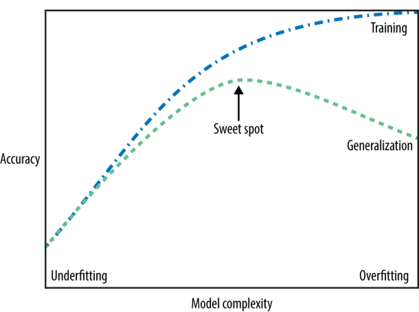
Regresión#
La regresión es una técnica estadística y de aprendizaje automático utilizada para modelar la relación entre una variable dependiente (o respuesta) y una o más variables independientes (o predictoras). El objetivo principal de la regresión es predecir el valor de la variable dependiente en función de los valores de las variables independientes, o entender cómo las variables independientes influyen en la variable dependiente.
Existen varios tipos de regresión, siendo los más comunes la regresión lineal y la regresión no lineal, que se seleccionan en función de la relación entre las variables.
Tipos de regresión#
Regresión lineal: Este es el tipo más básico de regresión, donde se asume que la relación entre la variable dependiente y las variables independientes es lineal. Se busca ajustar una línea recta que mejor represente los datos, minimizando la distancia entre los puntos de los datos y la línea ajustada. La regresión lineal simple involucra solo una variable independiente, mientras que la regresión lineal múltiple involucra varias variables independientes.
Regresión Ridge y Lasso: Son variaciones de la regresión lineal que incluyen regularización para evitar el sobreajuste. Ridge agrega una penalización a la magnitud de los coeficientes del modelo, mientras que Lasso no solo penaliza los coeficientes, sino que también puede llevar algunos de ellos a cero, lo que resulta en la selección automática de características.
Modelo de regresión lineal#
El objetivo principal de la regresión es encontrar los coeficientes que mejor ajusten el modelo, minimizando el error o la diferencia entre los valores predichos y los valores reales.
El modelo tiene la forma:
este se denomina, modelo de regresión lineal clásico, si se cumplen los siguientes supuestos:
\(E(\boldsymbol{\varepsilon})=\boldsymbol{0}\)
\(Cov(\boldsymbol{\varepsilon})=E(\boldsymbol{\varepsilon}\boldsymbol{\varepsilon}^{T})=\sigma^{2}\boldsymbol{I}\)
La matriz de diseño \(\boldsymbol{X}\) tiene rango completo, es decir \(\textrm{rk}(\boldsymbol{X})=p+1\)
El
modelo de regresión normalclasico es obtenido si adicionalmente se tiene que \(\boldsymbol{\varepsilon}\sim N(\boldsymbol{0}, \sigma^{2}\boldsymbol{I})\).El
modelo de regresión lineal(1) puede escribirse en la siguiente forma
En el curso de
modelos linealesse estudian estimaciones del vector de coeficientes de regresión \(\boldsymbol{\beta}\) utilizando método demínimos cuadradosymáxima verosimilitud.
A partir del sistema (2), se puede observar que la \(i\)-esima predicción para un modelo lineal es la siguiente:
Aquí, \(x_{i1},\dots, x_{ip}\) denotan las
variables predictoraso características (en este ejemplo, el número de características es \(p\)). Los valores, \(\hat{\beta}_{i},~i=0,1,\dots,p\), son lo parámetros aprendidos por el modelo y \(\hat{y}_{i}\) es la predicción obtenida por el modelo. Para un conjunto de datos con una sola característica
Aquí, \(\hat{\beta}_{1}\) es la pendiente y \(\hat{\beta}_{0}\) es el desplazamiento en el eje \(y\). Para más características, \(\boldsymbol{\hat{\beta}}\) contiene las pendientes a lo largo de cada eje de características. Alternativamente, se puede pensar en la respuesta predicha como una suma ponderada de las características de entrada, con pesos (que pueden ser negativos) dados por las entradas de \(\boldsymbol{\hat{\beta}}\).
Veamos una idea visual de la regresión lineal simple


Regresión lineal simple#
El siguiente conjunto de datos relaciona los años de experiencia laboral con los salarios percibidos por empleados. Estas dos variables ofrecen una perspectiva clave para entender cómo la experiencia profesional puede influir en la remuneración en el contexto laboral.
Las columnas presentes en el archivo son:
YearsExperience: Indica los años de experiencia acumulada por un empleado. Esta variable podría ser útil para evaluar el crecimiento salarial promedio según la trayectoria laboral.
Salary: Refleja el salario anual correspondiente a esos años de experiencia. Este dato permite analizar la progresión del salario a medida que los empleados ganan más años de experiencia, lo que podría ser útil para modelos predictivos de salario.
Este tipo de información suele ser relevante en estudios de recursos humanos, análisis de mercado laboral, o al construir modelos de regresión que estimen el salario en función de los años de experiencia, ayudando a identificar patrones o desigualdades salariales.
1. Importemos las librerias#
import numpy as np # Importa la librería NumPy para operaciones matemáticas avanzadas.
import matplotlib.pyplot as plt # Importa Matplotlib para visualización de datos.
import pandas as pd # Importa pandas para manipulación y análisis de datos.
import seaborn as sns # Importa seaborn para la visualizacion de datos
import warnings # Importa warnings para las advertencia
# Importa funciones de Scikit-learn para dividir el conjunto de datos y aplicar regresión lineal.
from sklearn.model_selection import train_test_split
from sklearn.linear_model import LinearRegression
# Importa la librería Statsmodels para ajustar modelos de regresión con más opciones estadísticas.
import statsmodels.formula.api as smf
2. Carguemos los datos#
# Cargar el archivo CSV para inspeccionar su contenido
file_path = 'C:/Users/cdeor/OneDrive/Documentos/MachineLearningDipSerfinanzas/jbook_ml202430/docs/_data/dataml/Salary_Data.csv'
df_salary = pd.read_csv(file_path)
3. EDA#
Procedemos a realizar un análisis exploratorio de datos para investigar y resumir principales características de nuestros datos.
# Mostrar las primeras filas del conjunto de datos para entender su estructura
df_salary.head()
| YearsExperience | Salary | |
|---|---|---|
| 0 | 1.1 | 39343.0 |
| 1 | 1.3 | 46205.0 |
| 2 | 1.5 | 37731.0 |
| 3 | 2.0 | 43525.0 |
| 4 | 2.2 | 39891.0 |
# Mostrar la información
df_salary.info()
<class 'pandas.core.frame.DataFrame'>
RangeIndex: 30 entries, 0 to 29
Data columns (total 2 columns):
# Column Non-Null Count Dtype
--- ------ -------------- -----
0 YearsExperience 30 non-null float64
1 Salary 30 non-null float64
dtypes: float64(2)
memory usage: 608.0 bytes
# tamaño de los datos
df_salary.shape
(30, 2)
El método DataFrame.describe() genera estadísticos descriptivos que resumen la tendencia central, la dispersión y la forma de la distribución de un conjunto de datos, excluyendo los valores NaN. Este método es útil para obtener una visión general del comportamiento de los datos numéricos dentro del DataFrame.
Algunos de los estadísticos que se generan incluyen:
Conteo (count): La cantidad de valores no nulos.
Promedio (mean): El valor promedio de la columna.
Desviación estándar (std): La medida de dispersión o variabilidad de los datos.
Mínimo (min) y máximo (max): Los valores más extremos.
Cuartiles (25%, 50%, 75%): Los valores que dividen los datos en cuatro partes iguales.
Es importante destacar que el método describe() solo trabaja con valores numéricos por defecto. Si el DataFrame contiene alguna columna categórica, el método la ignorará y solo mostrará el resumen de las columnas numéricas. Sin embargo, puedes incluir un resumen para todas las columnas, incluidas las categóricas, pasando el parámetro include="all".
# Generar estadísticos descriptivos con salary_data
df_salary.describe()
| YearsExperience | Salary | |
|---|---|---|
| count | 30.000000 | 30.000000 |
| mean | 5.313333 | 76003.000000 |
| std | 2.837888 | 27414.429785 |
| min | 1.100000 | 37731.000000 |
| 25% | 3.200000 | 56720.750000 |
| 50% | 4.700000 | 65237.000000 |
| 75% | 7.700000 | 100544.750000 |
| max | 10.500000 | 122391.000000 |
4. Datos faltantes o NANs#
Verifiquemos además si existen datos faltantes en nuestro conjunto de datos
df_salary.isnull().sum()
YearsExperience 0
Salary 0
dtype: int64
5. Visualización de datos#
Realicemos un diagrama de cajas y bigotes para el salario
# Ignorar advertencias de futuras versiones
warnings.filterwarnings('ignore')
# # Establecer el estilo de las gráficas como 'whitegrid'
sns.set_style("whitegrid")
# Diagrama de cajas y bigotes para 'Salary'
plt.figure(figsize=(7, 5))
sns.boxplot(y=df_salary['Salary'])
plt.title('Diagrama de Cajas y Bigotes - Salario')
plt.show()
Este gráfico muestra la distribución de los salarios en el conjunto de datos. Podemos observar lo siguiente:
La mayor concentración de salarios está en el rango entre 50,000 y 100,000 unidades monetarias.
La mediana se encuentra alrededor de los 70,000, lo que indica que la mitad de los salarios están por debajo de este valor.
# Ignorar advertencias de futuras versiones
warnings.filterwarnings('ignore')
# # Establecer el estilo de las gráficas como 'whitegrid'
sns.set_style("whitegrid")
# Diagrama de cajas y bigotes para 'YearsExperience'
plt.figure(figsize=(7, 5))
sns.boxplot(y=df_salary['YearsExperience'])
plt.title('Diagrama de Cajas y Bigotes - Años de Experiencia')
plt.show()

Este gráfico muestra la distribución de los años de experiencia:
La mayoría de los empleados tiene entre 2 y 7 años de experiencia.
No se observan valores atípicos destacados en la variable de años de experiencia.
La mediana se encuentra alrededor de los 5 años de experiencia, lo que sugiere que el conjunto de datos está centrado en empleados con experiencia moderada.
# Gráfico de dispersión de 'Salary' vs 'YearsExperience'
plt.figure(figsize=(7, 5))
sns.scatterplot(x='YearsExperience', y='Salary', data=df_salary)
plt.title('Gráfico de Dispersión - Salario vs Años de Experiencia')
plt.show()

El gráfico de dispersión nos muestra cómo se relacionan los años de experiencia con el salario:
Existe una clara tendencia positiva: a medida que los empleados tienen más años de experiencia, su salario tiende a aumentar.
Sin embargo, parece haber cierta dispersión en los salarios para aquellos con más experiencia, lo que indica que el crecimiento salarial no es lineal ni uniforme en todos los casos.
# Mapa de calor de las correlaciones
plt.figure(figsize=(7, 5))
correlation_matrix = df_salary.corr()
sns.heatmap(correlation_matrix, annot=True, cmap='coolwarm_r', vmin=-1, vmax=1)
plt.title('Mapa de Calor de Correlaciones')
plt.show()

Este mapa de calor visualiza las correlaciones entre las variables Salary y YearsExperience:
La correlación entre ambas variables es alta y positiva (+0.97), lo que confirma que los empleados con más años de experiencia suelen tener salarios más altos.
Este fuerte coeficiente sugiere que la experiencia laboral es un predictor clave del salario, lo que podría ser relevante para modelos de predicción.
6. Construcción del modelo#
Se ajusta un modelo de regresión lineal utilizando Salary como variable respuesta y YearsExperience como variable predictora. En cualquier estudio predictivo, no solo es esencial ajustar el modelo, sino también evaluar su capacidad para predecir correctamente nuevas observaciones. Para realizar esta evaluación de manera adecuada, los datos se dividen en dos grupos: uno destinado al entrenamiento del modelo y otro reservado para pruebas, lo que permite validar su rendimiento en datos no utilizados durante el ajuste del modelo.
# División de los datos en conjuntos de entrenamiento y prueba
# X contiene la variable predictora 'YearsExperience' y y es la variable objetivo 'Salary'.
X = df_salary[['YearsExperience']]
y = df_salary['Salary']
# Se divide el conjunto de datos en un 80% para entrenamiento y un 20% para prueba.
# random_state = 42 asegura que la división sea reproducible.
# shuffle = True indica que los datos se mezclarán antes de dividirse.
X_train, X_test, y_train, y_test = train_test_split(
X, # Variables predictoras
y, # Variable objetivo
train_size = 0.8, # Tamaño del conjunto de entrenamiento
random_state = 42, # Para obtener resultados reproducibles
shuffle = True # Mezclar los datos antes de dividir
)
Observación
El número
42es comúnmente elegido en la literatura relacionada con la inteligencia artificial (AI) como un homenaje al libro de Douglas Adams, The Hitchhiker’s Guide to the Galaxy, una popular serie de ciencia ficción. En este libro, el número 42 es presentado como la respuesta a la gran pregunta sobre “la vida, el universo y todo lo demás”, según los cálculos de un superordenador llamado “Deep Thought”. Esta referencia ha ganado notoriedad tanto entre los aficionados al género como entre los miembros de la comunidad científica.En el contexto de la programación, el parámetro
random_statepuede tomar cualquier número entero. Si bien se suele utilizar42por razones simbólicas, en realidad cualquier entero positivo es válido. Además, se podría realizar ungrid searchpara encontrar el valor derandom_stateque proporcione el mejor rendimiento del modelo. Más adelante, abordaremos el uso de GridSearch.Es importante tener en cuenta que, si no se establece un valor específico para
random_state, como42u otro número entero, cada vez que se ejecute el código, se generará un conjunto de prueba diferente, lo que puede afectar la reproducibilidad de los resultados.
# Creación del modelo de regresión lineal
# Se crea un objeto de regresión lineal utilizando la clase LinearRegression de sklearn.
# Luego, se ajusta el modelo a los datos de entrenamiento X_train y y_train.
modelo = LinearRegression()
modelo.fit(X = X_train, y = y_train)
LinearRegression()In a Jupyter environment, please rerun this cell to show the HTML representation or trust the notebook.
On GitHub, the HTML representation is unable to render, please try loading this page with nbviewer.org.
LinearRegression()
Los parámetros de “pendiente” (\(\hat{\beta}_{i},~i=1,2,\dots,p\)), también llamados pesos o coeficientes, se almacenan en el atributo
coef_, mientras que el desplazamiento o intercepción (\(\hat{\beta}_{0}\)) se almacena en el atributointercept_:
print("lr.coef_: {}".format(modelo.coef_))
print("lr.intercept_: {}".format(modelo.intercept_))
lr.coef_: [9423.81532303]
lr.intercept_: 25321.583011776813
Observación
El guión bajo (_) al final de atributos como coef_ e intercept_ es una convención comúnmente utilizada en scikit-learn para indicar que dichos atributos son derivados de los datos de entrenamiento. Esta convención permite distinguir entre los atributos que son calculados por el modelo y los parámetros que son definidos por el usuario. De esta manera, los atributos que terminan con un guión bajo (_) indican que son aprendidos o ajustados durante el proceso de entrenamiento del modelo.
La función
modelo.predict()se utiliza enscikit-learnpara realizar predicciones utilizando un modelo previamente entrenado. En el contexto de un modelo de regresión lineal, como el que has ajustado,modelo.predict()toma como entrada un conjunto de datos (generalmente las variables predictoras) y devuelve las predicciones del modelo sobre esas entradas.
# para los datos conocidos del conjunto de train
y_pred_train = modelo.predict(X_train)
print(f"Primeras tres predicciones: {y_pred_train[0:3]}")
Primeras tres predicciones: [122386.880839 107308.77632215 63016.8443039 ]
# para los datos desconocidos
y_pred_test = modelo.predict(X_test)
print(f"Primeras tres predicciones: {y_pred_test[0:3]}")
Primeras tres predicciones: [115790.21011287 71498.27809463 102596.86866063]
7. Visualización del conjunto de entrenamiento y prueba#
# Crear una figura para mostrar ambas gráficas una al lado de la otra
plt.figure(figsize=(14, 6))
# Visualizar los resultados del conjunto de entrenamiento
plt.subplot(1, 2, 1)
plt.scatter(X_train, y_train, color="red")
plt.plot(X_train, modelo.predict(X_train), color="blue")
plt.title("Sueldo vs Años de Experiencia (Conjunto de Entrenamiento)")
plt.xlabel("Años de Experiencia")
plt.ylabel("Sueldo (en $)")
# Visualizar los resultados del conjunto de prueba
plt.subplot(1, 2, 2)
plt.scatter(X_test, y_test, color="red")
plt.plot(X_train, modelo.predict(X_train), color="blue")
plt.title("Sueldo vs Años de Experiencia (Conjunto de Testing)")
plt.xlabel("Años de Experiencia")
plt.ylabel("Sueldo (en $)")
# Mostrar las gráficas
plt.tight_layout()
plt.show()
Métricas de evaluacion del modelo de regresión#
La métricas de evaluación son medidas que se utilizan para evaluar el rendimiento de un modelo de regresión. Estas métricas permiten medir qué tan bien un modelo se ajusta a los datos observados y su capacidad para hacer predicciones precisas sobre nuevos datos. La elección de la métrica adecuada es crucial, ya que cada métrica puede destacar diferentes aspectos del rendimiento del modelo, como la magnitud del error, la sensibilidad a valores atípicos, o la proporción de la varianza explicada por el modelo.
# Importar las librerías necesarias para el cálculo de las métricas
from sklearn.metrics import mean_squared_error, mean_absolute_error, r2_score, mean_squared_log_error
Algunas métricas de evaluación del modelo son:
1. Error Cuadrático Medio (\(MSE\) - Mean Squared Error)#
El Error Cuadrático Medio (\(MSE\)) mide la media de los errores al cuadrado entre los valores predichos y los valores reales. Penaliza los errores grandes más que los pequeños debido a la elevación al cuadrado.
Este se utiliza para evaluar qué tan bien se ajusta el modelo a los datos de entrenamiento o de prueba. Un MSE más bajo indica un mejor ajuste del modelo.
Fórmula:
donde:
\(n\) es el número total de observaciones,
\(y_i\) son los valores reales,
\(\hat{y}_i\) son los valores predichos.
# Error Cuadrático Medio (MSE)
print("Training set MSE: {:.4f}".format(mean_squared_error(y_train, y_pred_train)))
print("Test set MSE: {:.4f}".format(mean_squared_error(y_test, y_pred_test)))
Training set MSE: 27102249.7313
Test set MSE: 49830096.8559
Interpretación de MSE:#
Diferencia significativa entre los MSE:
El MSE en el conjunto de prueba es considerablemente mayor que en el conjunto de entrenamiento. Esto indica que el modelo tiene un mejor rendimiento en los datos de entrenamiento en comparación con los datos no vistos (conjunto de prueba).
Esta diferencia sugiere que el modelo podría estar sobreajustado (overfitting), lo que significa que ha aprendido bien los detalles de los datos de entrenamiento, pero no generaliza de manera óptima a nuevos datos.
Sobreajuste (Overfitting):
El sobreajuste ocurre cuando el modelo se adapta demasiado a las particularidades del conjunto de entrenamiento, incluyendo el ruido, y por lo tanto tiene un error bajo en entrenamiento pero un error considerablemente mayor en los datos de prueba.
En este caso, la diferencia en los MSEs indica un potencial sobreajuste, ya que el error en los datos de prueba es casi el doble del error en los datos de entrenamiento.
Magnitud del MSE:
El MSE está en las unidades de la variable objetivo (salario), elevadas al cuadrado. Si bien el valor del MSE no es fácilmente interpretable directamente, la gran diferencia entre el conjunto de entrenamiento y el de prueba indica que el modelo no está generalizando bien.
Conclusiones de MSE:#
El modelo tiene un rendimiento significativamente mejor en el conjunto de entrenamiento que en el conjunto de prueba, lo que sugiere que podría estar sobreajustado.
Es posible que el modelo esté capturando patrones específicos del conjunto de entrenamiento que no se replican bien en datos nuevos.
Para mejorar el rendimiento en el conjunto de prueba, podrían considerarse las siguientes acciones:
Aplicar técnicas de regularización (como Ridge o Lasso) para reducir el sobreajuste.
Implementar validación cruzada para evaluar mejor el rendimiento del modelo y ajustar sus hiperparámetros.
Obtener más datos de entrenamiento para ayudar al modelo a generalizar mejor a nuevos datos.
2. Error Absoluto Medio (\(MAE\) - Mean Absolute Error)#
El Error Absoluto Medio (\(MAE\)) mide el promedio de las diferencias absolutas entre los valores predichos y los valores reales. No eleva al cuadrado los errores, por lo que no es tan sensible a valores atípicos.
Este se utiliza cuando queremos una interpretación más directa del error medio en las mismas unidades que la variable objetivo.
Fórmula:
donde:
\(n\) es el número total de observaciones,
\(y_i\) son los valores reales,
\(\hat{y}_i\) son los valores predichos.
# Error Absoluto Medio (MAE)
print("Training set MAE: {:.4f}".format(mean_absolute_error(y_train, y_pred_train)))
print("Test set MAE: {:.4f}".format(mean_absolute_error(y_test, y_pred_test)))
Training set MAE: 4221.0467
Test set MAE: 6286.4538
Interpretación de MAE:#
Diferencia entre los MAE de entrenamiento y prueba:
El MAE en el conjunto de prueba es significativamente mayor que en el conjunto de entrenamiento. Esto indica que el modelo tiene un mejor rendimiento en los datos de entrenamiento que en los datos de prueba.
Esta diferencia sugiere que el modelo podría estar sobreajustado (overfitting). Es decir, el modelo se ajusta muy bien a los datos de entrenamiento, pero no generaliza tan bien cuando se le presentan datos nuevos.
Magnitud del MAE:
El MAE mide el error promedio absoluto en las predicciones, es decir, cuánto se desvían las predicciones del modelo en promedio respecto a los valores reales de salario. El error promedio en el conjunto de entrenamiento es de aproximadamente 4,221 unidades monetarias, mientras que en el conjunto de prueba es de 6,286 unidades monetarias.
Aunque la diferencia entre los errores en ambos conjuntos no es enorme, sigue siendo notable. Esto indica que el modelo está haciendo mejores predicciones en los datos que ha visto (entrenamiento) en comparación con los datos que no ha visto antes (prueba).
Posible sobreajuste (Overfitting):
El hecho de que el error en el conjunto de prueba sea mayor que en el conjunto de entrenamiento sugiere que el modelo está capturando patrones específicos del conjunto de entrenamiento que no se reflejan bien en los nuevos datos. Este comportamiento es típico de un modelo que está sobreajustado.
En este caso, el modelo podría estar adaptándose demasiado a las peculiaridades de los datos de entrenamiento, y esto está afectando su capacidad para generalizar a datos no vistos.
Conclusiones de MAE:#
La diferencia entre los MAE sugiere que el modelo está funcionando bien en el conjunto de entrenamiento, pero tiene un peor rendimiento en el conjunto de prueba, lo que indica que podría estar sobreajustado.
El modelo tiene un error promedio en las predicciones de salario de aproximadamente 6,286 unidades monetarias en los datos de prueba, lo que podría ser un error significativo dependiendo del contexto del problema.
Para mejorar el rendimiento del modelo y reducir el posible sobreajuste, se pueden tomar las siguientes acciones:
Aplicar técnicas de regularización (como Ridge o Lasso) para reducir la complejidad del modelo y mejorar la generalización.
Utilizar validación cruzada para evaluar el rendimiento del modelo en múltiples divisiones de los datos y reducir el riesgo de sobreajuste.
Aumentar el tamaño del conjunto de datos de entrenamiento, si es posible, para ayudar al modelo a generalizar mejor.
3. Raíz del Error Cuadrático Medio (\(RMSE\) - Root Mean Squared Error)#
El \(RMSE\) es la raíz cuadrada del \(MSE\) y devuelve el error en las mismas unidades que la variable dependiente, lo que facilita la interpretación.
Este al igual que el \(MSE\), mide el ajuste del modelo, pero es más fácil de interpretar porque está en las mismas unidades que los datos.
Fórmula:
donde:
\(n\) es el número total de observaciones,
\(y_i\) son los valores reales,
\(\hat{y}_i\) son los valores predichos.
# Raíz del Error Cuadrático Medio (RMSE)
print("Training set RMSE: {:.4f}".format(np.sqrt(mean_squared_error(y_train, y_pred_train))))
print("Test set RMSE: {:.4f}".format(np.sqrt(mean_squared_error(y_test, y_pred_test))))
Training set RMSE: 5205.9821
Test set RMSE: 7059.0436
Interpretación de RMSE:#
Diferencia entre los RMSE de entrenamiento y prueba:
El RMSE en el conjunto de prueba es mayor que en el conjunto de entrenamiento. Esto significa que el modelo está cometiendo errores más grandes en las predicciones de los datos no vistos (conjunto de prueba) en comparación con los datos con los que fue entrenado.
Aunque la diferencia entre ambos RMSE no es extrema, sugiere que el modelo podría estar sobreajustado (overfitting) a los datos de entrenamiento. El modelo parece ajustarse mejor a los datos que ya ha visto y tiene un rendimiento inferior en nuevos datos.
Magnitud del RMSE:
El RMSE te dice, en promedio, cuánto se desvían las predicciones del modelo respecto a los valores reales, pero en las mismas unidades de la variable objetivo (en este caso, el salario).
En el conjunto de entrenamiento, el error promedio es de aproximadamente 5,206 unidades monetarias, mientras que en el conjunto de prueba, el error promedio es de 7,059 unidades monetarias.
Esto significa que en datos de prueba (nuevos datos no vistos), las predicciones del modelo están, en promedio, a 7,059 unidades de los valores reales de salario.
Posible sobreajuste (Overfitting):
El hecho de que el RMSE sea mayor en el conjunto de prueba sugiere un posible sobreajuste. Aunque el modelo se desempeña bien en el conjunto de entrenamiento (con un RMSE más bajo), su rendimiento en datos no vistos no es tan bueno.
Sin embargo, la diferencia en los RMSE entre los conjuntos de entrenamiento y prueba no es excesivamente grande, lo que indica que el sobreajuste no es muy severo, pero aún podría mejorarse.
Comparación con el MAE y el MSE:
El RMSE es más sensible a los errores grandes en las predicciones que el MAE. Dado que el RMSE penaliza más los errores grandes, un RMSE mayor en el conjunto de prueba puede estar indicando que hay algunos errores considerables en las predicciones que el modelo está haciendo en datos no vistos.
Conclusiones de RMSE:#
El RMSE más alto en el conjunto de prueba en comparación con el de entrenamiento sugiere que el modelo podría estar ligeramente sobreajustado. Aunque no hay una diferencia extremadamente grande entre los valores de RMSE, el modelo claramente tiene un mejor rendimiento en los datos de entrenamiento.
La magnitud del error promedio (alrededor de 7,059 unidades monetarias en el conjunto de prueba) puede considerarse significativa, dependiendo del rango de salarios en los datos. Esto indica que hay margen para mejorar las predicciones del modelo.
Para mejorar el rendimiento del modelo, especialmente en datos no vistos, se pueden considerar las siguientes acciones:
Aplicar técnicas de regularización (como Ridge o Lasso) para reducir el sobreajuste.
Implementar validación cruzada para obtener una mejor medida de la capacidad de generalización del modelo.
Considerar añadir más datos de entrenamiento, si es posible, o explorar nuevas variables predictoras que puedan mejorar la precisión del modelo.
Resumen de RMSE:#
El modelo tiene un RMSE más bajo en el conjunto de entrenamiento, lo que indica un buen ajuste a esos datos, pero el mayor RMSE en el conjunto de prueba sugiere que el modelo no generaliza tan bien en datos nuevos. Aunque la diferencia no es extremadamente grande, esto sugiere que el modelo puede estar sobreajustado y hay margen para mejorar su capacidad de generalización.
4. Coeficiente de Determinación (\(R^2\) - \(R\)-squared)#
El coeficiente de determinación (\(R^2\)) mide la proporción de la varianza de la variable dependiente que es explicada por las variables independientes. Su valor está entre 0 y 1.
Esto indica qué tan bien se ajusta el modelo a los datos. Un valor cercano a 1 sugiere un ajuste muy bueno.
Fórmula:
donde:
\(n\) es el número total de observaciones,
\(y_i\) son los valores reales,
\(\hat{y}_i\) son los valores predichos.
\(\bar{y}\) es el promedio de los valores reales.
# Coeficiente de Determinación (R²)
print("Training set R²: {:.4f}".format(r2_score(y_train, y_pred_train)))
print("Test set R²: {:.4f}".format(r2_score(y_test, y_pred_test)))
Training set R²: 0.9645
Test set R²: 0.9024
Como tenemos integrado el
.scoreen scikit-learn, este también calcula \(R^2\)
# Coeficiente de Determinación (R²)
print("Training set R²: {:.4f}".format(modelo.score(X_train, y_train)))
print("Test set R²: {:.4f}".format(modelo.score(X_test, y_test)))
Training set R²: 0.9645
Test set R²: 0.9024
Interpretación de \(R^2\):#
Valor de \(R^2\):
El \(R^2\) indica qué proporción de la variabilidad en la variable dependiente (salario) es explicada por el modelo basado en la variable independiente (años de experiencia). Un valor de R² más cercano a 1 indica un mejor ajuste del modelo.
En el conjunto de entrenamiento, un \(R^2\) de 0.9645 significa que el modelo explica el 96.45% de la variabilidad en los salarios en función de los años de experiencia.
En el conjunto de prueba, un \(R^2\) de 0.9024 indica que el modelo sigue explicando el 90.24% de la variabilidad en los salarios, lo que sugiere que el modelo sigue siendo bastante preciso en datos no vistos.
Diferencia entre los valores de \(R^2\) de entrenamiento y prueba:
Aunque el \(R^2\) del conjunto de prueba es un poco menor que en el conjunto de entrenamiento, la diferencia no es grande. Esto sugiere que el modelo generaliza relativamente bien en nuevos datos, aunque hay una leve disminución en su capacidad para explicar la variabilidad en los salarios en los datos de prueba.
Esta diferencia menor podría indicar un ligero sobreajuste (overfitting), donde el modelo se ajusta un poco mejor a los datos de entrenamiento que a los de prueba, pero aún generaliza razonablemente bien.
Buen ajuste del modelo:
Con un \(R^2\) superior a 0.90 tanto en los datos de entrenamiento como de prueba, podemos decir que el modelo tiene un buen ajuste y que la variable de años de experiencia explica bien la variabilidad en los salarios.
A pesar de la pequeña disminución en el rendimiento en los datos de prueba, el modelo sigue siendo útil para predecir salarios en función de la experiencia.
Conclusiones de \(R^2\):#
El alto \(R^2\) en el conjunto de entrenamiento (0.9645) indica que el modelo está bien ajustado a los datos de entrenamiento.
El \(R^2\) del conjunto de prueba (0.9024) sugiere que el modelo generaliza bien en datos no vistos, aunque existe una pequeña diferencia que podría indicar un leve sobreajuste.
A pesar de esta pequeña diferencia, el modelo sigue siendo robusto, ya que explica más del 90% de la variabilidad en los salarios en el conjunto de prueba.
Posibles acciones para mejorar (si es necesario) de \(R^2\):#
Dado que el modelo ya está funcionando bien, las siguientes acciones solo serían necesarias si se busca mejorar aún más la generalización:
Aplicar técnicas de regularización (como Ridge o Lasso) para evitar cualquier posible sobreajuste.
Implementar validación cruzada para obtener una mejor evaluación de la capacidad del modelo para generalizar.
Añadir más datos o explorar otras características predictoras que puedan mejorar la precisión del modelo.
Resumen de \(R^2\):#
El modelo tiene un \(R^2\) alto en ambos conjuntos (entrenamiento y prueba), lo que indica que el modelo ajusta bien los datos y generaliza razonablemente bien a datos no vistos. La pequeña diferencia entre el R² del entrenamiento y el de prueba podría sugerir un leve sobreajuste, pero en general el modelo es sólido para predecir salarios basados en la experiencia.
¿Cual sería un buen score?
Definir un buen score en machine learning es un tema subjetivo, y bastante ligado a los datos. Pero, de forma coherente con los estándares de la industria, cualquier score superior al 70% es un gran rendimiento del modelo. De hecho, una medida de precisión de entre el 70% y el 90% no sólo es ideal, sino que es realista.
5. \(R^2\) Ajustado (Adjusted \(R\)-squared)#
El \(R^2\) ajustado es una versión modificada del coeficiente de determinación \(R^2\) que tiene en cuenta el número de predictores en el modelo. Penaliza la adición de predictores irrelevantes que no mejoran significativamente el modelo.
Es útil cuando se está comparando el rendimiento de modelos que tienen diferentes cantidades de variables independientes. Un \(R^2\) puede aumentar simplemente por agregar más variables, pero el \(R^2\) ajustado solo aumenta si las nuevas variables realmente mejoran el modelo.
Fórmula:
Donde:
\(R^2\) es el coeficiente de determinación,
\(n\) es el número de observaciones,
\(k\) es el número de predictores (variables independientes).
# Calcular R² ajustado train
n = len(y_train) # número de observaciones
p = X_train.shape[1] # número de predictores
r2_ajustado_train = 1 - (1 - modelo.score(X_train, y_train)) * (n - 1) / (n - p - 1)
# Calcular R² ajustado test
n = len(y_test) # número de observaciones
p = X_train.shape[1] # número de predictores
r2_ajustado_test = 1 - (1 - modelo.score(X_test, y_test)) * (n - 1) / (n - p - 1)
print("Training set R² ajustado: {:.4f}".format(r2_ajustado_train))
print("Test set R² ajustado: {:.4f}".format(r2_ajustado_test))
Training set R² ajustado: 0.9629
Test set R² ajustado: 0.8781
Interpretación de \(R^2\) ajustado:#
¿Qué es el \(R^2\) ajustado?:
El \(R^2\) ajustado es una versión ajustada del \(R^2\) que penaliza por la cantidad de predictores utilizados en el modelo. Es especialmente útil cuando se trabaja con múltiples variables independientes, ya que evita inflar artificialmente el \(R^2\) simplemente añadiendo más predictores que podrían no ser útiles.
El \(R^2\) ajustado proporciona una mejor medida de la capacidad de generalización del modelo cuando se tiene más de una variable predictora. Si solo tienes una variable predictora (como en este caso, con YearsExperience), la diferencia entre el \(R^2\) y el \(R^2\) ajustado será pequeña, como se refleja en tus resultados.
\(R^2\) ajustado en el conjunto de entrenamiento:
Un \(R^2\) ajustado de 0.9629 en el conjunto de entrenamiento sugiere que el modelo explica el 96.29% de la variación en los salarios en función de los años de experiencia, incluso teniendo en cuenta posibles sobreajustes.
La diferencia entre el \(R^2\) original (0.9645) y el \(R^2\) ajustado (0.9629) es muy pequeña, lo que indica que el modelo es bastante confiable en los datos de entrenamiento y que no hay un impacto significativo por tener un número limitado de predictores.
\(R^2\) ajustado en el conjunto de prueba:
Un \(R^2\) ajustado de 0.8781 en el conjunto de prueba significa que, cuando se penaliza la complejidad del modelo, este sigue explicando el 87.81% de la variación en los salarios en los datos no vistos.
La diferencia entre el \(R^2\) ajustado y el \(R^2\) original en el conjunto de prueba (0.9024) indica una leve penalización, lo que sugiere que el modelo no generaliza tan bien en comparación con su rendimiento en los datos de entrenamiento.
Comparación entre \(R^2\) ajustado en entrenamiento y prueba:
El \(R^2\) ajustado en el conjunto de entrenamiento es mayor que en el conjunto de prueba, lo que refleja que el modelo tiene un mejor ajuste a los datos con los que fue entrenado que a los nuevos datos.
La diferencia entre el \(R^2\) ajustado del conjunto de entrenamiento (0.9629) y el del conjunto de prueba (0.8781) sugiere que el modelo puede estar ligeramente sobreajustado (overfitting), ya que está funcionando un poco mejor en el conjunto de entrenamiento en comparación con el conjunto de prueba.
Conclusiones de \(R^2\) ajustado:#
El \(R^2\) ajustado más bajo en el conjunto de prueba (0.8781) en comparación con el conjunto de entrenamiento (0.9629) indica que, aunque el modelo está funcionando bien, hay una pequeña diferencia en la capacidad de generalización, lo que podría indicar un leve sobreajuste.
A pesar de esta diferencia, el \(R^2\) ajustado sigue siendo relativamente alto, lo que sugiere que el modelo es razonablemente robusto y explica la mayor parte de la variabilidad en los salarios, tanto en los datos de entrenamiento como en los de prueba.
Posibles acciones para mejorar \(R^2\) ajustado:#
Si deseas mejorar la capacidad de generalización del modelo, podrías aplicar técnicas de regularización como Ridge o Lasso para reducir el sobreajuste y mejorar el rendimiento en datos no vistos.
Implementar validación cruzada para tener una mejor estimación de la capacidad de generalización del modelo y asegurarse de que está optimizado para datos nuevos.
Explorar la adición de más características predictoras, si están disponibles, o aumentar el tamaño del conjunto de datos para mejorar aún más el ajuste y la generalización del modelo.
Resumen de \(R^2\) ajustado:#
El \(R^2\) ajustado del conjunto de entrenamiento (0.9629) y el del conjunto de prueba (0.8781) muestran que el modelo tiene un buen ajuste en los datos de entrenamiento, pero podría estar ligeramente sobreajustado. A pesar de esto, el modelo sigue explicando una gran parte de la variabilidad en los salarios, incluso en los datos de prueba. Sin embargo, hay margen para mejorar la capacidad de generalización mediante regularización u otras técnicas.
6. Error Medio Proporcional Absoluto (\(MAPE\) - Mean Absolute Percentage Error)#
El \(MAPE\) mide el error porcentual promedio entre los valores reales y los predichos, lo que permite interpretar el error en términos relativos.
Es útil para entender el error en términos porcentuales, lo que es valioso cuando las magnitudes de los datos varían mucho.
Fórmula:
donde:
\(n\) es el número total de observaciones,
\(y_i\) son los valores reales,
\(\hat{y}_i\) son los valores predichos.
# Error Medio Proporcional (MAPE)
mape_train = np.mean(np.abs((y_train - modelo.predict(X_train)) / y_train)) * 100
mape_test = np.mean(np.abs((y_test - modelo.predict(X_test)) / y_test)) * 100
print("Training set MAPE: {:.4f}".format(mape_train))
print("Test set MAPE: {:.4f}".format(mape_test))
Training set MAPE: 6.7656
Test set MAPE: 7.7449
Interpretación del MAPE:#
¿Qué es el MAPE?:
El MAPE mide el error porcentual medio absoluto entre los valores predichos y los valores reales. Indica el porcentaje promedio por el cual las predicciones del modelo difieren de los valores reales.
El MAPE se expresa como un porcentaje, por lo que un valor de 6.77% en el conjunto de entrenamiento significa que, en promedio, las predicciones del modelo difieren un 6.77% de los valores reales.
MAPE en el conjunto de entrenamiento:
Un MAPE de 6.77% en el conjunto de entrenamiento sugiere que el modelo tiene un error porcentual medio relativamente bajo en los datos con los que fue entrenado. En otras palabras, las predicciones del modelo en el conjunto de entrenamiento son bastante cercanas a los valores reales.
Un MAPE menor al 10% generalmente se considera un buen resultado, ya que implica que las predicciones están relativamente bien ajustadas a los valores reales.
MAPE en el conjunto de prueba:
Un MAPE de 7.74% en el conjunto de prueba sugiere que el modelo también predice con bastante precisión los valores de salario en datos no vistos, pero con un pequeño aumento en el error en comparación con los datos de entrenamiento.
Aunque hay una pequeña diferencia entre los valores de MAPE en el conjunto de entrenamiento y el de prueba, ambos valores son menores al 10%, lo que indica un buen desempeño del modelo.
Diferencia entre los MAPE de entrenamiento y prueba:
La diferencia entre el MAPE del conjunto de entrenamiento (6.77%) y el del conjunto de prueba (7.74%) es relativamente pequeña. Esta diferencia sugiere que el modelo tiene una buena capacidad de generalización, ya que no hay un aumento significativo en el error porcentual cuando se aplican las predicciones a nuevos datos.
Aunque el MAPE en el conjunto de prueba es un poco mayor, lo cual es esperado, esta diferencia no es lo suficientemente grande como para ser preocupante.
Conclusiones de MAPE:#
Los valores de MAPE tanto en el conjunto de entrenamiento (6.77%) como en el conjunto de prueba (7.74%) son relativamente bajos, lo que indica que el modelo está haciendo predicciones precisas en ambas muestras.
La pequeña diferencia entre los MAPE sugiere que el modelo no está sobreajustado y tiene una buena capacidad para generalizar a nuevos datos.
En general, los valores obtenidos indican que el modelo es confiable para hacer predicciones de salario basadas en la experiencia, con un error porcentual medio bastante razonable.
Posibles acciones para mejorar (si es necesario) de MAPE:#
Aunque los resultados son buenos, si se desea mejorar aún más la precisión del modelo, se podrían explorar las siguientes acciones:
Aplicar técnicas de regularización (como Ridge o Lasso) para reducir cualquier posible sobreajuste residual.
Aumentar el tamaño del conjunto de datos de entrenamiento o añadir más características predictoras relevantes, si están disponibles, para mejorar la precisión del modelo en datos no vistos.
Utilizar validación cruzada para asegurar una estimación robusta del rendimiento del modelo en diferentes divisiones de los datos.
Resumen de MAPE:#
El MAPE en el conjunto de entrenamiento es 6.77%, mientras que en el conjunto de prueba es 7.74%. Estos valores sugieren que el modelo tiene un buen rendimiento en ambas muestras, con una ligera disminución de precisión en los datos de prueba. En general, el modelo es robusto y las predicciones de salario basadas en la experiencia son razonablemente precisas, con un error porcentual medio bajo.
7. Error Cuadrático Medio de Logaritmo (\(MSLE\) - Mean Squared Logarithmic Error)#
El \(MSLE\) es una variante del \(MSE\) que utiliza los logaritmos de los valores reales y predichos, en lugar de los valores originales.
Este se utiliza cuando se quiere penalizar más los errores de predicción en valores pequeños que en valores grandes.
Fórmula:
donde:
\(n\) es el número total de observaciones,
\(y_i\) son los valores reales,
\(\hat{y}_i\) son los valores predichos.
# Error Cuadrático Medio de Logaritmo (MSLE)
msle_train = mean_squared_log_error(y_train, modelo.predict(X_train))
msle_test = mean_squared_log_error(y_test, modelo.predict(X_test))
print("Training set MSLE: {:.4f}".format(msle_train))
print("Test set MSLE: {:.4f}".format(msle_test))
Training set MSLE: 0.0075
Test set MSLE: 0.0082
Interpretación de MSLE:#
¿Qué es el MSLE?:
El Error Cuadrático Medio Logarítmico (MSLE) mide el error entre los logaritmos de las predicciones y los logaritmos de los valores reales. Es especialmente útil cuando deseas penalizar menos los errores grandes en las predicciones relativas, ya que considera las proporciones entre las predicciones y los valores reales.
Un MSLE bajo, como los valores obtenidos aquí, indica que las predicciones del modelo están relativamente cerca de los valores reales en términos proporcionales.
MSLE en el conjunto de entrenamiento:
Un MSLE de 0.0075 en el conjunto de entrenamiento sugiere que el modelo tiene un error logarítmico medio muy bajo. Esto significa que las diferencias entre los valores predichos y los valores reales, después de aplicar el logaritmo, son pequeñas.
El logaritmo suaviza las diferencias, lo que hace que este error sea útil cuando las diferencias relativas son importantes o cuando hay outliers en los datos.
MSLE en el conjunto de prueba:
El MSLE de 0.0082 en el conjunto de prueba indica que el modelo también tiene un error bajo en los datos no vistos. Aunque este valor es ligeramente mayor que el del conjunto de entrenamiento, la diferencia es pequeña.
Este bajo valor del MSLE sugiere que el modelo está prediciendo de manera precisa incluso en datos que no ha visto antes.
Diferencia entre los MSLE de entrenamiento y prueba:
La diferencia entre el MSLE del conjunto de entrenamiento (0.0075) y el del conjunto de prueba (0.0082) es mínima, lo que indica que el modelo tiene una buena capacidad de generalización y no muestra signos evidentes de sobreajuste (overfitting).
Esta pequeña diferencia es esperada, ya que los modelos suelen funcionar mejor en los datos con los que han sido entrenados, pero la diferencia aquí no es lo suficientemente grande como para ser preocupante.
Conclusiones de MSLE:#
Los valores bajos de MSLE en ambos conjuntos (entrenamiento y prueba) sugieren que el modelo es capaz de predecir los valores con un alto grado de precisión en términos relativos, incluso cuando se consideran errores grandes.
La pequeña diferencia entre el MSLE de entrenamiento y prueba sugiere que el modelo tiene una buena capacidad de generalización y está funcionando bien tanto en los datos de entrenamiento como en los datos no vistos.
Posibles acciones para mejorar de MSLE:#
Aunque los resultados son buenos, si se busca mejorar aún más la precisión del modelo, se pueden considerar las siguientes acciones:
Aplicar técnicas de regularización (como Ridge o Lasso) para reducir cualquier posible sobreajuste residual.
Explorar más variables predictoras, si están disponibles, para mejorar la precisión del modelo y reducir aún más el error.
Validación cruzada podría ser útil para obtener una mejor estimación de la capacidad de generalización del modelo en diferentes divisiones de los datos.
Resumen de MSLE:#
El MSLE en el conjunto de entrenamiento es 0.0075, mientras que en el conjunto de prueba es 0.0082. Estos valores bajos sugieren que el modelo está haciendo predicciones precisas tanto en los datos de entrenamiento como en los de prueba. La diferencia mínima entre ambos valores indica una buena capacidad de generalización, y el modelo es sólido en cuanto a su rendimiento en datos no vistos.
8. Error Relativo Absoluto (\(RAE\) - Relative Absolute Error)#
El \(RAE\) compara el error absoluto del modelo con el error absoluto de un modelo de referencia, que usualmente es el modelo que predice el valor medio de la variable dependiente.
Este evalúa el rendimiento relativo del modelo comparado con una solución trivial.
Fórmula:
donde:
\(n\) es el número total de observaciones,
\(y_i\) son los valores reales,
\(\hat{y}_i\) son los valores predichos.
\(\bar{y}\) es el promedio de los valores reales.
# Error Relativo Absoluto (RAE)
rae_train = np.sum(np.abs(y_train - modelo.predict(X_train))) / np.sum(np.abs(y_train - np.mean(y_train)))
rae_test = np.sum(np.abs(y_test - modelo.predict(X_test))) / np.sum(np.abs(y_test - np.mean(y_test)))
print("Training set RAE: {:.4f}".format(rae_train))
print("Test set RAE: {:.4f}".format(rae_test))
Training set RAE: 0.1684
Test set RAE: 0.3139
Interpretación de RAE:#
¿Qué es el RAE?:
El Error Relativo Absoluto (RAE) mide la suma de los errores absolutos de las predicciones en relación con la suma de los errores absolutos de un modelo simple que predice la media de los valores reales. En resumen, compara el rendimiento del modelo con un modelo base.
Un valor de RAE más cercano a 0 indica que el modelo tiene un buen rendimiento en comparación con el modelo base. Cuanto más se acerque a 1, peor es el rendimiento relativo del modelo.
RAE en el conjunto de entrenamiento:
Un RAE de 0.1684 en el conjunto de entrenamiento significa que el modelo está cometiendo un error absoluto aproximadamente 16.84% del error que cometería un modelo que simplemente predijera la media de los valores de entrenamiento. Este es un resultado muy bueno, ya que sugiere que el modelo es significativamente mejor que predecir simplemente la media.
RAE en el conjunto de prueba:
El RAE de 0.3139 en el conjunto de prueba indica que el modelo está cometiendo un error absoluto aproximadamente 31.39% del error que cometería un modelo que simplemente predijera la media de los valores de prueba.
Aunque este valor sigue siendo bueno (ya que está lejos de 1), es mayor que el RAE en el conjunto de entrenamiento, lo que sugiere que el modelo es un poco menos efectivo en los datos de prueba que en los de entrenamiento.
Diferencia entre los RAE de entrenamiento y prueba:
La diferencia entre el RAE del conjunto de entrenamiento (0.1684) y el del conjunto de prueba (0.3139) es notable. Esto sugiere que el modelo tiene un rendimiento considerablemente mejor en los datos de entrenamiento que en los datos de prueba, lo que podría ser una señal de sobreajuste (overfitting).
El hecho de que el RAE sea mayor en el conjunto de prueba sugiere que el modelo está capturando detalles específicos del conjunto de entrenamiento que no se replican bien en los nuevos datos.
Conclusiones de RAE:#
El RAE del conjunto de entrenamiento es bajo (0.1684), lo que indica que el modelo está funcionando significativamente mejor que un modelo que predijera simplemente la media de los valores reales.
El RAE del conjunto de prueba es mayor (0.3139), lo que sugiere que el modelo no generaliza tan bien a los nuevos datos como lo hace en el conjunto de entrenamiento. A pesar de esto, el modelo sigue teniendo un rendimiento relativamente bueno en comparación con un modelo base.
La diferencia entre los RAE de entrenamiento y prueba indica que el modelo podría estar sobreajustado a los datos de entrenamiento y necesita mejorar su capacidad de generalización.
Posibles acciones para mejorar de RAE:#
Aplicar regularización: Utilizar técnicas de regularización como Ridge o Lasso para reducir el sobreajuste y mejorar la capacidad de generalización del modelo en los datos de prueba.
Validación cruzada: Implementar validación cruzada para obtener una estimación más robusta del rendimiento del modelo en diferentes particiones de los datos.
Añadir más datos: Si es posible, aumentar el tamaño del conjunto de datos de entrenamiento podría ayudar a mejorar la capacidad del modelo para generalizar a nuevos datos.
Resumen de RAE:#
El RAE en el conjunto de entrenamiento es 0.1684, lo que sugiere un buen ajuste a los datos de entrenamiento, mientras que el RAE en el conjunto de prueba es 0.3139, lo que indica un rendimiento un poco peor en datos no vistos.
La diferencia entre estos valores sugiere que el modelo está capturando patrones específicos de los datos de entrenamiento y no generaliza tan bien en datos nuevos, lo que podría indicar un leve sobreajuste. Para mejorar, se podrían aplicar técnicas de regularización o validación cruzada.
9. Error Cuadrático Relativo (\(RSE\) - Relative Squared Error)#
El \(RSE\) compara el error cuadrático del modelo con el error cuadrático de un modelo de referencia (generalmente el promedio de los valores reales).
Similar al \(RAE\), compara el rendimiento del modelo frente a un predictor básico.
Fórmula:
donde:
\(n\) es el número total de observaciones,
\(y_i\) son los valores reales,
\(\hat{y}_i\) son los valores predichos.
\(\bar{y}\) es el promedio de los valores reales.
# Error Cuadrático Relativo (RSE)
rse_train = np.sum((y_train - modelo.predict(X_train))**2) / np.sum((y_train - np.mean(y_train))**2)
rse_test = np.sum((y_test - modelo.predict(X_test))**2) / np.sum((y_test - np.mean(y_test))**2)
print("Training set RSE: {:.4f}".format(rse_train))
print("Test set RSE: {:.4f}".format(rse_test))
Training set RSE: 0.0355
Test set RSE: 0.0976
Interpretación de RSE:#
¿Qué es el RSE?:
El Error Cuadrático Relativo (RSE) mide el error cuadrático de las predicciones en relación con el error cuadrático de un modelo simple que predice la media de los valores reales. Al igual que el RAE, el RSE compara el rendimiento del modelo con un modelo base que predice la media.
Un valor de RSE más cercano a 0 indica que el modelo está funcionando mucho mejor que un modelo base, mientras que un valor más cercano a 1 indica que el modelo tiene un rendimiento comparable al de un modelo base.
RSE en el conjunto de entrenamiento:
Un RSE de 0.0355 en el conjunto de entrenamiento significa que el modelo está cometiendo un error cuadrático que es aproximadamente el 3.55% del error que cometería un modelo que predijera simplemente la media de los salarios en los datos de entrenamiento.
Este valor extremadamente bajo indica que el modelo tiene un rendimiento significativamente mejor que el modelo base en el conjunto de entrenamiento, ajustándose muy bien a los datos.
RSE en el conjunto de prueba:
Un RSE de 0.0976 en el conjunto de prueba indica que el modelo está cometiendo un error cuadrático que es aproximadamente el 9.76% del error que cometería un modelo que simplemente predijera la media de los salarios en los datos de prueba.
Aunque este valor sigue siendo bajo, es considerablemente mayor que el RSE en el conjunto de entrenamiento, lo que sugiere que el modelo no tiene el mismo nivel de precisión en los datos no vistos.
Diferencia entre los RSE de entrenamiento y prueba:
La diferencia entre el RSE del conjunto de entrenamiento (0.0355) y el del conjunto de prueba (0.0976) indica que el modelo está funcionando mejor en los datos de entrenamiento que en los datos de prueba, lo que sugiere un posible sobreajuste (overfitting).
Aunque el RSE en el conjunto de prueba sigue siendo bajo, esta diferencia sugiere que el modelo ha aprendido patrones específicos de los datos de entrenamiento que no generalizan tan bien a los datos de prueba.
Conclusiones de RSE:#
El RSE del conjunto de entrenamiento es muy bajo (0.0355), lo que indica que el modelo tiene un rendimiento significativamente mejor que un modelo que predice la media de los salarios en esos datos.
El RSE del conjunto de prueba es mayor (0.0976), pero sigue siendo bajo, lo que sugiere que el modelo sigue siendo mejor que un modelo base en los datos de prueba, aunque con menor precisión en comparación con los datos de entrenamiento.
La diferencia entre los RSE de entrenamiento y prueba indica un posible sobreajuste, donde el modelo ha aprendido patrones específicos de los datos de entrenamiento que no se replican bien en los datos no vistos.
Posibles acciones para mejorar de RSE:#
Aplicar regularización: Utilizar técnicas de regularización como Ridge o Lasso podría ayudar a reducir el sobreajuste y mejorar la capacidad del modelo para generalizar a nuevos datos.
Validación cruzada: Implementar validación cruzada para evaluar mejor el rendimiento del modelo y optimizar su capacidad de generalización en diferentes subconjuntos de los datos.
Añadir más datos: Si es posible, aumentar el tamaño del conjunto de entrenamiento o explorar otras características predictoras para mejorar aún más la precisión y capacidad de generalización del modelo.
Resumen de RSE:#
El RSE en el conjunto de entrenamiento es 0.0355, lo que sugiere que el modelo se ajusta muy bien a los datos de entrenamiento. El RSE en el conjunto de prueba es 0.0976, lo que indica que el modelo tiene un buen rendimiento en los datos no vistos, pero con una precisión algo menor.
La diferencia entre los RSE sugiere que el modelo podría estar ligeramente sobreajustado, pero sigue siendo significativamente mejor que un modelo base que predice simplemente la media de los valores de salario.
Estas métricas permiten evaluar de manera precisa el rendimiento de los modelos de regresión. Dependiendo de la naturaleza del problema y de los objetivos del proyecto, se puede elegir una o varias métricas para obtener una visión completa del ajuste del modelo.
Regresión Lineal con la librería Statsmodels#
La implementación de regresión lineal en Statsmodels es más completa que la de Scikit-learn, ya que, además de ajustar el modelo, permite calcular pruebas estadísticas y realizar análisis necesarios para verificar que se cumplen las condiciones sobre las que se basa este tipo de modelos. Esto la convierte en una herramienta más robusta para el análisis de regresión.
Ventajas de Statsmodels
Pruebas estadísticas: Permite realizar pruebas como el análisis de varianza (ANOVA), pruebas de significancia de los coeficientes, e intervalos de confianza para los parámetros del modelo.
Análisis de residuales: Facilita el análisis de los residuos, permitiendo evaluar si el modelo cumple con los supuestos de homocedasticidad, normalidad de los errores, entre otros.
Formas de entrenar un modelo de regresión en Statsmodels:#
Indicando la fórmula del modelo:
En esta forma, se especifica la fórmula del modelo (similar a cómo se hace en R) y se pasan los datos de entrenamiento como un DataFrame que incluye tanto la variable respuesta como los predictores.
Ejemplo de uso:
# datos train
datos_train = pd.concat([X_train, y_train], axis = 1)
# construcción del modelo
modelo = smf.ols(formula='Salary ~ YearsExperience', data=datos_train)
resultado = modelo.fit()
print(resultado.summary())
OLS Regression Results
==============================================================================
Dep. Variable: Salary R-squared: 0.965
Model: OLS Adj. R-squared: 0.963
Method: Least Squares F-statistic: 598.4
Date: Wed, 16 Oct 2024 Prob (F-statistic): 1.91e-17
Time: 18:54:38 Log-Likelihood: -239.44
No. Observations: 24 AIC: 482.9
Df Residuals: 22 BIC: 485.2
Df Model: 1
Covariance Type: nonrobust
===================================================================================
coef std err t P>|t| [0.025 0.975]
-----------------------------------------------------------------------------------
Intercept 2.532e+04 2285.938 11.077 0.000 2.06e+04 3.01e+04
YearsExperience 9423.8153 385.233 24.463 0.000 8624.891 1.02e+04
==============================================================================
Omnibus: 0.647 Durbin-Watson: 2.026
Prob(Omnibus): 0.724 Jarque-Bera (JB): 0.697
Skew: 0.323 Prob(JB): 0.706
Kurtosis: 2.472 Cond. No. 12.5
==============================================================================
Notes:
[1] Standard Errors assume that the covariance matrix of the errors is correctly specified.
Pasando matrices de predictores y la variable respuesta:
En este enfoque, se pasa una matriz con los predictores y otra con la variable respuesta, similar a cómo se hace en Scikit-learn. Sin embargo, en Statsmodels es necesario añadir manualmente una columna de unos (
1s) a la matriz de predictores para incluir el término independiente (intercepto) en el modelo.Ejemplo de uso:
# importar la libreria
import statsmodels.api as sm
# construcción del modelo
X_train = sm.add_constant(X_train, prepend=True) # Añadir la columna de 1s para el intercepto
modelo = sm.OLS(endog=y_train, exog=X_train)
modelo = modelo.fit()
print(modelo.summary())
OLS Regression Results
==============================================================================
Dep. Variable: Salary R-squared: 0.965
Model: OLS Adj. R-squared: 0.963
Method: Least Squares F-statistic: 598.4
Date: Wed, 16 Oct 2024 Prob (F-statistic): 1.91e-17
Time: 18:58:57 Log-Likelihood: -239.44
No. Observations: 24 AIC: 482.9
Df Residuals: 22 BIC: 485.2
Df Model: 1
Covariance Type: nonrobust
===================================================================================
coef std err t P>|t| [0.025 0.975]
-----------------------------------------------------------------------------------
const 2.532e+04 2285.938 11.077 0.000 2.06e+04 3.01e+04
YearsExperience 9423.8153 385.233 24.463 0.000 8624.891 1.02e+04
==============================================================================
Omnibus: 0.647 Durbin-Watson: 2.026
Prob(Omnibus): 0.724 Jarque-Bera (JB): 0.697
Skew: 0.323 Prob(JB): 0.706
Kurtosis: 2.472 Cond. No. 12.5
==============================================================================
Notes:
[1] Standard Errors assume that the covariance matrix of the errors is correctly specified.
Resultados de la Regresión Lineal (OLS)#
Estadísticos del Modelo:
R-squared (R²): 0.965
El modelo explica el 96.5% de la variabilidad en el salario en función de los años de experiencia. Esto indica un buen ajuste del modelo a los datos.
Adjusted R-squared (R² ajustado): 0.963
El R² ajustado es ligeramente menor que el R², lo que es normal, ya que penaliza la inclusión de variables adicionales. En este caso, la diferencia es mínima, ya que solo tenemos un predictor.
F-statistic: 598.4
La estadística F mide si el modelo en su conjunto es significativo. Un valor alto, como en este caso, sugiere que el modelo es válido y que la relación entre la variable dependiente (salario) y la independiente (años de experiencia) es estadísticamente significativa.
Prob(F-statistic): 1.91e-17
El valor p asociado con la estadística F es extremadamente pequeño (1.91e-17), lo que indica que es altamente improbable que el modelo en su conjunto sea insignificante. Esto refuerza la idea de que el modelo es significativo.
Coeficientes del Modelo:
Intercepto (const): 25,320.53
El salario base estimado para alguien con 0 años de experiencia es de 25,320.53 unidades monetarias. Este es el valor esperado cuando YearsExperience es igual a 0.
YearsExperience: 9423.82
El coeficiente para YearsExperience indica que, por cada año adicional de experiencia, el salario aumenta en 9,423.82 unidades monetarias, en promedio, manteniendo todas las demás variables constantes.
Valores P (P>|t|):
Tanto el intercepto como el coeficiente de YearsExperience tienen valores p extremadamente bajos (0.000), lo que indica que ambos son estadísticamente significativos. Esto significa que tanto el salario base como el aumento en salario asociado con cada año adicional de experiencia son diferentes de cero con un nivel de confianza muy alto.
Intervalos de Confianza:
[0.025, 0.975] para el Intercepto: [20,600, 30,100]
Esto significa que, con un 95% de confianza, el salario base para alguien con 0 años de experiencia está entre 20,600 y 30,100 unidades monetarias.
[0.025, 0.975] para YearsExperience: [8,625, 10,223]
Para YearsExperience, se puede decir con un 95% de confianza que el incremento en salario por cada año adicional de experiencia está entre 8,625 y 10,223 unidades monetarias.
Pruebas de Supuestos del Modelo:
Durbin-Watson: 2.026
Este estadístico mide la autocorrelación de los residuos. Un valor cercano a 2 (como en este caso) indica que no hay autocorrelación significativa en los errores.
Omnibus Prob(Omnibus): 0.724
Esta prueba evalúa si los residuos del modelo se distribuyen de forma normal. Un valor p de 0.724 indica que no hay evidencia significativa de que los residuos se desvíen de la normalidad.
Jarque-Bera (Prob JB): 0.706
Al igual que el estadístico Omnibus, esta prueba evalúa la normalidad de los residuos. Un valor p de 0.706 también sugiere que no hay evidencia de que los residuos se desvíen de una distribución normal.
Cond. No. (Número de Condición): 12.5
El número de condición es una medida de la multicolinealidad. Un valor menor de 30 sugiere que no hay problemas de multicolinealidad, lo cual es lógico ya que solo hay una variable independiente en el modelo.
Conclusiones:
El modelo tiene un buen ajuste a los datos, ya que el R² es alto (96.5%).
Tanto el intercepto como el coeficiente de YearsExperience son estadísticamente significativos, lo que indica que la experiencia tiene un impacto claro y positivo en los salarios.
Los residuos del modelo parecen ser normales y no presentan problemas de autocorrelación, como lo indican las pruebas de Durbin-Watson, Omnibus y Jarque-Bera.
En general, el modelo es válido y robusto, y se puede concluir que los años de experiencia explican gran parte de la variación en los salarios.
Comparación con Scikit-learn#
Scikit-learn está más orientado a la predicción y es ideal para construir modelos de regresión de forma rápida y eficiente, sin tener que preocuparse por el análisis estadístico detallado.
Statsmodels, en cambio, está más orientado al análisis estadístico completo, proporcionando una visión detallada del ajuste del modelo y permitiendo realizar pruebas estadísticas y análisis de residuales de manera sencilla.
Conclusión#
Si solo necesitas ajustar un modelo de regresión lineal rápidamente para hacer predicciones, Scikit-learn es una excelente opción. Sin embargo, si necesitas realizar un análisis estadístico completo del modelo, incluyendo pruebas de significancia y validación de los supuestos del modelo, Statsmodels es una herramienta más adecuada.
Regresión lineal multiple#
En este ejemplo, utilizaremos el conjunto de datos California Housing Prices.csv, que consta de 20.640 instancias. Cada instancia representa una unidad residencial en el estado de California y contiene 10 atributos, incluyendo la variable objetivo. Los atributos se definen de la siguiente manera:
Objetivo General: Desarrollar un modelo de predicción que estime el valor medio de las viviendas en diferentes áreas de California, utilizando características socioeconómicas y geográficas, con el fin de proporcionar una herramienta que apoye la toma de decisiones en el sector inmobiliario y facilite la planificación urbana.
1. Importar las librerías necesarias#
import pandas as pd
import numpy as np
import matplotlib.pyplot as plt
import seaborn as sns
from sklearn.model_selection import train_test_split
from sklearn.linear_model import LinearRegression
from sklearn.preprocessing import StandardScaler
from sklearn.pipeline import make_pipeline
2. Lectura de los datos#
El conjunto de datos de Boston Housing Price. Puede ver que estamos especificando los nombres cortos para cada atributo para que podamos referenciarlos claramente más adelante. También puede ver que los atributos están delimitados por espacios en blanco en lugar de comas en este archivo e indicamos esto a la función read_csv() a través del argumento delim.whitespace.
df = pd.read_csv("C:/Users/cdeor/OneDrive/Documentos/MachineLearningDipSerfinanzas/jbook_ml202430/docs/_data/dataml/housing.csv")
# Mostrar las primeras filas del conjunto de datos
df.head()
| longitude | latitude | housing_median_age | total_rooms | total_bedrooms | population | households | median_income | median_house_value | ocean_proximity | |
|---|---|---|---|---|---|---|---|---|---|---|
| 0 | -122.23 | 37.88 | 41.0 | 880.0 | 129.0 | 322.0 | 126.0 | 8.3252 | 452600.0 | NEAR BAY |
| 1 | -122.22 | 37.86 | 21.0 | 7099.0 | 1106.0 | 2401.0 | 1138.0 | 8.3014 | 358500.0 | NEAR BAY |
| 2 | -122.24 | 37.85 | 52.0 | 1467.0 | 190.0 | 496.0 | 177.0 | 7.2574 | 352100.0 | NEAR BAY |
| 3 | -122.25 | 37.85 | 52.0 | 1274.0 | 235.0 | 558.0 | 219.0 | 5.6431 | 341300.0 | NEAR BAY |
| 4 | -122.25 | 37.85 | 52.0 | 1627.0 | 280.0 | 565.0 | 259.0 | 3.8462 | 342200.0 | NEAR BAY |
Las variables del conjunto de datos son
longitude: Coordenada de longitud de la ubicación de la vivienda.
latitude: Coordenada de latitud de la ubicación de la vivienda.
housing_median_age: Edad media de las casas en la zona.
total_rooms: Número total de habitaciones en las casas de la zona.
total_bedrooms: Número total de dormitorios en las casas de la zona.
population: Población total de la zona.
households: Número total de hogares en la zona.
median_income: Ingreso medio de los hogares en la zona (en decenas de miles de dólares).
median_house_value: Valor medio de las casas en la zona (en dólares).
ocean_proximity: Proximidad del área al océano.
# Mostrar las ultimas filas del conjunto de datos
df.tail()
| longitude | latitude | housing_median_age | total_rooms | total_bedrooms | population | households | median_income | median_house_value | ocean_proximity | |
|---|---|---|---|---|---|---|---|---|---|---|
| 20635 | -121.09 | 39.48 | 25.0 | 1665.0 | 374.0 | 845.0 | 330.0 | 1.5603 | 78100.0 | INLAND |
| 20636 | -121.21 | 39.49 | 18.0 | 697.0 | 150.0 | 356.0 | 114.0 | 2.5568 | 77100.0 | INLAND |
| 20637 | -121.22 | 39.43 | 17.0 | 2254.0 | 485.0 | 1007.0 | 433.0 | 1.7000 | 92300.0 | INLAND |
| 20638 | -121.32 | 39.43 | 18.0 | 1860.0 | 409.0 | 741.0 | 349.0 | 1.8672 | 84700.0 | INLAND |
| 20639 | -121.24 | 39.37 | 16.0 | 2785.0 | 616.0 | 1387.0 | 530.0 | 2.3886 | 89400.0 | INLAND |
# Información de las variables
df.info()
<class 'pandas.core.frame.DataFrame'>
RangeIndex: 20640 entries, 0 to 20639
Data columns (total 10 columns):
# Column Non-Null Count Dtype
--- ------ -------------- -----
0 longitude 20640 non-null float64
1 latitude 20640 non-null float64
2 housing_median_age 20640 non-null float64
3 total_rooms 20640 non-null float64
4 total_bedrooms 20433 non-null float64
5 population 20640 non-null float64
6 households 20640 non-null float64
7 median_income 20640 non-null float64
8 median_house_value 20640 non-null float64
9 ocean_proximity 20640 non-null object
dtypes: float64(9), object(1)
memory usage: 1.6+ MB
# dimensión del conjunto de datos
df.shape
(20640, 10)
3. Datos faltantes o NANs#
missing_values = df.isna().sum()
total_rows = df.shape[0]
missing_vars = missing_values[missing_values > 0]
missing_info_df = pd.DataFrame({
'Datos faltantes': missing_vars,
'Porcentaje (%)': round((missing_vars / total_rows) * 100,2)})
missing_info_df
| Datos faltantes | Porcentaje (%) | |
|---|---|---|
| total_bedrooms | 207 | 1.0 |
Podemos observar que existen datos faltantes para nuestro atríbuto
total_bedromms. Procedemos a realizar imputación a reemplazando los valoresNaNpor la media.
df2 = df.copy()
df2['total_bedrooms'] = df2['total_bedrooms'].fillna(df2['total_bedrooms'].mean())
Verificamos nuevamente la existencia de datos faltantes a tráves de la función
info().
df2.info()
<class 'pandas.core.frame.DataFrame'>
RangeIndex: 20640 entries, 0 to 20639
Data columns (total 10 columns):
# Column Non-Null Count Dtype
--- ------ -------------- -----
0 longitude 20640 non-null float64
1 latitude 20640 non-null float64
2 housing_median_age 20640 non-null float64
3 total_rooms 20640 non-null float64
4 total_bedrooms 20640 non-null float64
5 population 20640 non-null float64
6 households 20640 non-null float64
7 median_income 20640 non-null float64
8 median_house_value 20640 non-null float64
9 ocean_proximity 20640 non-null object
dtypes: float64(9), object(1)
memory usage: 1.6+ MB
4. Resumen estadístico.#
Variable de objetivo con las predictoras (numéricas)
# descriptiva
pd.set_option('display.precision', 2)
df2.describe().T
| count | mean | std | min | 25% | 50% | 75% | max | |
|---|---|---|---|---|---|---|---|---|
| longitude | 20640.0 | -119.57 | 2.00 | -124.35 | -121.80 | -118.49 | -118.01 | -114.31 |
| latitude | 20640.0 | 35.63 | 2.14 | 32.54 | 33.93 | 34.26 | 37.71 | 41.95 |
| housing_median_age | 20640.0 | 28.64 | 12.59 | 1.00 | 18.00 | 29.00 | 37.00 | 52.00 |
| total_rooms | 20640.0 | 2635.76 | 2181.62 | 2.00 | 1447.75 | 2127.00 | 3148.00 | 39320.00 |
| total_bedrooms | 20640.0 | 537.87 | 419.27 | 1.00 | 297.00 | 438.00 | 643.25 | 6445.00 |
| population | 20640.0 | 1425.48 | 1132.46 | 3.00 | 787.00 | 1166.00 | 1725.00 | 35682.00 |
| households | 20640.0 | 499.54 | 382.33 | 1.00 | 280.00 | 409.00 | 605.00 | 6082.00 |
| median_income | 20640.0 | 3.87 | 1.90 | 0.50 | 2.56 | 3.53 | 4.74 | 15.00 |
| median_house_value | 20640.0 | 206855.82 | 115395.62 | 14999.00 | 119600.00 | 179700.00 | 264725.00 | 500001.00 |
Variable predictora (categórica)
# Descriptivo de una sola variable categórica solo conteo
conteo = df2['ocean_proximity'].value_counts()
# Descriptivo de una sola variable categórica solo proporcion
proporciones = df['ocean_proximity'].value_counts(normalize=True)
# Combinar los resultados en un solo DataFrame
resultado = pd.DataFrame({
'Conteo': conteo,
'Proporción': proporciones
})
# imprimir
pd.set_option('display.precision', 4)
print(resultado)
Conteo Proporción
ocean_proximity
<1H OCEAN 9136 0.4426
INLAND 6551 0.3174
NEAR OCEAN 2658 0.1288
NEAR BAY 2290 0.1109
ISLAND 5 0.0002
5. Visualización del conjunto de datos#
Variables numéricas
# Ignorar advertencias de futuras versiones
warnings.filterwarnings('ignore')
# Extrayendo las variables numéricas del dataset
numerical_columns = df2.select_dtypes(include=['float64', 'int64']).columns
# Ajustar el estilo de Seaborn y el color verde para los gráficos
sns.set(style="whitegrid", font_scale=1.4)
# Crear gráficos de histograma con densidad (KDE) y diagrama de cajas con asimetría y curtosis en color verde
for column in numerical_columns:
# Imprimir asimetría y curtosis
print('Columna: ', column)
print('Asimetría (Skew):', round(df2[column].skew(), 2))
print('Curtosis:', round(df2[column].kurtosis(), 2))
# Crear figura
plt.figure(figsize=(14, 6))
# Subplot para el histograma con KDE (curva de densidad)
plt.subplot(1, 2, 1)
sns.histplot(df2[column], kde=True, color='green')
plt.title(f'Histograma de {column}')
# Subplot para el diagrama de cajas
plt.subplot(1, 2, 2)
sns.boxplot(x=df2[column], color='green')
plt.title(f'Diagrama de cajas de {column}')
# Mostrar la figura con los gráficos
plt.show()
Columna: longitude
Asimetría (Skew): -0.3
Curtosis: -1.33
Columna: latitude
Asimetría (Skew): 0.47
Curtosis: -1.12
Columna: housing_median_age
Asimetría (Skew): 0.06
Curtosis: -0.8
Columna: total_rooms
Asimetría (Skew): 4.15
Curtosis: 32.63
Columna: total_bedrooms
Asimetría (Skew): 3.48
Curtosis: 22.24
Columna: population
Asimetría (Skew): 4.94
Curtosis: 73.55
Columna: households
Asimetría (Skew): 3.41
Curtosis: 22.06
Columna: median_income
Asimetría (Skew): 1.65
Curtosis: 4.95
Columna: median_house_value
Asimetría (Skew): 0.98
Curtosis: 0.33
Variable categórica
# Ajustar el gráfico aumentando el eje Y para mayor visibilidad de las etiquetas
plt.figure(figsize=(10, 6))
ax = sns.countplot(x='ocean_proximity', data=df2, color='darkblue')
# Añadir el conteo y el porcentaje encima de cada barra
total = len(df2) # Número total de registros
for p in ax.patches:
count = p.get_height()
percentage = 100 * count / total
ax.annotate(f'{count}\n({percentage:.1f}%)',
(p.get_x() + p.get_width() / 2., count),
ha='center', va='baseline', fontsize=12, color='black', xytext=(0, 5), textcoords='offset points')
# Ajustar el límite del eje Y
ax.set_ylim(0, ax.get_ylim()[1] * 1.1)
# Personalización del gráfico
plt.title('Distribución de ocean_proximity')
plt.xlabel('Categorías de ocean_proximity')
plt.ylabel('Frecuencia')
plt.xticks(rotation=0) # Rotar las etiquetas para mejor visibilidad
plt.show()
Gráfica bivariada
# Removiendo la variable categórica
df2_cor = df2.drop(columns=['ocean_proximity'])
# Realizar el pairplot para las variables numéricas sin usar 'hue' ya que no tenemos una variable categórica adecuada
sns.pairplot(data=df2_cor, diag_kind='kde', palette='viridis')
plt.suptitle('Pairplot de Variables Numéricas', y=1.02, fontsize=14)
plt.show()
6. Correlaciones#
Es importante garantizar la ausencia de relación entre atríbutos, por tal razón lo utilizaremos la función
corr(method='spearman')para verificar que se cumpla esta condición.
# correlation
pd.set_option('display.precision', 4)
df2_cor.corr(method='spearman')
| longitude | latitude | housing_median_age | total_rooms | total_bedrooms | population | households | median_income | median_house_value | |
|---|---|---|---|---|---|---|---|---|---|
| longitude | 1.0000 | -0.8792 | -0.1508 | 0.0401 | 0.0637 | 0.1235 | 0.0600 | -0.0099 | -0.0697 |
| latitude | -0.8792 | 1.0000 | 0.0324 | -0.0184 | -0.0565 | -0.1236 | -0.0743 | -0.0880 | -0.1657 |
| housing_median_age | -0.1508 | 0.0324 | 1.0000 | -0.3572 | -0.3050 | -0.2839 | -0.2820 | -0.1473 | 0.0749 |
| total_rooms | 0.0401 | -0.0184 | -0.3572 | 1.0000 | 0.9082 | 0.8162 | 0.9067 | 0.2713 | 0.2060 |
| total_bedrooms | 0.0637 | -0.0565 | -0.3050 | 0.9082 | 1.0000 | 0.8651 | 0.9689 | -0.0066 | 0.0857 |
| population | 0.1235 | -0.1236 | -0.2839 | 0.8162 | 0.8651 | 1.0000 | 0.9039 | 0.0063 | 0.0038 |
| households | 0.0600 | -0.0743 | -0.2820 | 0.9067 | 0.9689 | 0.9039 | 1.0000 | 0.0303 | 0.1127 |
| median_income | -0.0099 | -0.0880 | -0.1473 | 0.2713 | -0.0066 | 0.0063 | 0.0303 | 1.0000 | 0.6768 |
| median_house_value | -0.0697 | -0.1657 | 0.0749 | 0.2060 | 0.0857 | 0.0038 | 0.1127 | 0.6768 | 1.0000 |
median_incometiene la mayor correlación positiva conmedian_house_value(0.6768).total_roomsytotal_bedroomsestán fuertemente correlacionados (0.9150).La correlación entre
median_house_valuey otras variables comototal_rooms,total_bedroomsopopulationes baja.Hay una correlación negativa entre
latitudeymedian_house_value(-0.1657), sugiriendo precios más altos al sur.populationno está correlacionada significativamente conmedian_house_value(0.0038).
Ahora, realicemos la gráfica de correlación
# Calculating the correlation using the Spearman method
correlation_matrix = df2_cor.corr(method='spearman')
# Plotting the heatmap
plt.figure(figsize=(8, 6))
sns.heatmap(correlation_matrix, annot=True, cmap='coolwarm_r', fmt='.2f', vmin=-1, vmax=1, center=0)
plt.title('Matriz de Correlación de Spearman', fontsize=14)
plt.show()
7. Construcción del modelo de regresión#
# Convertir la variable categórica 'ocean_proximity' en variables dummy
df_dummies = pd.get_dummies(df2, columns=['ocean_proximity'], drop_first=True)
# Separar características y objetivo
X = df_dummies.drop(columns=['median_house_value'])
y = df_dummies['median_house_value']
# Dividir los datos en entrenamiento y prueba
X_train, X_test, y_train, y_test = train_test_split(X, y, test_size=0.2, random_state=42,shuffle = True)
# Estandarizar las características
scaler = StandardScaler()
X_train_scaler = scaler.fit_transform(X_train)
X_test_scaler = scaler.transform(X_test)
# Crear y entrenar el modelo de regresión lineal
lr = LinearRegression()
lr.fit(X_train_scaler, y_train)
# Evaluar el modelo
print("Training set score: {:.4f}".format(lr.score(X_train_scaler, y_train)))
print("Test set score: {:.4f}".format(lr.score(X_test_scaler, y_test)))
Training set score: 0.6497
Test set score: 0.6257
El rendimiento es similar en ambos conjuntos (entrenamiento y prueba): La pequeña diferencia entre los puntajes sugiere que el modelo no está sobreajustado (overfitting) ni subajustado (underfitting). Está generalizando razonablemente bien a los datos no vistos.
El \(R^2\) no es muy alto: Un \(R^2\) de \(0.63-0.65\) indica que hay factores adicionales que afectan el valor de las viviendas que no están siendo capturados por el modelo. Es posible que existan otras variables importantes o interacciones no consideradas en el conjunto de datos actual.
Usando un pipeline nos queda:
# Crear y entrenar el modelo de regresión lineal
pipeline_lr = make_pipeline(StandardScaler(),LinearRegression())
pipeline_lr.fit(X_train_scaler, y_train)
# Evaluar el modelo
print("Training set score: {:.4f}".format(lr.score(X_train_scaler, y_train)))
print("Test set score: {:.4f}".format(lr.score(X_test_scaler, y_test)))
Training set score: 0.6497
Test set score: 0.6257
Ejercicios
Realice el modelo sin las variables que estan correlacionadas.
Realiza un PCA antes de construir el modelo de regresión
Regresión Ridge#
La regularización Ridge penaliza la suma de los coeficientes elevados al cuadrado, es decir, \(||\beta||_2^2 = \sum_{j=1}^{p} \beta_j^2 \). Esta penalización, conocida como \(L^{2}\), tiene el efecto de reducir de forma proporcional el valor de todos los coeficientes del modelo, sin llevarlos a cero. El grado de penalización es controlado por el hiperparámetro \(\lambda\). Cuando \(\lambda = 0\), no hay penalización y el modelo es equivalente a un ajuste de mínimos cuadrados ordinarios (OLS). A medida que \(\lambda\) aumenta, la penalización se incrementa y el valor de los coeficientes disminuye.
La función de coste para el modelo Ridge es:
donde el término adicional \(\lambda \sum_{j=1}^{p} \beta_j^2\) representa la penalización. Cuanto mayor es \(\lambda\), mayor es la penalización aplicada.
Ventajas del método Ridge
La principal ventaja de aplicar Ridge en lugar de mínimos cuadrados ordinarios (OLS) es la reducción de la varianza. En situaciones donde la relación entre la variable respuesta y los predictores es aproximadamente lineal, las estimaciones de OLS tienen bajo sesgo, pero pueden ser muy sensibles a los cambios en los datos de entrenamiento (alta varianza). Esto ocurre especialmente cuando el número de predictores se acerca al número de observaciones, donde OLS puede volverse inestable.
Al usar un valor adecuado de \(\lambda\), Ridge logra reducir la varianza con un impacto mínimo en el sesgo, lo que resulta en un error total menor.
Desventajas del método Ridge
Una limitación del método es que no selecciona un subconjunto de predictores; en cambio, incluye todos los predictores en el modelo. Aunque penaliza los coeficientes para que tiendan a cero, estos no se anulan completamente (salvo cuando \(\lambda = \infty\)).
Ridge es útil para minimizar la influencia de predictores menos relevantes, pero estos seguirán estando presentes en el modelo final. Por lo tanto, aunque esto no sea un problema para la precisión, sí puede afectar la interpretabilidad del modelo.
En resumen, la regularización Ridge es una técnica eficaz para mejorar la generalización de los modelos lineales, especialmente en situaciones donde hay muchos predictores en relación con el número de observaciones.
Construcción del modelo Rigde#
# importar la libreria
from sklearn.linear_model import Ridge
# Crear y entrenar el modelo de regresión lineal con penalización Ridge
ridge = Ridge().fit(X_train_scaler, y_train)
# Evaluar el modelo
print("Training set score: {:.4f}".format(ridge.score(X_train_scaler, y_train)))
print("Test set score: {:.4f}".format(ridge.score(X_test_scaler, y_test)))
Training set score: 0.6497
Test set score: 0.6258
Como podemos ver, el hecho de que los resultados del modelo Ridge sean prácticamente iguales a los de la regresión lineal estándar (OLS) sugiere que la regularización aplicada por Ridge no tuvo un impacto significativo. Esto puede deberse a que el valor predeterminado del hiperparámetro \(\lambda\) (en Ridge, conocido como alpha) es muy bajo. Cuando \(\lambda\) es pequeño, la penalización es mínima, por lo que el modelo de Ridge se comporta de manera muy similar a OLS. En este caso, Ridge, usa \(alpha=1.0\) como parámetro por default (ver sklearn.linear_model.Ridge). Esto es coherente con nuestras expectativas.
Hemos utilizado el parámetro por defecto \(alpha=1.0\). Sin embargo, no hay ninguna razón por la que este nos dió la mejor compensación. El ajuste óptimo de alpha depende del conjunto de datos concreto que estemos utilizando.
Observación
Aumentar alpha obliga a los coeficientes a acercarse más a cero, lo que disminuye el rendimiento del conjunto de entrenamiento, pero puede ayudar a mejorar la generalización.
# alpha = 0.1
ridge01 = Ridge(alpha=0.1).fit(X_train_scaler, y_train)
print(f"Ridge regression con alpha={0.1}")
print("Training set score: {:.4f}".format(ridge01.score(X_train_scaler, y_train)))
print("Test set score: {:.4f}".format(ridge01.score(X_test_scaler, y_test)))
print("-" * 30)
# alpha = 1
ridge = Ridge(alpha=1).fit(X_train_scaler, y_train)
print(f"Ridge regression con alpha={1}")
print("Training set score: {:.4f}".format(ridge.score(X_train_scaler, y_train)))
print("Test set score: {:.4f}".format(ridge.score(X_test_scaler, y_test)))
print("-" * 30)
# alpha = 10
ridge10 = Ridge(alpha=10).fit(X_train_scaler, y_train)
print(f"Ridge regression con alpha={10}")
print("Training set score: {:.4f}".format(ridge10.score(X_train_scaler, y_train)))
print("Test set score: {:.4f}".format(ridge10.score(X_test_scaler, y_test)))
print("-" * 30)
# alpha = 100
ridge100 = Ridge(alpha=100).fit(X_train_scaler, y_train)
print(f"Ridge regression con alpha={1}")
print("Training set score: {:.4f}".format(ridge100.score(X_train_scaler, y_train)))
print("Test set score: {:.4f}".format(ridge100.score(X_test_scaler, y_test)))
Ridge regression con alpha=0.1
Training set score: 0.6497
Test set score: 0.6257
------------------------------
Ridge regression con alpha=1
Training set score: 0.6497
Test set score: 0.6258
------------------------------
Ridge regression con alpha=10
Training set score: 0.6497
Test set score: 0.6260
------------------------------
Ridge regression con alpha=1
Training set score: 0.6492
Test set score: 0.6274
Los resultados muestran que al incrementar el valor de
alphaen el modelo Ridge, los puntajes de entrenamiento y prueba no cambian de manera significativa. Sin embargo, se puede observar una ligera mejora en el rendimiento del conjunto de prueba a medida que aumentaalpha, lo que sugiere una pequeña mejora en la generalización del modelo.
Observe cómo el parámetro
alphase corresponde con la complejidad del modelo. Discutiremos los métodos para seleccionar adecuadamente los parámetros en el capítulo de evaluación de modelos. También podemos obtener una visión más cualitativa de cómo el parámetroalphacambia el modelo, inspeccionando el atributocoef_de los modelos con diferentes valores de alpha.
Un
alphamás alto significa un modelo más restringido, por lo que esperamos que las entradas decoef_tengan una magnitud menor.
sns.set(font_scale=1.2)
plt.figure(figsize=(8, 8))
plt.plot(ridge.coef_, 's', label="Ridge alpha=1")
plt.plot(ridge10.coef_, '^', label="Ridge alpha=10")
plt.plot(ridge01.coef_, 'v', label="Ridge alpha=0.1")
plt.plot(ridge100.coef_, '*', label="Ridge alpha=100")
plt.plot(lr.coef_, 'o', label="LinearRegression")
plt.xlabel("Coefficient index")
plt.ylabel("Coefficient magnitude")
plt.hlines(0, 0, len(lr.coef_))
plt.legend();
Regresión Lasso#
La regularización Lasso penaliza la suma del valor absoluto de los coeficientes de regresión, es decir, \(||\beta||_1 = \sum_{j=1}^{p} |\beta_j|\). Esta penalización, conocida como \(L^1\), tiene el efecto de forzar a que algunos coeficientes de los predictores sean exactamente cero. Esto permite al método Lasso excluir del modelo los predictores menos relevantes, logrando así una forma de selección de variables.
Al igual que en Ridge, el grado de penalización está controlado por el hiperparámetro \(\lambda\). Cuando \(\lambda = 0\), la penalización es nula y el modelo es equivalente a un ajuste de mínimos cuadrados ordinarios (OLS). A medida que \(\lambda\) aumenta, la penalización se intensifica, lo que lleva a que más coeficientes se reduzcan a cero, excluyendo así más predictores del modelo.
La función de coste para el modelo Lasso es:
donde el término adicional \(\lambda \sum_{j=1}^{p} |\beta_j|\) representa la penalización aplicada a los coeficientes.
Ventajas del método Lasso
Selección de características: Lasso es capaz de llevar a cero los coeficientes de algunos predictores, lo que resulta en un modelo más sencillo y con menos variables. Esto facilita la interpretación del modelo.
Reducción de la complejidad: Al excluir predictores menos relevantes, el modelo se vuelve más simple y puede mejorar la generalización a nuevos datos.
Desventajas del método Lasso
Sesgo en los coeficientes seleccionados: Aunque Lasso reduce la varianza, también puede introducir un sesgo adicional al forzar algunos coeficientes a cero.
Limitaciones con alta multicolinealidad: Cuando las variables son altamente correlacionadas, Lasso puede seleccionar una de ellas de manera arbitraria y excluir el resto, lo que puede no ser deseable en ciertos casos.
En resumen, la regularización Lasso es útil para crear modelos parsimoniosos, seleccionando automáticamente las variables más relevantes y excluyendo las menos significativas.
Construcción del modelo Lasso#
# importar la libreria
from sklearn.linear_model import Lasso
# Crear y entrenar el modelo de regresión lineal con penalización lasso
lasso = Lasso().fit(X_train_scaler, y_train)
# Evaluar el modelo
print("Training set score: {:.4f}".format(lasso.score(X_train_scaler, y_train)))
print("Test set score: {:.4f}".format(lasso.score(X_test_scaler, y_test)))
print("Number of features used: {}".format(np.sum(lasso.coef_ != 0)))
Training set score: 0.6497
Test set score: 0.6257
Number of features used: 12
Como podemos ver, el hecho de que los resultados del modelo
Lassosean similares a los de la regresión lineal estándar yRidgesugiere que la regularización aplicada no está teniendo un impacto significativo en el rendimiento del modelo. AunqueLassopuede forzar algunos coeficientes a cero, en este caso no parece estar mejorando la generalización o reduciendo la complejidad del modelo de manera significativa. De forma similar aRidge,Lassotambién tiene un parámetro de regularización,alpha, que controla la fuerza con la que los coeficientes son empujados hacia cero.El hecho de que
Lassoesté utilizando 12 características indica que la mayoría de las variables son útiles para el modelo, por lo que la penalización no está eliminando muchas de ellas.El valor por defecto de
alpha = 1enLasso(ver sklearn.linear_model.Lasso) podría ser demasiado bajo, por lo que cuando alpha es pequeño, la penalización es débil, lo que significa que el modelo se comporta de manera similar a una regresión lineal estándar. En este caso,Lassono está forzando muchos coeficientes a cero.
Observación
El parámetro max_iter en Lasso define el número máximo de iteraciones permitidas para que el algoritmo de optimización converja. Cuando se establece un valor más alto para max_iter, se le da más tiempo al modelo para encontrar una solución óptima, lo cual puede ser necesario en casos con datos complejos o cuando se usa un valor alto de alpha.
En la mayoría de los casos, un valor de
max_iterde 10,000 es suficiente para que el algoritmo Lasso converja. Sin embargo, si el modelo no está alcanzando la convergencia (por ejemplo, si aparece una advertencia de que el algoritmo no se ha ajustado completamente), puede ser útil aumentar max_iter a 100,000 o más.Si se usa un valor de
max_iterextremadamente alto, como 1,000,000, puede prolongar innecesariamente el tiempo de entrenamiento si el algoritmo ya ha convergido antes de alcanzar ese número de iteraciones.Elegir un valor más alto de
max_iterno necesariamente mejorará los resultados, pero garantiza que el algoritmo tenga suficiente tiempo para converger si es necesario.
# alpha = 0.1
lasso01 = Lasso(alpha=0.1, max_iter=10000).fit(X_train_scaler, y_train)
print(f"Lasso regression con alpha={0.1}")
print("Training set score: {:.4f}".format(lasso.score(X_train_scaler, y_train)))
print("Test set score: {:.4f}".format(lasso.score(X_test_scaler, y_test)))
print("Número de características utilizadas:", np.sum(lasso.coef_ != 0))
print("-" * 30)
# alpha = 1
lasso = Lasso(alpha=1, max_iter=10000).fit(X_train_scaler, y_train)
print(f"Lasso regression con alpha={1}")
print("Training set score: {:.4f}".format(lasso.score(X_train_scaler, y_train)))
print("Test set score: {:.4f}".format(lasso.score(X_test_scaler, y_test)))
print("Número de características utilizadas:", np.sum(lasso.coef_ != 0))
print("-" * 30)
# alpha = 10
lasso10 = Lasso(alpha=10, max_iter=10000).fit(X_train_scaler, y_train)
print(f"Lasso regression con alpha={10}")
print("Training set score: {:.4f}".format(lasso.score(X_train_scaler, y_train)))
print("Test set score: {:.4f}".format(lasso.score(X_test_scaler, y_test)))
print("Número de características utilizadas:", np.sum(lasso.coef_ != 0))
print("-" * 30)
# alpha = 100
lasso100 = Lasso(alpha=100, max_iter=10000).fit(X_train_scaler, y_train)
print(f"Lasso regression con alpha={100}")
print("Training set score: {:.4f}".format(lasso.score(X_train_scaler, y_train)))
print("Test set score: {:.4f}".format(lasso.score(X_test_scaler, y_test)))
print("Número de características utilizadas:", np.sum(lasso.coef_ != 0))
Lasso regression con alpha=0.1
Training set score: 0.6497
Test set score: 0.6257
Número de características utilizadas: 12
------------------------------
Lasso regression con alpha=1
Training set score: 0.6497
Test set score: 0.6257
Número de características utilizadas: 12
------------------------------
Lasso regression con alpha=10
Training set score: 0.6497
Test set score: 0.6257
Número de características utilizadas: 12
------------------------------
Lasso regression con alpha=100
Training set score: 0.6497
Test set score: 0.6257
Número de características utilizadas: 12
Los resultados muestran que el rendimiento del modelo
Lassono cambia con los diferentes valores dealpha, lo que sugiere que la regularización no está teniendo un impacto significativo en este caso. El número de características utilizadas también se mantiene constante en 12, lo que indica queLassono está forzando ningún coeficiente a cero, independientemente del valor de alpha.
Los valores de
alphaprobados pueden no ser lo suficientemente grandes para aplicar una penalización fuerte. Al aumentaralpha, se espera queLassoreduzca más coeficientes a cero, pero en este caso, incluso conalpha=100, no se observa ese comportamiento.
Una vez más, podemos trazar los coeficientes de los diferentes modelos
sns.set(font_scale=1.2)
plt.figure(figsize=(8, 8))
plt.plot(lasso.coef_, 's', label="Lasso alpha=1")
plt.plot(lasso01.coef_, '^', label="Lasso alpha=0.01")
plt.plot(lasso10.coef_, 'v', label="Lasso alpha=0.0001")
plt.plot(lasso100.coef_, '*', label="Lasso alpha=0.0001")
plt.plot(ridge01.coef_, 'o', label="Ridge alpha=0.1")
plt.plot(lr.coef_, '+', label="LinearRegression")
plt.legend(ncol=2, loc=(0, 1.05))
plt.xlabel("Coefficient index")
plt.ylabel("Coefficient magnitude")
plt.hlines(0, 0, len(lr.coef_))
plt.legend();
Ejercicios
Explora el modelo con la penalización de
ElasticNet
Regresión por \(k\)-vecinos#
La regresión de k vecinos más cercanos (K-Nearest Neighbors Regression, KNN Regression) es un método de aprendizaje supervisado que se utiliza para predecir valores continuos. A diferencia de los modelos lineales, no asume una relación específica entre las variables de entrada y la salida. En su lugar, basa la predicción en la similitud entre los puntos de datos.
¿Cómo funciona KNN Regression?#
Definir el número de vecinos (k): El usuario elige un valor de \(k\), que representa el número de vecinos más cercanos que se utilizarán para hacer la predicción.
Calcular la distancia: Para un nuevo punto, se calcula la distancia entre este punto y todos los puntos en el conjunto de entrenamiento. Las distancias comunes utilizadas son la distancia euclidiana o la distancia Manhattan.
Seleccionar los k vecinos más cercanos: Se identifican los \(k\) puntos más cercanos al nuevo punto basados en la distancia calculada.
Predicción: La predicción para el nuevo punto es el promedio (o la media ponderada) de los valores de salida de los \(k\) vecinos seleccionados.
También existe una variante de regresión del algoritmo \(k\)-vecinos más cercanos. Una vez más, vamos a empezar utilizando el vecino más cercano simple. Hemos añadido tres puntos de datos de prueba como estrellas verdes en el eje \(x\). La predicción utilizando un solo vecino es sólo el valor objetivo del vecino más cercano
# importar mglearn
import mglearn
mglearn.plots.plot_knn_regression(n_neighbors=1)
De nuevo, podemos utilizar más que el único vecino más cercano para la regresión. Cuando se utilizan varios vecinos más cercanos, la predicción es el promedio, o la media, de los vecinos.
mglearn.plots.plot_knn_regression(n_neighbors=3)
Ventajas de KNN Regression
Simplicidad: Es fácil de entender e implementar.
Sin suposiciones sobre la distribución de los datos: KNN no asume una forma específica para la relación entre las variables, lo que lo hace flexible para problemas no lineales.
Capacidad para capturar relaciones locales: KNN puede capturar patrones complejos al basarse en la proximidad de los datos.
Desventajas de KNN Regression
Sensibilidad a la escala de las características: Si las características no están estandarizadas, las distancias pueden ser dominadas por aquellas con valores más grandes.
Rendimiento en conjuntos de datos grandes: A medida que el tamaño del conjunto de datos crece, el tiempo de cómputo para calcular las distancias también aumenta, lo que puede ser computacionalmente costoso.
Elección del valor de k: Seleccionar el valor óptimo de \(k\) es crucial; un \(k\) demasiado pequeño puede llevar a un modelo ruidoso y poco generalizable, mientras que un \(k\) demasiado grande puede suavizar en exceso las predicciones.
Consideraciones al usar KNN Regression#
Estandarizar las características: Para que todas las variables tengan la misma importancia en el cálculo de distancias.
Optimizar el valor de \(k\): Utilizar técnicas de validación cruzada para encontrar el mejor valor de \(k\).
Ponderación de los vecinos: Es posible ponderar los vecinos en función de su distancia al punto de predicción, lo que da más peso a los vecinos más cercanos.
La regresión de KNN es una técnica útil para problemas donde la relación entre las variables no es lineal y se necesita un enfoque no paramétrico. Sin embargo, su rendimiento puede disminuir con conjuntos de datos muy grandes o con muchas dimensiones.
Construcción del modelo KNN#
Como ya tenemos seleccionados los datos de entrenamiento y de prueba, además, aplicado imputacion de datos con la variable dummy y estandarizado, es necesario encontrar el factor \(k\) que genere los mejores resultados para el algoritmo. Una de las formas de encontrar este factor \(k\) es realizar una prueba con varios valores y medir los resultados porcentuales. Será necesario agotar un gran número de posibilidades de \(k\)
from sklearn.neighbors import KNeighborsRegressor
from sklearn.metrics import r2_score
# Lista para almacenar los scores de R² para cada valor de k
r2_val = []
best_r2 = -1.0
# Probar diferentes valores de k
for k in range(1, 21): # k va de 1 a 20
knn = KNeighborsRegressor(n_neighbors=k)
knn.fit(X_train_scaler, y_train)
y_pred = knn.predict(X_test_scaler)
r2 = r2_score(y_test, y_pred)
# Guardar el mejor score de R² y el mejor valor de k
if r2 > best_r2:
best_r2 = r2
best_k = k
# Añadir el score de R² a la lista
r2_val.append(r2)
print(f'R² value for k={k} is: {r2:.6f}')
print(f"Best R²: {best_r2:.6f}, Best k: {best_k}")
R² value for k=1 is: 0.566559
R² value for k=2 is: 0.665058
R² value for k=3 is: 0.690577
R² value for k=4 is: 0.704162
R² value for k=5 is: 0.711608
R² value for k=6 is: 0.712243
R² value for k=7 is: 0.713344
R² value for k=8 is: 0.714844
R² value for k=9 is: 0.714638
R² value for k=10 is: 0.715386
R² value for k=11 is: 0.716994
R² value for k=12 is: 0.715765
R² value for k=13 is: 0.716657
R² value for k=14 is: 0.716876
R² value for k=15 is: 0.716550
R² value for k=16 is: 0.716147
R² value for k=17 is: 0.715001
R² value for k=18 is: 0.715611
R² value for k=19 is: 0.715018
R² value for k=20 is: 0.713702
Best R²: 0.716994, Best k: 11
from sklearn.metrics import mean_squared_log_error
import numpy as np
# Lista para almacenar los valores de RMSLE para cada valor de k
rmsle_val = []
best_rmsle = float('inf') # Inicializar con un valor grande
# Probar diferentes valores de k
for k in range(1, 21): # k va de 1 a 20
knn = KNeighborsRegressor(n_neighbors=k)
knn.fit(X_train_scaler, y_train)
y_pred = knn.predict(X_test_scaler)
rmsle = np.sqrt(mean_squared_log_error(y_test, y_pred))
# Guardar el mejor RMSLE y el mejor valor de k
if rmsle < best_rmsle:
best_rmsle = rmsle
best_k = k
# Añadir el RMSLE a la lista
rmsle_val.append(rmsle)
print(f'RMSLE value for k={k} is: {rmsle:.6f}')
print(f"Best RMSLE: {best_rmsle:.6f}, Best k: {best_k}")
RMSLE value for k=1 is: 0.347331
RMSLE value for k=2 is: 0.311461
RMSLE value for k=3 is: 0.298138
RMSLE value for k=4 is: 0.290783
RMSLE value for k=5 is: 0.286999
RMSLE value for k=6 is: 0.286508
RMSLE value for k=7 is: 0.286187
RMSLE value for k=8 is: 0.284960
RMSLE value for k=9 is: 0.284766
RMSLE value for k=10 is: 0.284915
RMSLE value for k=11 is: 0.284533
RMSLE value for k=12 is: 0.284771
RMSLE value for k=13 is: 0.284532
RMSLE value for k=14 is: 0.284462
RMSLE value for k=15 is: 0.284491
RMSLE value for k=16 is: 0.284311
RMSLE value for k=17 is: 0.284731
RMSLE value for k=18 is: 0.284686
RMSLE value for k=19 is: 0.284976
RMSLE value for k=20 is: 0.285250
Best RMSLE: 0.284311, Best k: 16
Ya que venimos en los ejemplos anteriores usando la métrica de \(R^2\). Este se usará para \(k\)-vecinos. Por lo que el modelo nos queda
# Crear y entrenar el modelo de regresión knn
knn = KNeighborsRegressor(n_neighbors = 11)
# Crear y entrenar el modelo de regresión knn
knn.fit(X_train_scaler,y_train)
# Evaluar el modelo
print("Training set score: {:.4f}".format(knn.score(X_train_scaler, y_train)))
print("Test set score: {:.4f}".format(knn.score(X_test_scaler, y_test)))
Training set score: 0.7779
Test set score: 0.7170
Interpretación de los Resultados del KNN
Mejor desempeño del KNN en el conjunto de prueba: El modelo KNN tiene un Test set score de 0.7170, que es significativamente mejor que los 0.63 obtenidos con los modelos lineales. Esto indica que KNN captura mejor las relaciones en los datos y tiene una mayor capacidad de generalización para este conjunto de datos.
Mayor diferencia entre el entrenamiento y la prueba: El Training set score de 0.7779 en KNN es más alto que su Test set score de 0.7170, lo que sugiere que el modelo KNN puede estar ligeramente sobreajustado. Sin embargo, el puntaje de prueba sigue siendo superior al de los modelos lineales, lo que hace que KNN sea una mejor opción en este caso.
En conclusión, el modelo KNN es el mejor entre los probados (Regresión Lineal, Ridge, Lasso y KNN) para este conjunto de datos, ya que tiene un mejor desempeño en el conjunto de prueba. Esto sugiere que KNN es capaz de capturar relaciones no lineales en los datos que los modelos lineales no logran identificar.
Regresión con Support Vector Machine (SVR)#
Las Máquinas de Soporte Vectorial (SVM) se pueden utilizar tanto para regresiones lineales como no lineales; en este contexto, se denominan SVR (Support Vector Regression).
A diferencia de las SVM tradicionales, que buscan ajustar el mayor corredor (o calle) posible entre dos clases para maximizar el margen, las SVR intentan mantener la mayor cantidad de observaciones del conjunto de datos dentro de un corredor alrededor de la recta de regresión, limitando el margen máximo de error.
La anchura del corredor (o calle) en torno a la recta se controla mediante un hiperparámetro llamado epsilon \(\epsilon\), que determina el rango en el que las predicciones se consideran aceptables sin penalización adicional.
¿Cómo funciona la SVR?#
La SVR realiza una regresión en un espacio de dimensión superior, conocido como espacio de características. En este espacio, el problema puede ser más fácil de resolver debido a que las relaciones no lineales se pueden transformar en lineales.
Al construir una SVR, podemos imaginar que cada punto de datos del conjunto de entrenamiento representa una dimensión en este espacio de mayor dimensión. Al evaluar el núcleo (o kernel) entre un punto de prueba y cada punto del conjunto de entrenamiento, se obtiene un vector k, que es la representación del punto de prueba en el espacio transformado.
Función de Decisión#
La función de decisión para la SVR se define como:
donde:
\(\alpha_i\) y \(\alpha_i^*\) son los multiplicadores de Lagrange obtenidos del entrenamiento,
\(K(x_i, x)\) es la función de núcleo que mide la similitud entre el punto de prueba \(x\) y los puntos de entrenamiento \(x_i\),
\(b\) es el término de sesgo.
Definición del Núcleo#
El núcleo \(K(x_i, x)\) permite transformar los datos al espacio de mayor dimensión, y puede ser de diferentes tipos:
Lineal: \(K(x_i, x) = x_i \cdot x\)
Polinómico: \(K(x_i, x) = (x_i \cdot x + c)^d\)
Gaussiano (RBF): \(K(x_i, x) = \exp \left( -\gamma \|x_i - x\|^2 \right)\)
La elección del núcleo y sus parámetros afecta la capacidad del modelo para capturar relaciones complejas en los datos.
Una imagen del modelo escogiendo el kernel
Construcción de un Modelo de SVR#
Definir el conjunto de entrenamiento con pares de datos \((x_i, y_i)\), donde \(x_i\) son las características y \(y_i\) son los valores objetivo.
Elegir un núcleo y sus parámetros, además de realizar la regularización para controlar el sobreajuste.
Crear la matriz de correlaciones, que incluye la evaluación del núcleo para cada par de puntos de entrenamiento. La matriz de correlaciones es:
Entrenar el modelo resolviendo un problema de optimización para encontrar los multiplicadores de Lagrange \(\alpha_i\) y \(\alpha_i^*\).
Calcular el estimador, utilizando los multiplicadores de Lagrange y el núcleo seleccionado para hacer predicciones en nuevos datos.
En este enlace puedes encontrar la documentación de SVR.
Resumen#
Para simplificar, la diferencia clave entre la regresión lineal y la SVR es el objetivo de optimización:
En la regresión lineal, se minimiza el error cuadrático medio entre las predicciones y los datos reales.
En la SVR, se busca que las predicciones estén dentro de un margen de error controlado por \(\epsilon\), de modo que los errores que caen dentro de este margen no se penalizan.
El modelo optimiza para que los errores estén lo más cerca posible de cero, sin superar el margen especificado por \(\epsilon\).
Construcción del modelo de SVR#
SVR- Epsilon-Support Vector Regression
La Regresión de Máquinas de Soporte Vectorial con Epsilon (SVR) es un método de regresión que utiliza máquinas de soporte vectorial. Los parámetros principales que controlan el modelo son C y epsilon.
La implementación de SVR en scikit-learn está basada en libsvm. La complejidad del tiempo de ajuste es más que cuadrática en función del número de muestras, lo que puede dificultar su escalabilidad en conjuntos de datos con más de 10,000 muestras. Para conjuntos de datos grandes, se recomienda considerar el uso de LinearSVR o SGDRegressor, posiblemente después de aplicar una transformación de Nystroem u otra aproximación de núcleos.
Para más información, consulte la Guía del Usuario.
Parámetros
kernel:
{'linear', 'poly', 'rbf', 'sigmoid', 'precomputed'}o función personalizada, por defecto'rbf'.Especifica el tipo de núcleo a usar en el algoritmo. Si no se especifica, se utiliza
'rbf'por defecto. Si se proporciona una función personalizada, se usa para precomputar la matriz de núcleo.
degree:
int, por defecto3.Grado de la función de núcleo polinómico (
'poly'). Debe ser un valor no negativo. Es ignorado para todos los demás núcleos.
gamma:
{'scale', 'auto'}ofloat, por defecto'scale'.Coeficiente del núcleo para los núcleos
'rbf','poly'y'sigmoid'.Si se establece
gamma='scale'(por defecto), se utiliza el valor \(\frac{1}{n_{\text{features}} \cdot \text{var}(X)}\).Si se establece
gamma='auto', se utiliza el valor \(\frac{1}{n_{\text{features}}}\).Si es un valor
float, debe ser no negativo.
coef0:
float, por defecto0.0.Término independiente en la función de núcleo. Es significativo solo para los núcleos
'poly'y'sigmoid'.
tol:
float, por defecto1e-3.Tolerancia para el criterio de parada.
C:
float, por defecto1.0.Parámetro de regularización. La fuerza de la regularización es inversamente proporcional a C. Debe ser un valor estrictamente positivo. La penalización es una norma cuadrada \(L^2\).
epsilon:
float, por defecto0.1.Epsilon en el modelo epsilon-SVR. Especifica el tubo epsilon dentro del cual no se aplica penalización en la función de pérdida de entrenamiento para puntos que están dentro de una distancia epsilon del valor real. Debe ser un valor no negativo.
shrinking:
bool, por defectoTrue.Indica si se debe usar la heurística de reducción (shrinking). Consulte la Guía del Usuario.
cache_size:
float, por defecto200.Especifica el tamaño de la caché del núcleo (en MB).
verbose:
bool, por defectoFalse.Habilita la salida detallada. Esta configuración aprovecha un ajuste a nivel de proceso en libsvm que, si se habilita, puede no funcionar correctamente en un contexto multihilo.
max_iter:
int, por defecto-1.Límite máximo de iteraciones dentro del solucionador, o
-1para no tener límite.
# Importar la libreria
from sklearn.svm import SVR
# Crear y entrenar el modelo de SVR con kernel lineal
svr_lineal = SVR(kernel='linear')
svr_lineal.fit(X_train_scaler, y_train)
# Evaluar el modelo
print("Training set score: {:.4f}".format(svr_lineal.score(X_train_scaler, y_train)))
print("Test set score: {:.4f}".format(svr_lineal.score(X_test_scaler, y_test)))
Training set score: 0.1065
Test set score: 0.1122
Estos puntajes son bastante bajos en comparación con los obtenidos anteriormente con otros modelos (regresión lineal, Ridge, Lasso y KNN). Esto sugiere que el modelo SVR con un kernel lineal no está capturando bien la relación en los datos y no es una buena opción para este problema.
# Crear y entrenar el modelo de SVR con kernel 'rbf'
svr_rbf = SVR(kernel='rbf') # Usando el kernel RBF
svr_rbf.fit(X_train_scaler, y_train)
# Evaluar el modelo de SVR con kernel 'rbf'
training_score_rbf = svr_rbf.score(X_train_scaler, y_train)
test_score_rbf = svr_rbf.score(X_test_scaler, y_test)
# Evaluar el modelo
print("Training set score: {:.4f}".format(training_score_rbf))
print("Test set score: {:.4f}".format(test_score_rbf))
Training set score: -0.0479
Test set score: -0.0421
Estos puntajes negativos indican que el modelo SVR con kernel rbf no se ajusta bien a los datos y su rendimiento es peor que simplemente predecir la media del conjunto de entrenamiento. Esto sugiere que el modelo no está capturando la estructura de los datos de manera efectiva.
# Crear y entrenar el modelo de SVR con kernel 'poly'
svr_poly = SVR(kernel='poly') # Usando el kernel polinomial
svr_poly.fit(X_train_scaler, y_train)
# Evaluar el modelo de SVR con kernel 'poly'
training_score_poly = svr_poly.score(X_train_scaler, y_train)
test_score_poly = svr_poly.score(X_test_scaler, y_test)
# Evaluar el modelo
print("Training set score: {:.4f}".format(training_score_poly))
print("Test set score: {:.4f}".format(test_score_poly))
Training set score: -0.0454
Test set score: -0.0392
Al igual que con el kernel rbf, los puntajes negativos indican que el modelo SVR con kernel polinomial no está capturando bien la relación en los datos. Esto sugiere que el modelo no es adecuado en su configuración actual para este problema.
# Importar la libreria
from sklearn.svm import SVR
# Crear y entrenar el modelo de SVR con kernel lineal
svr_lineal = SVR(kernel='linear',gamma='scale', C=1000000)
svr_lineal.fit(X_train_scaler, y_train)
# Evaluar el modelo
print("Training set score: {:.4f}".format(svr_lineal.score(X_train_scaler, y_train)))
print("Test set score: {:.4f}".format(svr_lineal.score(X_test_scaler, y_test)))
Training set score: 0.6362
Test set score: 0.6119
Observación
Para no ingresar los parámetros de manera manual debemos tener unos conceptos claves para mejorar el modelo, que son los siguientes
Validación cruzada
Grid Search
Esto conceptos los desarrollaremos proximamente
Evaluación de los módelos#
Después de discutir algunos modelos del aprendizaje supervisado y los distintos algoritmos utilizados, pasaremos a abordar la evaluación de modelos y la selección de hiperparámetros. Nos centraremos en los modelos supervisados, particularmente en los problemas de regresión, dado que la evaluación en el aprendizaje no supervisado suele ser más cualitativa y subjetiva.
Una vez que se han definido las métricas de evaluación, el siguiente paso es garantizar que el modelo sea capaz de generalizar a datos nuevos. Para ello, se utilizan técnicas como la validación cruzada y la selección de hiperparámetros.
Validación cruzada (Cross-Validation)#
La validación cruzada es un método estadístico utilizado para evaluar el rendimiento de un modelo de manera más estable y exhaustiva que simplemente dividiendo los datos en un conjunto de entrenamiento y otro de prueba. En la validación cruzada, los datos se dividen varias veces y se entrenan múltiples modelos para obtener una mejor estimación de la capacidad de generalización del modelo.
La forma más común de validación cruzada es la validación cruzada k-fold, donde \(k\) es un número especificado por el usuario, típicamente 5 o 10.
¿Cómo funciona la validación cruzada k-fold?
En la validación cruzada five-fold (k=5), los datos se dividen en cinco partes de tamaño (aproximadamente) igual, llamadas pliegues (folds). Luego, se sigue un proceso iterativo de entrenamiento y evaluación de modelos:
Primera iteración: El primer modelo se entrena utilizando los pliegues 2, 3, 4 y 5 como conjunto de entrenamiento, y el pliegue 1 se utiliza como conjunto de prueba. Se evalúa el rendimiento del modelo, por ejemplo, calculando la métrica de accuracy.
Segunda iteración: Se construye otro modelo, esta vez utilizando el pliegue 2 como conjunto de prueba y los pliegues 1, 3, 4 y 5 como conjunto de entrenamiento. Se evalúa nuevamente el modelo en el pliegue 2.
Iteraciones restantes: El proceso se repite para los pliegues 3, 4 y 5, utilizando cada uno de ellos como conjunto de prueba una vez, mientras que los pliegues restantes se usan para el entrenamiento.
Al final del proceso, se han entrenado y evaluado cinco modelos, cada uno utilizando un conjunto diferente de datos de prueba. Esto da lugar a cinco valores de accuracy (o cualquier otra métrica de evaluación utilizada). La estimación final del rendimiento del modelo se obtiene promediando estos cinco valores, lo que proporciona una medida más robusta y confiable de la capacidad de generalización del modelo.
Ventajas de la validación cruzada k-fold
Mejor estimación de la generalización: Al evaluar el modelo en diferentes subconjuntos de los datos, se obtiene una estimación más precisa y menos dependiente de una sola partición específica.
Maximiza el uso de los datos: Cada muestra en el conjunto de datos se utiliza tanto para el entrenamiento como para la evaluación, lo que es especialmente útil en conjuntos de datos pequeños.
Consideraciones al usar validación cruzada
Costo computacional: Entrenar y evaluar el modelo \(k\) veces puede ser costoso para conjuntos de datos grandes o modelos complejos.
Elección de \(k\): Valores típicos son 5 o 10, aunque un valor mayor de \(k\) puede proporcionar una mejor estimación a costa de un mayor tiempo de cómputo.
La validación cruzada es una herramienta fundamental en el aprendizaje automático para evaluar de manera confiable el rendimiento de un modelo y evitar problemas de sobreajuste.
Tipos de validación cruzada#
Validación cruzada k-fold:
Es el enfoque más común y se recomienda para la mayoría de los problemas.
Un valor típico es \(k = 5\) o \(k = 10\), aunque se pueden usar valores mayores.
A medida que \(k\) aumenta, el sesgo de la evaluación disminuye, pero el costo computacional aumenta.
import mglearn
mglearn.plots.plot_cross_validation()
Normalmente, la primera quinta parte de los datos es conocida como el primer fold, la segunda quinta parte de los datos es el segundo fold, y así sucesivamente.
Continuando con el conjunto de datos del precio promedio de las casas
from sklearn.model_selection import cross_val_score
# Realizar la validación cruzada con 10 folds
# 'lr' es el modelo de regresión logística previamente entrenado
# 'X' son las características del conjunto de datos housing
# 'y' son las etiquetas de las clases en el conjunto de datos Iris
# 'cv=10' especifica que se debe usar validación cruzada con 10 folds
scores = cross_val_score(lr, X_train_scaler, y_train, cv=5)
# Imprimir los puntajes obtenidos en cada fold de la validación cruzada
print("Cross-validation scores: {}".format(scores))
Cross-validation scores: [0.65502997 0.64909796 0.66022841 0.64668711 0.62666713]
Una forma habitual de resumir la precisión de la validación cruzada es calcular la media y la desviación estandar
# Mostrar los resultados
mean_score = scores.mean()
std_score = scores.std()
mean_score, std_score
(0.6474801707218913, 0.02229181975018435)
Utilizando la validación cruzada con 10 pliegues (k-fold cross-validation), podemos concluir que esperamos que el modelo tenga una precisión media (medida en términos de \(R^2\)) de aproximadamente 0.49. Esto sugiere que el modelo es capaz de explicar cerca del 49% de la variabilidad en los valores de las viviendas.
Si observamos los resultados de la validación cruzada, la desviación estándar de los puntajes \(R^2\) es de aproximadamente 0.12. Esto indica que hay una variación moderada en la precisión entre los diferentes pliegues. Los puntajes \(R^2\) oscilan alrededor del promedio de 0.49, lo que sugiere que el rendimiento del modelo varía según la partición de los datos utilizada para el entrenamiento y la prueba.
Posibles Implicaciones:
Dependencia de los pliegues: La variabilidad en los puntajes podría indicar que el modelo es sensible a los pliegues específicos utilizados para el entrenamiento. Esto puede ser un indicio de que el modelo no está generalizando de manera óptima en todas las particiones.
Tamaño del conjunto de datos: La variación también podría ser una consecuencia de la cantidad y calidad de los datos disponibles. Si el conjunto de datos es relativamente pequeño o no representa suficientemente la distribución de los datos reales, la validación cruzada puede mostrar una variabilidad mayor en los resultados.
En resumen, aunque el modelo muestra una precisión media moderada, la variabilidad entre los pliegues sugiere que se podrían considerar ajustes adicionales al modelo o al preprocesamiento de los datos para mejorar la consistencia del rendimiento.
Validación cruzada estratificada:
Se usa principalmente en problemas de clasificación, donde la distribución de clases se mantiene aproximadamente igual en cada fold.
Ayuda a evitar problemas si una clase es mucho menos frecuente que las otras.
mglearn.plots.plot_stratified_cross_validation()
Hagamos la validación cruzada estratificada
from sklearn.model_selection import StratifiedKFold
import numpy as np
import warnings
# Ignorar advertencias de futuras versiones
warnings.filterwarnings('ignore')
# Convertir la variable objetivo en categorías para realizar la estratificación
# Usaremos los cuartiles para dividir la variable objetivo en 4 categorías
y_binned = pd.qcut(y, q=4, labels=False)
# Configurar la validación cruzada estratificada
stratified_kfold = StratifiedKFold(n_splits=10)
# Realizar la validación cruzada con estratificación utilizando la regresión lineal
stratified_scores = cross_val_score(lr, X_train_scaler, y_train, cv=stratified_kfold, scoring='r2')
# Imprimir los puntajes obtenidos en cada fold de la validación cruzada
print("Cross-validation scores: {}".format(stratified_scores))
Cross-validation scores: [0.67575123 0.64399604 0.65134703 0.63949908 0.6551713 0.65445309
0.66368391 0.65250726 0.59160867 0.64839183]
# Mostrar los resultados
stratified_mean_score = stratified_scores.mean()
stratified_std_score = stratified_scores.std()
stratified_mean_score, stratified_std_score
(0.6476409436205404, 0.020994872943330658)
Shuffle-Split Cross-Validation:
Divide el conjunto de datos en un conjunto de entrenamiento y prueba varias veces (número especificado de iteraciones) con un tamaño de muestra diferente en cada iteración.
Es útil cuando el conjunto de datos es muy grande.
mglearn.plots.plot_shuffle_split()
Hagamos la validación cruzada aleatoria y dividida
from sklearn.model_selection import ShuffleSplit
# Configurar la validación cruzada ShuffleSplit
shuffle_split = ShuffleSplit(n_splits=10, test_size=0.2, random_state=42)
# Realizar la validación cruzada utilizando ShuffleSplit con la regresión lineal
shuffle_split_scores = cross_val_score(lr, X_train_scaler, y_train, cv=shuffle_split, scoring='r2')
# Imprimir los puntajes obtenidos en cada fold de la validación cruzada
print("Cross-validation scores: {}".format(shuffle_split_scores))
Cross-validation scores: [0.64701625 0.64923413 0.64515198 0.65042711 0.64160176 0.64603228
0.66995032 0.6611581 0.62929803 0.65992796]
# Mostrar los resultados
shuffle_split_mean_score = shuffle_split_scores.mean()
shuffle_split_std_score = shuffle_split_scores.std()
shuffle_split_mean_score, shuffle_split_std_score
(0.6499797919709206, 0.010812486515730819)
El puntaje promedio de \(R^2\) es similar al obtenido con la validación cruzada estratificada (0.6369), lo que indica que el modelo tiene un rendimiento comparable.
La desviación estándar es más baja (0.0117), lo que sugiere una mayor consistencia en los puntajes de los diferentes pliegues en comparación con la validación cruzada estratificada.
En general, el uso de ShuffleSplit ofrece una buena alternativa para evaluar la capacidad de generalización del modelo, proporcionando resultados estables y consistentes.
Leave-One-Out Cross-Validation (LOOCV):
Es un caso especial de k-fold donde \(k\) es igual al número de observaciones en el conjunto de datos.
Cada muestra se utiliza una vez como conjunto de prueba, y el resto de los datos como conjunto de entrenamiento.
Es útil en conjuntos de datos muy pequeños, pero puede ser costoso computacionalmente en conjuntos grandes.
Ahora, haremos el proceso solo por prueba.
from sklearn.model_selection import LeaveOneOut
# Configurar la validación cruzada Leave-One-Out
loo = LeaveOneOut()
# Realizar la validación cruzada utilizando Leave-One-Out con la regresión lineal
loo_scores = cross_val_score(lr, X_train_scaler, y_train, cv=loo, scoring='r2')
# Imprimir los puntajes obtenidos en cada fold de la validación cruzada
print("Cross-validation scores: {}".format(loo_scores))
# Mostrar los resultados
loo_mean_score = loo_scores.mean()
loo_std_score = loo_scores.std()
loo_mean_score, loo_std_score
(nan, nan)
Concepto de Grid Search (busqueda de grilla)#
Grid Search es un método de búsqueda exhaustiva para encontrar la mejor combinación de hiperparámetros para un modelo de aprendizaje automático. La idea es definir un conjunto de posibles valores para cada hiperparámetro y probar todas las combinaciones posibles para determinar cuál produce el mejor rendimiento del modelo, normalmente utilizando una métrica de evaluación específica, como la precisión o el error cuadrático medio.
El proceso de Grid Search incluye:
Definir la malla de hiperparámetros (
param_grid): Un conjunto de valores posibles para cada hiperparámetro del modelo.Entrenar el modelo para cada combinación de hiperparámetros: Se realiza una validación cruzada para evaluar el rendimiento de cada combinación.
Seleccionar la mejor combinación: La combinación de hiperparámetros que obtiene el mejor rendimiento en la métrica de evaluación se selecciona como la óptima.
Modelos de Regresión que pueden usar Grid Search para hiperparametrización#
Grid Search se puede aplicar a varios modelos de regresión que tienen hiperparámetros ajustables. A continuación, se presentan algunos modelos comunes de regresión y la malla de hiperparámetros típica que se puede utilizar para cada uno.
Regresión Ridge
La regresión Ridge es una variante de la regresión lineal que incluye una penalización para reducir la magnitud de los coeficientes del modelo. Los hiperparámetros importantes son:
alpha: Controla la magnitud de la penalización. Un valor más alto implica una mayor regularización.
Malla de Hiperparámetros para Ridge:
param_grid = {
'alpha': [0.1, 1.0, 10.0, 100.0], # Factor de regularización (valor mayor implica más regularización)
'solver': ['auto', 'svd', 'cholesky', 'lsqr', 'sag', 'saga'], # Algoritmo para optimización
}
Regresión Lasso
La regresión Lasso también es una variante de la regresión lineal, pero utiliza una penalización \(L^1\), que puede llevar a coeficientes exactamente iguales a cero.
alpha: Controla la magnitud de la penalización.
Malla de Hiperparámetros para Lasso:
param_grid = {
'alpha': [0.1, 1.0, 10.0, 100.0], # Regularización L1 que fuerza algunos coeficientes a 0
'max_iter': [1000, 5000, 10000], # Número máximo de iteraciones
'tol': [1e-4, 1e-3, 1e-2], # Tolerancia para criterio de convergencia
}
Regresión Elastic Net
Elastic Net combina las penalizaciones de Ridge y Lasso.
alpha: Controla la magnitud de la penalización.l1_ratio: Controla la mezcla entre la penalización \(L^1\) (Lasso) y \(L^2\) (Ridge). Un valor de \(0\) equivale a Ridge, y un valor de 1 equivale a Lasso.
Malla de Hiperparámetros para ElasticNet:
param_grid = {
'alpha': [0.1, 1.0, 10.0, 100.0], # Parámetro de regularización
'l1_ratio': [0.1, 0.5, 0.9], # Mezcla entre L1 (Lasso) y L2 (Ridge)
'max_iter': [1000, 5000, 10000], # Número máximo de iteraciones
'tol': [1e-4, 1e-3, 1e-2], # Tolerancia para criterio de convergencia
}
Regresión de K-Vecinos Más Cercanos (KNN Regression) El modelo
KNNpara regresión predice el valor de la variable objetivo basándose en los valores de los vecinos más cercanos.
n_neighbors: Número de vecinos considerados.weights: Función de ponderación ('uniform'o'distance').p: Parámetro de la distancia de Minkowski. \(p=2\) es la distancia euclidiana, y \(p=1\) es la distancia de Manhattan.
Malla de Hiperparámetros para KNN regression:
param_grid = {
'n_neighbors': [3, 5, 7, 10, 15], # Número de vecinos más cercanos considerados
'weights': ['uniform', 'distance'], # Pesos uniformes o basados en la distancia
'algorithm': ['auto', 'ball_tree', 'kd_tree', 'brute'], # Algoritmo para computar vecinos más cercanos
'leaf_size': [20, 30, 40, 50], # Tamaño de la hoja en el árbol
'p': [1, 2] # Distancia de Minkowski: 1 para Manhattan, 2 para Euclidiana
}
Support Vector Regression (SVR) El modelo SVR es una versión del algoritmo de Máquinas de Soporte Vectorial (SVM) aplicada a problemas de regresión.
C: Parámetro de penalización que controla el trade-off entre un ajuste perfecto del modelo y la suavidad de la función de decisión.gamma: Coeficiente del kernel que define la influencia de un solo punto de entrenamiento. Aplica a kernels no lineales como'rbf'o'poly'.kernel: Tipo de kernel utilizado en el modelo (por ejemplo, ‘linear’, ‘poly’, ‘rbf’).
Malla de Hiperparámetros para SVR:
param_grid = {
'kernel': ['linear', 'poly', 'rbf', 'sigmoid'], # Tipo de función para transformar el espacio de características
'C': [0.1, 1.0, 10.0, 100.0], # Parámetro de penalización para regularización
'gamma': ['scale', 'auto'], # Coeficiente de kernel que define la influencia de cada punto de soporte
'degree': [3, 4, 5], # Grado del kernel 'poly' (solo si kernel='poly')
'epsilon': [0.01, 0.1, 0.5, 1.0], # Tolerancia a errores en SVR
}
Grid Search con validación cruzada#
Para una mejor estimación del rendimiento de la generalización, en lugar de usar una única división en un conjunto de entrenamiento y otro de validación, podemos usar la validación cruzada para evaluar el rendimiento de cada combinación de parámetros.
El proceso general de división de los datos, la ejecución de grid search y la evaluación de los parámetros finales se ilustra en la siguiente figura
Debido a que
grid searchcon validación cruzada es un método tan comúnmente utilizado para ajustar parámetros,scikit-learnproporciona la claseGridSearchCV, que lo implementa en la forma de un estimador. Para utilizar la claseGridSearchCV, primero hay que especificar los parámetros sobre los que se quiere buscar utilizando un diccionario.
Análisis completo de los modelos#
Carguemos la libreria
# Cargar libraries
import numpy as np
import pandas as pd
# Cargar sklearn
from sklearn.preprocessing import StandardScaler
from sklearn.model_selection import train_test_split
from sklearn.model_selection import KFold
from sklearn.model_selection import cross_val_score
from sklearn.model_selection import GridSearchCV
from sklearn.linear_model import Ridge
from sklearn.linear_model import Lasso
from sklearn.neighbors import KNeighborsRegressor
from sklearn.svm import SVR
from sklearn.pipeline import Pipeline
from sklearn.metrics import mean_squared_error
from sklearn.model_selection import cross_val_score
from sklearn.metrics import r2_score
from sklearn import linear_model
from sklearn.pipeline import make_pipeline
import warnings
warnings.filterwarnings('ignore')
Separemos el conjunto de entrenamiento y el conjunto de prueba
data = df2.copy()
datos = pd.get_dummies(data, columns=['ocean_proximity'], drop_first=True)
datos = datos.astype(int)
array = datos.values
X = np.hstack((array[:, 0:8], array[:, 9:12])) # Ajustar índices según las columnas
Y = array[:, 8] # Ajustar índice según la columna de salida
validation_size = 0.20
seed = 42
X_train, X_test, y_train, y_test = train_test_split(X, Y,test_size=validation_size, random_state=seed, shuffle=True)
Modelo Rigde#
Encontremos los mejores parámetros
# Crear un pipeline que estandariza los datos y aplica Ridge
pipeline_ridge = make_pipeline(StandardScaler(),Ridge())
# Definir el rango de valores para el parámetro alpha
param_grid = {
'ridge__alpha': [0.01,0.1,1,10,100,1000], # Usar 'ridge__alpha' para especificar el paso del pipeline
'ridge__solver': ['auto', 'svd', 'cholesky', 'lsqr', 'sag', 'saga'] # Usar 'ridge__solver'
}
# Configurar el Grid Search con validación cruzada
grid_search_ridge = GridSearchCV(pipeline_ridge, param_grid, cv=5, verbose=1,n_jobs=-1,scoring='r2')
# Ejecutar el Grid Search (mejor modelo)
grid_search_ridge.fit(X_train, y_train)
Fitting 5 folds for each of 36 candidates, totalling 180 fits
GridSearchCV(cv=5,
estimator=Pipeline(steps=[('standardscaler', StandardScaler()),
('ridge', Ridge())]),
n_jobs=-1,
param_grid={'ridge__alpha': [0.01, 0.1, 1, 10, 100, 1000],
'ridge__solver': ['auto', 'svd', 'cholesky', 'lsqr',
'sag', 'saga']},
scoring='r2', verbose=1)In a Jupyter environment, please rerun this cell to show the HTML representation or trust the notebook. On GitHub, the HTML representation is unable to render, please try loading this page with nbviewer.org.
GridSearchCV(cv=5,
estimator=Pipeline(steps=[('standardscaler', StandardScaler()),
('ridge', Ridge())]),
n_jobs=-1,
param_grid={'ridge__alpha': [0.01, 0.1, 1, 10, 100, 1000],
'ridge__solver': ['auto', 'svd', 'cholesky', 'lsqr',
'sag', 'saga']},
scoring='r2', verbose=1)Pipeline(steps=[('standardscaler', StandardScaler()),
('ridge', Ridge(alpha=100, solver='lsqr'))])StandardScaler()
Ridge(alpha=100, solver='lsqr')
Estos son los mejores parámetros
# Imprimir los mejores parámetros encontrados
print("Mejor valor de alpha:", grid_search_ridge.best_params_['ridge__alpha'])
print("Mejor solver:", grid_search_ridge.best_params_['ridge__solver'])
Mejor valor de alpha: 100
Mejor solver: lsqr
Calculo de las métricas
# Predecir utilizando el modelo ajustado y calcular métricas
y_train_preds_ridge = grid_search_ridge.predict(X_train)
y_test_preds_ridge = grid_search_ridge.predict(X_test)
mse_train = mean_squared_error(y_train, y_train_preds_ridge)
rmse_train = np.sqrt(mse_train)
mse_test = mean_squared_error(y_test, y_test_preds_ridge)
rmse_test = np.sqrt(mse_test)
# Calcular el R^2
r2_test = r2_score(y_test, y_test_preds_ridge)
r2_train = r2_score(y_train, y_train_preds_ridge)
#imprimir
mse_train, mse_test, rmse_train, rmse_test, r2_train, r2_test
(4997226516.784906,
5148884165.804705,
70691.06391040458,
71755.72566565475,
0.6261738504777423,
0.6070780762875576)
Modelo Lasso#
Hallemos los mejores parámetros
# Crear un pipeline que estandariza los datos y aplica Lasso
pipeline_lasso = make_pipeline(StandardScaler(),Lasso())
# Definir el rango de valores para el parámetro alpha
param_grid = {
'lasso__alpha': [0.01, 0.1, 1.0, 10.0, 100.0,1000],
'lasso__max_iter': [1000, 5000, 10000],
}
# Configurar el Grid Search con validación cruzada
grid_search_lasso = GridSearchCV(pipeline_lasso, param_grid, cv=5, n_jobs=-1,verbose=1,scoring='r2')
# Ejecutar el Grid Search (mejor modelo)
grid_search_lasso.fit(X_train, y_train)
Fitting 5 folds for each of 18 candidates, totalling 90 fits
GridSearchCV(cv=5,
estimator=Pipeline(steps=[('standardscaler', StandardScaler()),
('lasso', Lasso())]),
n_jobs=-1,
param_grid={'lasso__alpha': [0.01, 0.1, 1.0, 10.0, 100.0, 1000],
'lasso__max_iter': [1000, 5000, 10000]},
scoring='r2', verbose=1)In a Jupyter environment, please rerun this cell to show the HTML representation or trust the notebook. On GitHub, the HTML representation is unable to render, please try loading this page with nbviewer.org.
GridSearchCV(cv=5,
estimator=Pipeline(steps=[('standardscaler', StandardScaler()),
('lasso', Lasso())]),
n_jobs=-1,
param_grid={'lasso__alpha': [0.01, 0.1, 1.0, 10.0, 100.0, 1000],
'lasso__max_iter': [1000, 5000, 10000]},
scoring='r2', verbose=1)Pipeline(steps=[('standardscaler', StandardScaler()),
('lasso', Lasso(alpha=10.0))])StandardScaler()
Lasso(alpha=10.0)
Los mejores parámetros son:
# Imprimir los mejores parámetros encontrados
print("Mejor valor de alpha:", grid_search_lasso.best_params_['lasso__alpha'])
print("Mejor número de iteraciones:", grid_search_lasso.best_params_['lasso__max_iter'])
Mejor valor de alpha: 10.0
Mejor número de iteraciones: 1000
Obtención de las métricas
# Predecir utilizando el modelo ajustado y calcular métricas
y_train_preds_lasso = grid_search_lasso.predict(X_train)
y_test_preds_lasso = grid_search_lasso.predict(X_test)
mse_train = mean_squared_error(y_train, y_train_preds_lasso)
rmse_train = np.sqrt(mse_train)
mse_test = mean_squared_error(y_test, y_test_preds_lasso)
rmse_test = np.sqrt(mse_test)
# Calcular el R^2
r2_test = r2_score(y_test, y_test_preds_lasso)
r2_train = r2_score(y_train, y_train_preds_lasso)
#imprimir
mse_train, mse_test, rmse_train, rmse_test, r2_train, r2_test
(4995286862.525667,
5159521928.49166,
70677.34334654683,
71829.81225432557,
0.6263189496603991,
0.6062662867727119)
Modelo por \(k\)-vecinos#
Encontremos los mejores parámetros
# Crear un pipeline que estandariza los datos y aplica KNN
pipeline_knn = make_pipeline(StandardScaler(),KNeighborsRegressor())
# Definir el rango de valores para knn regression
param_grid = {
'kneighborsregressor__n_neighbors': range(1, 25), # Número de vecinos a considerar
'kneighborsregressor__weights': ['uniform', 'distance'], # Pesos uniformes o basados en la distancia
'kneighborsregressor__p': [1, 2] # Distancia de Minkowski: 1 para Manhattan, 2 para Euclidiana
}
# Configurar el Grid Search con validación cruzada
grid_search_knn = GridSearchCV(pipeline_knn, param_grid, cv=5,n_jobs=-1,verbose=1, scoring='r2')
# Ejecutar el Grid Search (mejor modelo)
grid_search_knn.fit(X_train, y_train)
Fitting 5 folds for each of 96 candidates, totalling 480 fits
GridSearchCV(cv=5,
estimator=Pipeline(steps=[('standardscaler', StandardScaler()),
('kneighborsregressor',
KNeighborsRegressor())]),
n_jobs=-1,
param_grid={'kneighborsregressor__n_neighbors': range(1, 25),
'kneighborsregressor__p': [1, 2],
'kneighborsregressor__weights': ['uniform',
'distance']},
scoring='r2', verbose=1)In a Jupyter environment, please rerun this cell to show the HTML representation or trust the notebook. On GitHub, the HTML representation is unable to render, please try loading this page with nbviewer.org.
GridSearchCV(cv=5,
estimator=Pipeline(steps=[('standardscaler', StandardScaler()),
('kneighborsregressor',
KNeighborsRegressor())]),
n_jobs=-1,
param_grid={'kneighborsregressor__n_neighbors': range(1, 25),
'kneighborsregressor__p': [1, 2],
'kneighborsregressor__weights': ['uniform',
'distance']},
scoring='r2', verbose=1)Pipeline(steps=[('standardscaler', StandardScaler()),
('kneighborsregressor',
KNeighborsRegressor(n_neighbors=13, p=1, weights='distance'))])StandardScaler()
KNeighborsRegressor(n_neighbors=13, p=1, weights='distance')
Los parámetros adecuados son:
# Imprimir los mejores parámetros encontrados
print("Mejor número de vecinos:", grid_search_knn.best_params_['kneighborsregressor__n_neighbors'])
print("Mejor peso :", grid_search_knn.best_params_['kneighborsregressor__weights'])
print("Mejor distancia:", grid_search_knn.best_params_['kneighborsregressor__p'])
Mejor número de vecinos: 13
Mejor peso : distance
Mejor distancia: 1
Las métricas del modelo son:
# Predecir utilizando el modelo ajustado y calcular métricas
y_train_preds_knn = grid_search_knn.predict(X_train)
y_test_preds_knn = grid_search_knn.predict(X_test)
mse_train = mean_squared_error(y_train, y_train_preds_knn)
rmse_train = np.sqrt(mse_train)
mse_test = mean_squared_error(y_test, y_test_preds_knn)
rmse_test = np.sqrt(mse_test)
# Calcular el R^2
r2_test = r2_score(y_test, y_test_preds_knn)
r2_train = r2_score(y_train, y_train_preds_knn)
#imprimir
mse_train, mse_test, rmse_train, rmse_test, r2_train, r2_test
(0.0, 3702445077.724001, 0.0, 60847.720398746256, 1.0, 0.7174588133016164)
Modelo por SVR con kernel lineal#
Hallemos los parámetros adecuados
# Crear un pipeline que estandariza los datos y aplica SVR lineal
pipeline_svrlineal = make_pipeline(StandardScaler(),SVR(kernel='linear'))
# Definir el rango de valores para svr con kernel lineal
param_grid = {
'svr__C': [1000, 10000, 100000, 1000000],
'svr__gamma': ['scale', 'auto'],
}
# Configurar el Grid Search con validación cruzada
grid_search_svrlineal = GridSearchCV(pipeline_svrlineal, param_grid, cv=5,n_jobs=-1,verbose=1, scoring='r2')
# Ejecutar el Grid Search (mejor modelo)
grid_search_svrlineal.fit(X_train, y_train)
Fitting 5 folds for each of 8 candidates, totalling 40 fits
GridSearchCV(cv=5,
estimator=Pipeline(steps=[('standardscaler', StandardScaler()),
('svr', SVR(kernel='linear'))]),
n_jobs=-1,
param_grid={'svr__C': [1000, 10000, 100000, 1000000],
'svr__gamma': ['scale', 'auto']},
scoring='r2', verbose=1)In a Jupyter environment, please rerun this cell to show the HTML representation or trust the notebook. On GitHub, the HTML representation is unable to render, please try loading this page with nbviewer.org.
GridSearchCV(cv=5,
estimator=Pipeline(steps=[('standardscaler', StandardScaler()),
('svr', SVR(kernel='linear'))]),
n_jobs=-1,
param_grid={'svr__C': [1000, 10000, 100000, 1000000],
'svr__gamma': ['scale', 'auto']},
scoring='r2', verbose=1)Pipeline(steps=[('standardscaler', StandardScaler()),
('svr', SVR(C=100000, kernel='linear'))])StandardScaler()
SVR(C=100000, kernel='linear')
Los mejores parámetros son:
# Imprimir los mejores parámetros encontrados
print("Mejor C:", grid_search_svrlineal.best_params_['svr__C'])
print("Mejor gamma :", grid_search_svrlineal.best_params_['svr__gamma'])
Mejor C: 100000
Mejor gamma : scale
Las métricas del modelo son:
# Predecir utilizando el modelo ajustado y calcular métricas
y_train_preds_svrlineal = grid_search_svrlineal.predict(X_train)
y_test_preds_svrlineal = grid_search_svrlineal.predict(X_test)
mse_train = mean_squared_error(y_train, y_train_preds_svrlineal)
rmse_train = np.sqrt(mse_train)
mse_test = mean_squared_error(y_test, y_test_preds_svrlineal)
rmse_test = np.sqrt(mse_test)
# Calcular el R^2
r2_test = r2_score(y_test, y_test_preds_svrlineal)
r2_train = r2_score(y_train, y_train_preds_svrlineal)
#imprimir
mse_train, mse_test, rmse_train, rmse_test, r2_train, r2_test
(5167509129.217195,
5336539014.078915,
71885.3888437504,
73051.61883270564,
0.6134355659268336,
0.5927577494743119)
Modelo por SVR con kernel polinomial#
Hallemos los parámetros adecuados
# Crear un pipeline que estandariza los datos y aplica SVR polinomial
pipeline_svrpoly = make_pipeline(StandardScaler(),SVR(kernel='poly'))
# Definir el rango de valores para svr con kernel polinomial
param_grid = {
'svr__C': [1000, 10000, 100000, 1000000],
'svr__gamma': ['scale', 'auto'],
}
# Configurar el Grid Search con validación cruzada
grid_search_svrpoly = GridSearchCV(pipeline_svrpoly, param_grid, cv=5,n_jobs=-1,verbose=1, scoring='r2')
# Ejecutar el Grid Search (mejor modelo)
grid_search_svrpoly.fit(X_train, y_train)
Fitting 5 folds for each of 8 candidates, totalling 40 fits
GridSearchCV(cv=5,
estimator=Pipeline(steps=[('standardscaler', StandardScaler()),
('svr', SVR(kernel='poly'))]),
n_jobs=-1,
param_grid={'svr__C': [1000, 10000, 100000, 1000000],
'svr__gamma': ['scale', 'auto']},
scoring='r2', verbose=1)In a Jupyter environment, please rerun this cell to show the HTML representation or trust the notebook. On GitHub, the HTML representation is unable to render, please try loading this page with nbviewer.org.
GridSearchCV(cv=5,
estimator=Pipeline(steps=[('standardscaler', StandardScaler()),
('svr', SVR(kernel='poly'))]),
n_jobs=-1,
param_grid={'svr__C': [1000, 10000, 100000, 1000000],
'svr__gamma': ['scale', 'auto']},
scoring='r2', verbose=1)Pipeline(steps=[('standardscaler', StandardScaler()),
('svr', SVR(C=10000, kernel='poly'))])StandardScaler()
SVR(C=10000, kernel='poly')
Los mejores parámetros son:
# Imprimir los mejores parámetros encontrados
print("Mejor C:", grid_search_svrpoly.best_params_['svr__C'])
print("Mejor gamma :", grid_search_svrpoly.best_params_['svr__gamma'])
Mejor C: 10000
Mejor gamma : scale
Las métricas del modelo son:
# Predecir utilizando el modelo ajustado y calcular métricas
y_train_preds_svrpoly = grid_search_svrpoly.predict(X_train)
y_test_preds_svrpoly = grid_search_svrpoly.predict(X_test)
mse_train = mean_squared_error(y_train, y_train_preds_svrpoly)
rmse_train = np.sqrt(mse_train)
mse_test = mean_squared_error(y_test, y_test_preds_svrpoly)
rmse_test = np.sqrt(mse_test)
# Calcular el R^2
r2_test = r2_score(y_test, y_test_preds_svrpoly)
r2_train = r2_score(y_train, y_train_preds_svrpoly)
#imprimir
mse_train, mse_test, rmse_train, rmse_test, r2_train, r2_test
(5487810335.070073,
5633444245.625004,
74079.75658079657,
75056.27385918518,
0.5894748817214769,
0.5701003015724625)
Modelo por SVR con kernel RBF#
Hallemos los parámetros adecuados
# Crear un pipeline que estandariza los datos y aplica SVR radial
pipeline_svrrbf = make_pipeline(StandardScaler(),SVR(kernel='rbf'))
# Definir el rango de valores para svr con kernel rbf
param_grid = {
'svr__C': [1000, 10000, 100000, 1000000],
'svr__gamma': ['scale', 'auto'],
}
# Configurar el Grid Search con validación cruzada
grid_search_svrrbf = GridSearchCV(pipeline_svrrbf, param_grid, cv=5,n_jobs=-1,verbose=1, scoring='r2')
# Ejecutar el Grid Search (mejor modelo)
grid_search_svrrbf.fit(X_train, y_train)
Fitting 5 folds for each of 8 candidates, totalling 40 fits
GridSearchCV(cv=5,
estimator=Pipeline(steps=[('standardscaler', StandardScaler()),
('svr', SVR())]),
n_jobs=-1,
param_grid={'svr__C': [1000, 10000, 100000, 1000000],
'svr__gamma': ['scale', 'auto']},
scoring='r2', verbose=1)In a Jupyter environment, please rerun this cell to show the HTML representation or trust the notebook. On GitHub, the HTML representation is unable to render, please try loading this page with nbviewer.org.
GridSearchCV(cv=5,
estimator=Pipeline(steps=[('standardscaler', StandardScaler()),
('svr', SVR())]),
n_jobs=-1,
param_grid={'svr__C': [1000, 10000, 100000, 1000000],
'svr__gamma': ['scale', 'auto']},
scoring='r2', verbose=1)Pipeline(steps=[('standardscaler', StandardScaler()),
('svr', SVR(C=1000000, gamma='auto'))])StandardScaler()
SVR(C=1000000, gamma='auto')
Los mejores parámetros son:
# Imprimir los mejores parámetros encontrados
print("Mejor C:", grid_search_svrrbf.best_params_['svr__C'])
print("Mejor gamma :", grid_search_svrrbf.best_params_['svr__gamma'])
Mejor C: 1000000
Mejor gamma : auto
Las métricas del modelo son:
# Predecir utilizando el modelo ajustado y calcular métricas
y_train_preds_svrrbf = grid_search_svrrbf.predict(X_train)
y_test_preds_svrrbf = grid_search_svrrbf.predict(X_test)
mse_train = mean_squared_error(y_train, y_train_preds_svrrbf)
rmse_train = np.sqrt(mse_train)
mse_test = mean_squared_error(y_test, y_test_preds_svrrbf)
rmse_test = np.sqrt(mse_test)
# Calcular el R^2
r2_test = r2_score(y_test, y_test_preds_svrrbf)
r2_train = r2_score(y_train, y_train_preds_svrrbf)
#imprimir
mse_train, mse_test, rmse_train, rmse_test, r2_train, r2_test
(3076233718.8355017,
3484771151.73479,
55463.80548461764,
59031.95026199617,
0.7698770303326818,
0.7340699575782237)
Comparación de rendimiento de modelos#
A continuación realizamos la estandarización y división de los datos, de igual forma se define el scoring como métrica para la evaluación del rendimiento de cada uno de los modelos aplicados en este informe.
#Definir parámetros para RL
modelo_rl_plot = make_pipeline(StandardScaler(),LinearRegression())
#Definir parámetros para Ridge
modelo_ridge_plot = make_pipeline(StandardScaler(),Ridge(alpha=100, solver='lsqr'))
#Definir parámetros para Lasso
modelo_lasso_plot = make_pipeline(StandardScaler(),Lasso(alpha=10.0,max_iter=1000))
# Definir parámetros para KNN
model_knn_plot = make_pipeline(StandardScaler(),KNeighborsRegressor(n_neighbors=13, weights='distance',p=1))
#Definir parámetros para SVR linear
modelo_svml_plot = make_pipeline(StandardScaler(),SVR(C=100000, gamma = 'scale',kernel='linear'))
#Definir parámetros para SVR poly
modelo_svmp_plot = make_pipeline(StandardScaler(),SVR(C=10000, gamma='scale',kernel='poly'))
#Definir parámetros para SVR RBF
modelo_svmrbf_plot = make_pipeline(StandardScaler(),SVR(C=1000000, gamma='auto',kernel='rbf' ))
# Chequeo de algoritmos
models = []
models.append(('RL', modelo_rl_plot))
models.append(('RIDGE', modelo_ridge_plot))
models.append(('LASSO', modelo_lasso_plot))
models.append(('k-NN', model_knn_plot))
models.append(('SVM-Linear', modelo_svml_plot))
models.append(('SVM-Poly', modelo_svmp_plot))
models.append(('SVM-RBF', modelo_svmrbf_plot))
Comparemos los modelos, calculando la media y la desviación estándar de MSE para cada uno de éstos.
results = []
names = []
for name, model in models:
kfold = KFold(n_splits=10, random_state=seed, shuffle=True) #ok
cv_results = cross_val_score(model, X_train, y_train, cv=kfold, scoring='r2', n_jobs=-1) #n_jobs = -1 es para que el codigo se ejecute mas rapido
results.append(cv_results)
names.append(name)
print(f"{name}: {cv_results.mean():,.3f} ({cv_results.std():,.3f})")
RL: 0.625 (0.021)
RIDGE: 0.625 (0.021)
LASSO: 0.625 (0.021)
k-NN: 0.721 (0.019)
SVM-Linear: 0.613 (0.020)
SVM-Poly: 0.453 (0.372)
SVM-RBF: 0.750 (0.018)
Gráfica de las estimaciones de cada modelo por validación cruzada
# Compare Algorithms
fig = plt.figure()
fig.suptitle('Algorithm Comparison')
ax = fig.add_subplot(111)
plt.boxplot(results)
ax.set_xticklabels(names)
plt.show()
Ejercicios
Exploralos modelos de regresión de Random Forest y XGBoost, para el conjunto de datos housing.
Clasificación#
Los modelos de clasificación son algoritmos de aprendizaje automático que se utilizan para asignar una etiqueta o clase a cada muestra de datos de entrada. En otras palabras, estos modelos predicen categorías discretas o etiquetas de clase. Por ejemplo, en un problema de clasificación binaria, el objetivo puede ser predecir si se le entrega o no una tarjeta de credito. Para la clasificación multiclase, el modelo puede asignar una imagen a una de varias categorías, como perros, gatos o caballos.
Tipos de Modelos de Clasificación#
Modelos Lineales
Utilizan una combinación lineal de las características para predecir la clase.
Ejemplos:
Regresión Logística: Utiliza la función sigmoide para modelar la probabilidad de una clase binaria.
Máquinas de Vectores de Soporte (SVM) con kernel lineal: Encuentra un hiperplano que separa las clases en el espacio de características.
Modelos basados en árboles
Construyen un árbol de decisiones donde cada nodo representa una pregunta basada en las características, y las ramas llevan a diferentes decisiones (clases).
Ejemplos:
Árboles de Decisión: Separan los datos en subgrupos basados en características, de forma jerárquica.
Random Forest: Combina múltiples árboles de decisión para mejorar la precisión y reducir el sobreajuste.
Gradient Boosting: Construye árboles secuencialmente, corrigiendo los errores de los modelos anteriores.
Modelos de vecinos cercanos (KNN)
Clasifican una muestra basándose en las etiquetas de sus vecinos más cercanos en el espacio de características.
K-Nearest Neighbors (KNN): Asigna la clase más común entre los ‘k’ vecinos más cercanos.
Modelos Probabilísticos
Utilizan la teoría de probabilidad para predecir la clase más probable dada una muestra de entrada.
Ejemplos:
Naive Bayes: Asume que las características son independientes entre sí, dado el valor de la clase.
Gaussian Mixture Models (GMM): Modela la distribución de datos como una combinación de múltiples distribuciones gaussianas.
Redes Neuronales
Compuestas por capas de neuronas artificiales que transforman las entradas de manera no lineal para clasificar las muestras.
Ejemplos:
Redes Neuronales Artificiales (ANN): Pueden ser simples con pocas capas o profundas (Deep Learning) con muchas capas.
Convolutional Neural Networks (CNN): Especialmente efectivas para clasificación de imágenes y datos con estructura espacial.
Recurrent Neural Networks (RNN): Utilizadas para secuencias de datos, como clasificación de texto.
Modelos Basados en Ensamble
Combinan múltiples modelos para mejorar la precisión de las predicciones.
Ejemplos:
Bagging (Bootstrap Aggregating): Ejemplo típico es Random Forest.
Boosting: Algoritmos como AdaBoost y XGBoost mejoran secuencialmente los errores cometidos por modelos anteriores.
Regresión logística#
El modelo de regresión logística es un algoritmo de aprendizaje automático utilizado para resolver problemas de clasificación binaria. Se usa cuando el objetivo es predecir una de dos clases posibles, como “sí” o “no”, “positivo” o “negativo”. La regresión logística estima la probabilidad de pertenencia a una clase basándose en una combinación lineal de las características de entrada.
Características claves#
Función Sigmoide: La regresión logística utiliza la función sigmoide para transformar el resultado de una combinación lineal de las características en una probabilidad, que está acotada entre 0 y 1. La función sigmoide se define como:
donde \(y\) es el resultado de la combinación lineal de las características: \( y = b_0 + b_1x_1 + b_2x_2 + \ldots + b_nx_n\).
Predicción de Clase: La salida del modelo se interpreta como la probabilidad de pertenencia a la clase positiva (por ejemplo, “1”). Si la probabilidad es mayor o igual a 0.5, el modelo predice la clase positiva; de lo contrario, predice la clase negativa (por ejemplo, “0”).
Función de Costo: Utiliza la entropía cruzada (log-loss) como función de costo para evaluar la diferencia entre las predicciones del modelo y las etiquetas reales. La función de costo se define como:
donde \(h_\theta(x)\) es la predicción del modelo y \(y\) es el valor real.
Ventajas de la regresión logística
Simplicidad: Fácil de implementar e interpretar.
Eficiente para conjuntos de datos grandes: Funciona bien en problemas de clasificación binaria con un gran número de muestras.
Probabilidad de predicción: Proporciona una probabilidad asociada con cada predicción, lo cual puede ser útil para la toma de decisiones.
Desventajas de la regresión logística
No linealidad: No puede resolver problemas donde la relación entre las características y la variable objetivo no es lineal.
Sobreajuste: Si hay muchas características irrelevantes, el modelo puede sobreajustarse.
Multicolinealidad: La presencia de características altamente correlacionadas puede afectar la precisión del modelo.
Idea de la regresión logística#
Veamos una idea visual de la regresión logística
Modelo de clasificación usando regresión logística de entrega o no de tarjetas de créditos#
Los bancos comerciales reciben muchas solicitudes de tarjetas de crédito. Muchas de ellas son rechazadas por muchas razones, como saldos de préstamos elevados, bajos niveles de ingresos o demasiadas consultas en el informe crediticio de una persona, por ejemplo. Analizar manualmente estas solicitudes es una tarea rutinaria, propensa a errores y requiere mucho tiempo (¡y el tiempo es dinero!). Por suerte, esta tarea puede automatizarse con el poder del aprendizaje automático y casi todos los bancos comerciales lo hacen hoy en día. En colab, construiremos un predictor automático de aprobación de tarjetas de crédito utilizando técnicas de aprendizaje automático, tal y como hacen los bancos de verdad.
Utilizaremos el conjunto de datos Credit Card Approval del UCI Machine Learning Repository. La estructura de este cuaderno es la siguiente:
Además, variables como
Permiso de conduciryCódigo postalno son tan importantes como las demás características del conjunto de datos para predecir las aprobaciones de tarjetas de crédito.Reemplazamos todos los signos de interrogación por NaNs. Esto nos va a ayudar en el siguiente tratamiento de valores perdidos que vamos a realizar.
Una cuestión importante que se plantea aquí es ¿por qué damos tanta importancia a los valores perdidos? ¿No podemos simplemente ignorarlos? Ignorar los valores perdidos puede afectar gravemente al rendimiento de un modelo de aprendizaje automático. Al ignorar los valores perdidos, nuestro modelo de aprendizaje automático puede perder información sobre el conjunto de datos que puede ser útil para su formación.
Por lo tanto, para evitar este problema, vamos a imputar los valores perdidos con una estrategia llamada imputación media.
Veamos el gráfico de barras de la variable objetivo
Los valores perdidos ya se han tratado correctamente.
Antes de proceder a la construcción de nuestro modelo de aprendizaje automático, aún es necesario realizar algunos preprocesamientos de datos menores pero esenciales. Vamos a dividir estos pasos de preprocesamiento restantes en dos tareas principales:
- Convertir los datos categóricos en numéricos.
- Escalar los valores de las variables a un rango uniforme.
En primer lugar, convertiremos todos los valores categóricos en numéricos. Hacemos esto porque no sólo resulta en un cálculo más rápido, sino también muchos modelos de aprendizaje automático (como XGBoost) (y especialmente los desarrollados utilizando scikit-learn) requieren que los datos estén en un formato estrictamente numérico. Para ello utilizaremos el método
get_dummies()de pandas.Ahora, dividiremos nuestros datos en un conjunto de entrenamiento y un conjunto de prueba para prepararlos para dos fases distintas del modelado de aprendizaje automático: entrenamiento y prueba. Lo ideal es que no se utilice ninguna información de los datos de prueba para preprocesar los datos de entrenamiento ni para dirigir el proceso de entrenamiento de un modelo de aprendizaje automático. Por lo tanto, primero dividimos los datos y luego los preprocesamos.
C: Inversa de la fuerza de regularización. Un valor pequeño deCaumenta la regularización, lo que ayuda a reducir el sobreajuste.penalty: Tipo de regularización utilizada, que puede ser:'l2': Regularización de Tikhonov o Ridge.'l1': Regularización Lasso, que permite la selección de características al reducir algunos coeficientes a cero.'elasticnet': Combinación de'l1'y'l2'.'none': No aplica regularización.
solver: Algoritmo de optimización utilizado para ajustar el modelo. Algunos de los más comunes son:'lbfgs': Bueno para problemas de multiclase y comúnmente utilizado con'l2'.'liblinear': Útil para problemas pequeños y funciona conl1yl2.'saga': Adecuado para problemas grandes y admitel1,l2yelasticnet.
max_iter: Número máximo de iteraciones para la convergencia del modelo.tol: Tolerancia para la condición de parada. Determina cuándo detener el entrenamiento si no hay mejoras en las pérdidas.fit_intercept: Indica si se debe incluir el término independiente en el modelo.class_weight: Manejo del desbalance en clases. Puede serNoneo'balanced', ajustando los pesos inversamente proporcionales a las frecuencias de las clases.multi_class: Estrategia de clasificación multiclase. Puede ser'ovr'(One-vs-Rest) o'multinomial'para tratar todas las clases simultáneamente.warm_start: Si esTrue, reutiliza la solución anterior como punto de partida para la nueva llamada afit.
1. Importar las librerias#
# Importar
import pandas as pd
import numpy as np
import matplotlib.pyplot as plt
import seaborn as sns
import warnings
from sklearn.model_selection import train_test_split, GridSearchCV, KFold
from sklearn.metrics import confusion_matrix, classification_report, roc_curve, auc, accuracy_score
from sklearn.pipeline import make_pipeline
from sklearn.preprocessing import MinMaxScaler
from sklearn.linear_model import LogisticRegression
2. Lectura de los datos#
# Cargar el conjunto de datos
cc_apps = pd.read_csv("C:/Users/cdeor/OneDrive/Documentos/MachineLearningDipSerfinanzas/jbook_ml202430/docs/_data/dataml/cc_approvals.data",header = None)
# Inspeccionar los datos
pd.concat([cc_apps.head(5), cc_apps.tail(5)])
| 0 | 1 | 2 | 3 | 4 | 5 | 6 | 7 | 8 | 9 | 10 | 11 | 12 | 13 | 14 | 15 | |
|---|---|---|---|---|---|---|---|---|---|---|---|---|---|---|---|---|
| 0 | b | 30.83 | 0.000 | u | g | w | v | 1.25 | t | t | 1 | f | g | 00202 | 0 | + |
| 1 | a | 58.67 | 4.460 | u | g | q | h | 3.04 | t | t | 6 | f | g | 00043 | 560 | + |
| 2 | a | 24.50 | 0.500 | u | g | q | h | 1.50 | t | f | 0 | f | g | 00280 | 824 | + |
| 3 | b | 27.83 | 1.540 | u | g | w | v | 3.75 | t | t | 5 | t | g | 00100 | 3 | + |
| 4 | b | 20.17 | 5.625 | u | g | w | v | 1.71 | t | f | 0 | f | s | 00120 | 0 | + |
| 685 | b | 21.08 | 10.085 | y | p | e | h | 1.25 | f | f | 0 | f | g | 00260 | 0 | - |
| 686 | a | 22.67 | 0.750 | u | g | c | v | 2.00 | f | t | 2 | t | g | 00200 | 394 | - |
| 687 | a | 25.25 | 13.500 | y | p | ff | ff | 2.00 | f | t | 1 | t | g | 00200 | 1 | - |
| 688 | b | 17.92 | 0.205 | u | g | aa | v | 0.04 | f | f | 0 | f | g | 00280 | 750 | - |
| 689 | b | 35.00 | 3.375 | u | g | c | h | 8.29 | f | f | 0 | t | g | 00000 | 0 | - |
El resultado puede parecer un poco confuso a primera vista, pero vamos a intentar averiguar las características más importantes de una solicitud de tarjeta de crédito.
Las características de este conjunto de datos se han anonimizado para proteger la privacidad, pero este blog nos da una visión general bastante buena de las características probables. Las características probables de una solicitud de tarjeta de crédito típica son Sexo, Edad, Deuda, Casado, Cliente bancario, Nivel educativo, Origen étnico, Años de empleo, Impago anterior, Empleado, Puntuación crediticia, Permiso de conducir, Ciudadano, Código postal, Ingresos y, por último, Estado de aprobación. Esto nos da un punto de partida bastante bueno, y podemos mapear estas características con respecto a las columnas en la salida.
Como podemos ver en nuestro primer vistazo a los datos, el conjunto de datos tiene una mezcla de características numéricas y categóricas. Esto se puede arreglar con un poco de preprocesamiento, pero antes de hacerlo, vamos a aprender un poco más sobre el conjunto de datos para ver si hay otros problemas de conjunto de datos que necesitan ser corregidos.
# nombres de las columnas
cc_apps.columns = ['Sex', 'Age', 'Debt','Married','BankCustomer','EducationLevel',
'Ethnicity','YearsEmployed','PriorDefault','Employed','CreditScore',
'DriversLicense','Citizen','ZipCode','Income','Approved']
cc_apps.head()
| Sex | Age | Debt | Married | BankCustomer | EducationLevel | Ethnicity | YearsEmployed | PriorDefault | Employed | CreditScore | DriversLicense | Citizen | ZipCode | Income | Approved | |
|---|---|---|---|---|---|---|---|---|---|---|---|---|---|---|---|---|
| 0 | b | 30.83 | 0.000 | u | g | w | v | 1.25 | t | t | 1 | f | g | 00202 | 0 | + |
| 1 | a | 58.67 | 4.460 | u | g | q | h | 3.04 | t | t | 6 | f | g | 00043 | 560 | + |
| 2 | a | 24.50 | 0.500 | u | g | q | h | 1.50 | t | f | 0 | f | g | 00280 | 824 | + |
| 3 | b | 27.83 | 1.540 | u | g | w | v | 3.75 | t | t | 5 | t | g | 00100 | 3 | + |
| 4 | b | 20.17 | 5.625 | u | g | w | v | 1.71 | t | f | 0 | f | s | 00120 | 0 | + |
# imprimir información del conjunto de datos
cc_apps.info()
<class 'pandas.core.frame.DataFrame'>
RangeIndex: 690 entries, 0 to 689
Data columns (total 16 columns):
# Column Non-Null Count Dtype
--- ------ -------------- -----
0 Sex 690 non-null object
1 Age 690 non-null object
2 Debt 690 non-null float64
3 Married 690 non-null object
4 BankCustomer 690 non-null object
5 EducationLevel 690 non-null object
6 Ethnicity 690 non-null object
7 YearsEmployed 690 non-null float64
8 PriorDefault 690 non-null object
9 Employed 690 non-null object
10 CreditScore 690 non-null int64
11 DriversLicense 690 non-null object
12 Citizen 690 non-null object
13 ZipCode 690 non-null object
14 Income 690 non-null int64
15 Approved 690 non-null object
dtypes: float64(2), int64(2), object(12)
memory usage: 86.4+ KB
3. Datos faltantes o atípicos#
missing_values = cc_apps.isna().sum()
total_rows = cc_apps.shape[0]
missing_vars = missing_values[missing_values > 0]
missing_info_df = pd.DataFrame({
'Datos faltantes': missing_vars,
'Porcentaje (%)': round((missing_vars / total_rows) * 100,2)})
missing_info_df
| Datos faltantes | Porcentaje (%) |
|---|
Debemos tener con la variable Age, ya que es una variable numérica y nos muestra en la información que es object. Debemos hacer una revisión un poco más minuciosa de las variables
# Inspeccionar los valores en el conjunto de datos
cc_apps.Sex.unique()
array(['b', 'a', '?'], dtype=object)
Así, vemos que hay datos atípicos, podemos ver que tenemos datos llenados con '?'. De ejercicio queda la revisión de cada una de las variables.
4. ETL, conjunto de entrenamiento y prueba#
Cambiemos los interrogantes por NANs.
# Replazar los '?'s con NaN en los conjuntos de datos
cc_apps_2 = cc_apps.replace('?',np.NaN)
# Datos faltantes
missing_values = cc_apps_2.isna().sum()
total_rows = cc_apps_2.shape[0]
missing_vars = missing_values[missing_values > 0]
missing_info_df = pd.DataFrame({
'Datos faltantes': missing_vars,
'Porcentaje (%)': round((missing_vars / total_rows) * 100,2)})
missing_info_df
| Datos faltantes | Porcentaje (%) | |
|---|---|---|
| Sex | 12 | 1.74 |
| Age | 12 | 1.74 |
| Married | 6 | 0.87 |
| BankCustomer | 6 | 0.87 |
| EducationLevel | 9 | 1.30 |
| Ethnicity | 9 | 1.30 |
| ZipCode | 13 | 1.88 |
# Cambiar la variable Age que esta en objeto por float
cc_apps_2['Age'] = cc_apps_2['Age'].astype(float)
# Eliminar las variables 11 y 13
cc_apps_3 = cc_apps_2.drop(['DriversLicense', 'ZipCode'], axis=1)
# Imputar los valores perdidos con imputación de medias para variables numéricas
cc_apps_3.fillna(cc_apps_3.select_dtypes(include=np.number).mean(), inplace=True)
# Contar el número de NaNs en los conjuntos de datos e imprimir los recuentos para verificar
print(cc_apps_3.isnull().sum())
Sex 12
Age 0
Debt 0
Married 6
BankCustomer 6
EducationLevel 9
Ethnicity 9
YearsEmployed 0
PriorDefault 0
Employed 0
CreditScore 0
Citizen 0
Income 0
Approved 0
dtype: int64
# Imputación de datos para variables categóricas
# Iterar sobre cada columna de cc_apps_3
for col in cc_apps_3.columns:
# Comprobar si la columna es de tipo objeto
if cc_apps_3[col].dtypes == 'object':
cc_apps_3 = cc_apps_3.fillna(cc_apps_3[col].value_counts().index[0])
# Contar el número de NaNs en el conjunto de datos e imprimir los recuentos para verificar
print(cc_apps_3.isnull().sum())
Sex 0
Age 0
Debt 0
Married 0
BankCustomer 0
EducationLevel 0
Ethnicity 0
YearsEmployed 0
PriorDefault 0
Employed 0
CreditScore 0
Citizen 0
Income 0
Approved 0
dtype: int64
Cambiemos los niveles de la variable objetivo Approved
# Supongamos que tu variable está en una columna llamada 'variable'
# + indica aprobado es 1
# - indica no aprobado es 0
cc_apps_3['Approved'] = cc_apps_3['Approved'].map({'+': 1, '-': 0})
# Ignorar advertencias de futuras versiones
warnings.filterwarnings('ignore')
# Ajustar el gráfico aumentando el eje Y para mayor visibilidad de las etiquetas
plt.figure(figsize=(10, 6))
ax = sns.countplot(x='Approved', data=cc_apps_3, color='darkblue')
# Añadir el conteo y el porcentaje encima de cada barra
total = len(cc_apps_3) # Número total de registros
for p in ax.patches:
count = p.get_height()
percentage = 100 * count / total
ax.annotate(f'{count}\n({percentage:.1f}%)',
(p.get_x() + p.get_width() / 2., count),
ha='center', va='baseline', fontsize=12, color='black', xytext=(0, 5), textcoords='offset points')
# Ajustar el límite del eje Y
ax.set_ylim(0, ax.get_ylim()[1] * 1.1)
# Personalización del gráfico
plt.title('Distribución de Approved')
plt.xlabel('Categorías de Approved')
plt.ylabel('Frecuencia')
plt.xticks(rotation=0) # Rotar las etiquetas para mejor visibilidad
plt.show()
Ejercicios
Termine de realizar un análisis exploratorio de los datos, sin los datos faltantes.
5. Preprocesamiento de los datos#
# Convertir las variables categóricas en variables dummy
df_dummies = pd.get_dummies(cc_apps_3,
columns=['Sex','Married','BankCustomer','EducationLevel','Ethnicity',
'PriorDefault','Employed','Citizen'],
drop_first=True)
# Separar características y objetivo
X = df_dummies.drop(columns=['Approved'])
y = df_dummies['Approved']
# Dividir en conjuntos de entrenamiento (80%) y prueba (20%)
X_train, X_test, y_train, y_test = train_test_split(X, y, test_size=0.2, random_state=42,shuffle = True)
6. Construcción del modelo#
Ahora sólo nos queda un último paso de preprocesamiento, el escalado, antes de poder ajustar un modelo de aprendizaje automático a los datos.
Intentemos comprender qué significan estos valores escalados en el mundo real. Utilicemos la puntuación crediticia como ejemplo. La puntuación crediticia de una persona es su solvencia basada en su historial de crédito. Cuanto más alto sea este número, más solvente se considera a una persona. Así, la puntuacion crediticia de 1 es el más alto ya que estamos reescalando todos los valores al rango de 0-1.
# Crear y entrenar el modelo de regresión logística
pipeline_logreg = make_pipeline(MinMaxScaler(feature_range=(0, 1)),LogisticRegression())
# Ajusta logreg al conjunto de entrenamiento
pipeline_logreg.fit(X_train,y_train)
Pipeline(steps=[('minmaxscaler', MinMaxScaler()),
('logisticregression', LogisticRegression())])In a Jupyter environment, please rerun this cell to show the HTML representation or trust the notebook. On GitHub, the HTML representation is unable to render, please try loading this page with nbviewer.org.
Pipeline(steps=[('minmaxscaler', MinMaxScaler()),
('logisticregression', LogisticRegression())])MinMaxScaler()
LogisticRegression()
Para tener los mejores parámetros en regresión logística hay que tener cuenta los hiperparámtros:
Hiperparámetros de la Regresión Logística:
En python
# Diccionario de hiperparámetros para regresión logística
parametros = {
'C': [0.01, 0.1, 1, 10, 100], # Inversa de la regularización
'penalty': ['l2', 'l1', 'elasticnet', 'none'], # Tipo de regularización
'solver': ['lbfgs', 'liblinear', 'saga'], # Algoritmo de optimización
'max_iter': [100, 200, 300, 500], # Número máximo de iteraciones
'tol': [1e-4, 1e-3, 1e-2], # Tolerancia para la condición de parada
'fit_intercept': [True, False], # Si se debe incluir el intercepto
'class_weight': [None, 'balanced'], # Manejo del desbalance en clases
'multi_class': ['ovr', 'multinomial'], # Estrategia de clasificación multiclase
'warm_start': [True, False] # Si se debe reutilizar la solución anterior
}
# Crear y entrenar el modelo de regresión logística
pipeline_logreg = make_pipeline(MinMaxScaler(feature_range=(0, 1)),LogisticRegression())
# Definiendo la malla de hyperparámetros para su optimización
param_grid = {
'logisticregression__C': [0.001, 0.01, 0.1, 1, 10, 100],
'logisticregression__penalty': ['l2', 'l1', 'elasticnet', 'none'],
'logisticregression__solver': ['newton-cg', 'lbfgs', 'liblinear', 'sag', 'saga'],
'logisticregression__class_weight': [None, 'balanced']
}
# Definiendo un KFold para realizar validación cruzada
kf = KFold(n_splits=5, shuffle=True, random_state=42)
# Definiendo la búsqueda de hyperparámetros con validación cruzada y F1 score para que el modelo maximice la capacidad de predicción de ambas clases
grid_search_logreg = GridSearchCV(estimator=pipeline_logreg, param_grid=param_grid, cv=kf, scoring='f1', n_jobs=-1, verbose=1)
# Ajustando el modelo
grid_search_logreg.fit(X_train, y_train)
Fitting 5 folds for each of 240 candidates, totalling 1200 fits
GridSearchCV(cv=KFold(n_splits=5, random_state=42, shuffle=True),
estimator=Pipeline(steps=[('minmaxscaler', MinMaxScaler()),
('logisticregression',
LogisticRegression())]),
n_jobs=-1,
param_grid={'logisticregression__C': [0.001, 0.01, 0.1, 1, 10,
100],
'logisticregression__class_weight': [None, 'balanced'],
'logisticregression__penalty': ['l2', 'l1',
'elasticnet', 'none'],
'logisticregression__solver': ['newton-cg', 'lbfgs',
'liblinear', 'sag',
'saga']},
scoring='f1', verbose=1)In a Jupyter environment, please rerun this cell to show the HTML representation or trust the notebook. On GitHub, the HTML representation is unable to render, please try loading this page with nbviewer.org.
GridSearchCV(cv=KFold(n_splits=5, random_state=42, shuffle=True),
estimator=Pipeline(steps=[('minmaxscaler', MinMaxScaler()),
('logisticregression',
LogisticRegression())]),
n_jobs=-1,
param_grid={'logisticregression__C': [0.001, 0.01, 0.1, 1, 10,
100],
'logisticregression__class_weight': [None, 'balanced'],
'logisticregression__penalty': ['l2', 'l1',
'elasticnet', 'none'],
'logisticregression__solver': ['newton-cg', 'lbfgs',
'liblinear', 'sag',
'saga']},
scoring='f1', verbose=1)Pipeline(steps=[('minmaxscaler', MinMaxScaler()),
('logisticregression',
LogisticRegression(C=0.1, penalty='l1', solver='liblinear'))])MinMaxScaler()
LogisticRegression(C=0.1, penalty='l1', solver='liblinear')
Los mejores parámetros para el modelo son:
# Imprimiendo los mejores parámetros y score
print("Mejores parámetros encontrados: ", grid_search_logreg.best_params_)
Mejores parámetros encontrados: {'logisticregression__C': 0.1, 'logisticregression__class_weight': None, 'logisticregression__penalty': 'l1', 'logisticregression__solver': 'liblinear'}
Métricas de evaluación de un modelo#
Las métricas de evaluación en un modelo de clasificación son fundamentales para medir el desempeño del modelo y entender qué tan bien clasifica las instancias. Cada métrica proporciona información diferente sobre la calidad del modelo y es importante seleccionar la métrica adecuada según el contexto del problema.
Matriz de confunsión#
La matriz de confusión organiza las predicciones del modelo en una tabla de contingencia para mostrar cuántas instancias fueron clasificadas correctamente o incorrectamente para cada clase. Es especialmente útil para problemas de clasificación binaria, pero también se puede extender a la clasificación multiclase.
Fórmula Matemática
Para un problema de clasificación binaria, la matriz de confusión tiene la siguiente estructura:
Predicción Positiva |
Predicción Negativa |
|
|---|---|---|
Clase Positiva (Real) |
Verdaderos Positivos (TP) |
Falsos Negativos (FN) |
Clase Negativa (Real) |
Falsos Positivos (FP) |
Verdaderos Negativos (TN) |
TP (True Positives): Instancias correctamente predichas como positivas.
FP (False Positives): Instancias incorrectamente predichas como positivas (error tipo I).
FN (False Negatives): Instancias incorrectamente predichas como negativas (error tipo II).
TN (True Negatives): Instancias correctamente predichas como negativas.
Características
Muestra el Rendimiento Completo del Modelo:
Permite ver en detalle cuántos errores comete el modelo y el tipo de error (falsos positivos o falsos negativos).
Utilizable para Multiclase:
Para problemas con múltiples clases, la matriz de confusión puede extenderse para incluir más filas y columnas, mostrando las predicciones para cada clase.
Base para Calcular Otras Métricas:
La matriz de confusión es la base para calcular métricas como precisión, recall, F1-score, especificidad, etc.
Ventajas de la matriz de confusión
Análisis Detallado de Errores:
Permite identificar los tipos específicos de errores cometidos por el modelo, lo que ayuda a mejorarlo.
Aplicación en Clasificación Multiclase:
Puede extenderse fácilmente para analizar modelos que predicen múltiples categorías.
Cálculo de Múltiples Métricas:
Facilita el cálculo de métricas como la exactitud, precisión, sensibilidad, F1-score y especificidad.
Desventajas de la matriz de confusión
Interpretación Compleja para Multiclase:
Para problemas con muchas clases, la matriz de confusión puede volverse grande y difícil de interpretar.
No Indica Directamente el Desempeño General:
Aunque proporciona detalles sobre los errores, no da una única medida del rendimiento del modelo, por lo que puede ser necesario combinarla con otras métricas.
Sensibilidad a Clases Desbalanceadas:
Puede ser engañosa si las clases están desbalanceadas, ya que un alto número de verdaderos negativos podría ocultar un bajo rendimiento en la clase minoritaria.
Ejemplo
Supongamos un problema de clasificación donde un banco quiere decidir si aprueba o no las solicitudes de tarjetas de crédito de los clientes. El modelo clasifica si una solicitud es aprobada (positiva) o rechazada (negativa). Se tienen los siguientes resultados:
Predicción Aprobada |
Predicción Rechazada |
|
|---|---|---|
Clase Aprobada (Real) |
70 (TP) |
20 (FN) |
Clase Rechazada (Real) |
10 (FP) |
100 (TN) |
En este ejemplo:
TP = 70: 70 solicitudes fueron correctamente predichas como aprobadas.
FN = 20: 20 solicitudes que debieron ser aprobadas fueron incorrectamente predichas como rechazadas.
FP = 10: 10 solicitudes fueron incorrectamente predichas como aprobadas, aunque debieron ser rechazadas.
TN = 100: 100 solicitudes fueron correctamente predichas como rechazadas.
Exactitud (Accuracy)#
La exactitud mide la proporción de predicciones correctas (tanto aprobadas como rechazadas) en comparación con el total de predicciones realizadas. Es una métrica simple y fácil de entender que proporciona una idea general de cuán bien está funcionando el modelo.
Fórmula matemática
La fórmula para calcular la exactitud es:
donde:
TP: Verdaderos positivos (solicitudes correctamente aprobadas).
TN: Verdaderos negativos (solicitudes correctamente rechazadas).
FP: Falsos positivos (solicitudes incorrectamente aprobadas).
FN: Falsos negativos (solicitudes incorrectamente rechazadas).
Ventajas del accuracy
Es fácil de calcular e interpretar.
Proporciona una visión general del rendimiento del modelo.
Desventajas del accuracy
Puede ser engañosa en casos de clases desbalanceadas. Por ejemplo, si la mayoría de las solicitudes son rechazadas, un modelo que siempre predice “rechazada” podría tener una alta exactitud sin ser realmente útil.
Ejemplo
Supongamos un problema de clasificación donde un banco quiere decidir si aprueba o no las solicitudes de tarjetas de crédito de los clientes. Se tienen los siguientes resultados en la matriz de confusión:
Predicción Aprobada |
Predicción Rechazada |
|
|---|---|---|
Clase Aprobada (Real) |
70 (TP) |
20 (FN) |
Clase Rechazada (Real) |
10 (FP) |
100 (TN) |
En este caso:
TP = 70: 70 solicitudes fueron correctamente predichas como aprobadas.
TN = 100: 100 solicitudes fueron correctamente predichas como rechazadas.
FP = 10: 10 solicitudes fueron incorrectamente predichas como aprobadas.
FN = 20: 20 solicitudes que debieron ser aprobadas fueron predichas como rechazadas.
Aplicando la fórmula para calcular la exactitud:
Por lo tanto, la exactitud es 0.85, lo que significa que el 85% de las predicciones del modelo fueron correctas.
Precisión (Precision)#
La precisión mide la proporción de predicciones positivas correctas frente al total de predicciones positivas realizadas por el modelo. En otras palabras, evalúa cuántas de las solicitudes predichas como aprobadas realmente deberían haber sido aprobadas.
Fórmula matemática
La fórmula para calcular la precisión es:
donde:
TP: Verdaderos positivos (solicitudes correctamente aprobadas).
FP: Falsos positivos (solicitudes incorrectamente aprobadas).
Ventajas de la precisión
Es útil cuando el objetivo es minimizar los falsos positivos. Por ejemplo, en el contexto de aprobación de tarjetas de crédito, podría ser importante evitar aprobar solicitudes incorrectamente.
Es una métrica clave cuando el costo de un falso positivo es alto.
Desventajas de la precisión
No considera los falsos negativos. Por lo tanto, si hay muchos casos en los que el modelo no aprueba solicitudes que deberían haber sido aprobadas (falsos negativos), la precisión no reflejará este problema.
Ejemplo
Supongamos un problema de clasificación donde un banco quiere decidir si aprueba o no las solicitudes de tarjetas de crédito de los clientes. Se tienen los siguientes resultados en la matriz de confusión:
Predicción Aprobada |
Predicción Rechazada |
|
|---|---|---|
Clase Aprobada (Real) |
70 (TP) |
20 (FN) |
Clase Rechazada (Real) |
10 (FP) |
100 (TN) |
En este caso:
TP = 70: 70 solicitudes fueron correctamente predichas como aprobadas.
FP = 10: 10 solicitudes fueron incorrectamente predichas como aprobadas.
Aplicando la fórmula para calcular la precisión:
Por lo tanto, la precisión es 0.875, lo que significa que el 87.5% de las solicitudes predichas como aprobadas realmente eran aprobables.
Recall (Sensibilidad)#
El recall, o sensibilidad, mide la proporción de instancias positivas que fueron correctamente identificadas por el modelo. En otras palabras, indica cuántas de las solicitudes que realmente debían ser aprobadas fueron efectivamente aprobadas por el modelo.
Fórmula matemática
La fórmula para calcular el recall es:
donde:
TP: Verdaderos positivos (solicitudes correctamente aprobadas).
FN: Falsos negativos (solicitudes que debían ser aprobadas pero fueron rechazadas).
Ventajas del recall
Es útil cuando el objetivo es minimizar los falsos negativos. Por ejemplo, en el contexto de aprobación de tarjetas de crédito, es importante identificar todas las solicitudes que deberían ser aprobadas.
Es clave en problemas donde las consecuencias de no detectar un caso positivo son severas (como en diagnósticos médicos).
Desventajas del recall
Puede dar lugar a un mayor número de falsos positivos si se prioriza el recall sobre la precisión.
No proporciona información sobre la cantidad de predicciones incorrectas hechas en la clase positiva (falsos positivos).
Ejemplo
Supongamos un problema de clasificación donde un banco quiere decidir si aprueba o no las solicitudes de tarjetas de crédito de los clientes. Se tienen los siguientes resultados en la matriz de confusión:
Predicción Aprobada |
Predicción Rechazada |
|
|---|---|---|
Clase Aprobada (Real) |
70 (TP) |
20 (FN) |
Clase Rechazada (Real) |
10 (FP) |
100 (TN) |
En este caso:
TP = 70: 70 solicitudes fueron correctamente predichas como aprobadas.
FN = 20: 20 solicitudes que debían ser aprobadas fueron incorrectamente predichas como rechazadas.
Aplicando la fórmula para calcular el recall:
Por lo tanto, el recall es 0.777, lo que significa que el 77.7% de las solicitudes que debían ser aprobadas fueron correctamente identificadas como aprobadas por el modelo.
Especificidad (Specificity)#
La especificidad mide la proporción de instancias negativas que fueron correctamente identificadas por el modelo. En otras palabras, indica cuántas de las solicitudes que realmente debían ser rechazadas fueron efectivamente rechazadas por el modelo.
Fórmula matemática
La fórmula para calcular la especificidad es:
donde:
TN: Verdaderos negativos (solicitudes correctamente rechazadas).
FP: Falsos positivos (solicitudes que debían ser rechazadas pero fueron aprobadas).
Ventajas de la especificidad
Es útil cuando el objetivo es minimizar los falsos positivos. Por ejemplo, en la aprobación de tarjetas de crédito, puede ser importante evitar aprobar solicitudes que deberían ser rechazadas.
Complementa el recall, proporcionando una visión completa del rendimiento del modelo en ambas clases (positiva y negativa).
Desventajas de la especificidad
No proporciona información sobre el rendimiento del modelo para identificar correctamente las instancias positivas (verdaderos positivos).
Puede ser menos relevante en problemas donde la prioridad es detectar todos los casos positivos, como en el diagnóstico de enfermedades graves.
Ejemplo
Supongamos un problema de clasificación donde un banco quiere decidir si aprueba o no las solicitudes de tarjetas de crédito de los clientes. Se tienen los siguientes resultados en la matriz de confusión:
Predicción Aprobada |
Predicción Rechazada |
|
|---|---|---|
Clase Aprobada (Real) |
70 (TP) |
20 (FN) |
Clase Rechazada (Real) |
10 (FP) |
100 (TN) |
En este caso:
TN = 100: 100 solicitudes fueron correctamente predichas como rechazadas.
FP = 10: 10 solicitudes que debían ser rechazadas fueron incorrectamente predichas como aprobadas.
Aplicando la fórmula para calcular la especificidad:
Por lo tanto, la especificidad es 0.909, lo que significa que el 90.9% de las solicitudes que debían ser rechazadas fueron correctamente identificadas como rechazadas por el modelo.
F1-Score#
El F1-Score es la media armónica de la precisión y el recall. Proporciona una medida del equilibrio entre estos dos aspectos, siendo especialmente útil cuando existe un desbalance entre los falsos positivos y los falsos negativos. El F1-Score es alto cuando tanto la precisión como el recall son altos.
1 Fórmula matemática
La fórmula para calcular el F1-Score es:
donde:
Precision: Proporción de verdaderos positivos respecto al total de predicciones positivas.
Recall: Proporción de verdaderos positivos respecto al total de instancias que son realmente positivas.
Ventajas de F1-Score
Es útil cuando se necesita un equilibrio entre la precisión y el recall.
Es especialmente valioso en problemas con clases desbalanceadas, ya que evita que un alto número de verdaderos negativos influya en la métrica.
Desventajas de F1-Score
Puede ser difícil de interpretar en comparación con métricas individuales como la precisión o el recall.
No considera la proporción de verdaderos negativos, lo que puede ser una limitación en algunos problemas específicos.
Ejemplo
Supongamos un problema de clasificación donde un banco quiere decidir si aprueba o no las solicitudes de tarjetas de crédito de los clientes. Se tienen los siguientes resultados en la matriz de confusión:
Predicción Aprobada |
Predicción Rechazada |
|
|---|---|---|
Clase Aprobada (Real) |
70 (TP) |
20 (FN) |
Clase Rechazada (Real) |
10 (FP) |
100 (TN) |
Ya calculamos anteriormente:
Precisión (Precision): $\( \text{Precision} = \frac{TP}{TP + FP} = \frac{70}{70 + 10} = 0.875 \)$
Recall (Sensibilidad): $\( \text{Recall} = \frac{TP}{TP + FN} = \frac{70}{70 + 20} \approx 0.777 \)$
Aplicando la fórmula para calcular el F1-Score:
Por lo tanto, el F1-Score es aproximadamente 0.823, lo que significa que el equilibrio entre la precisión y el recall del modelo es del 82.3%.
Curva ROC y AUC-ROC#
La curva ROC (Receiver Operating Characteristic) es un gráfico que muestra la relación entre la tasa de verdaderos positivos (recall) y la tasa de falsos positivos para diferentes umbrales de decisión. El AUC-ROC (Área Bajo la Curva) mide el área total bajo la curva ROC, proporcionando una métrica que resume la capacidad del modelo para discriminar entre clases positivas y negativas.
Definiciones y sus formulas matemáticas
Tasa de Verdaderos Positivos (TPR o Sensibilidad): $\( \text{TPR} = \frac{TP}{TP + FN} \)$ Mide la proporción de instancias positivas correctamente identificadas por el modelo.
Tasa de Falsos Positivos (FPR): $\( \text{FPR} = \frac{FP}{FP + TN} \)$ Mide la proporción de instancias negativas que fueron incorrectamente clasificadas como positivas.
Curva ROC
La curva ROC se genera trazando la TPR (eje Y) frente a la FPR (eje X) para diferentes umbrales de decisión del modelo. Cada punto en la curva representa un par de valores (TPR, FPR) correspondientes a un umbral específico.
AUC-ROC
El AUC (Área Bajo la Curva) mide el área total debajo de la curva ROC. El valor del AUC oscila entre 0 y 1:
AUC = 1: El modelo tiene una capacidad perfecta para discriminar entre clases.
AUC = 0.5: El modelo no es mejor que adivinar al azar.
AUC < 0.5: El modelo tiene un rendimiento peor que el azar (es poco común y normalmente indica que el modelo necesita ajustes).
Ventajas de ROC
El AUC-ROC es útil para evaluar la capacidad del modelo para clasificar correctamente tanto las clases positivas como negativas, sin depender de un umbral específico.
Es una métrica estándar para comparar diferentes modelos de clasificación.
Es aplicable incluso en problemas con clases desbalanceadas, ya que se basa en la tasa de verdaderos y falsos positivos.
Desventajas de ROC
En algunos casos, el AUC-ROC puede no ser adecuado si las probabilidades predichas están concentradas en valores extremos (cercanos a 0 o 1).
La curva ROC puede ser menos informativa cuando se tienen muchos umbrales similares o cuando se buscan métricas específicas para un solo umbral.
Ejemplo
Supongamos que un banco utiliza un modelo para decidir si aprueba o no las solicitudes de tarjetas de crédito. El modelo genera una probabilidad para cada solicitud, y al variar el umbral de decisión, podemos observar cómo cambian la TPR y la FPR.
Consideremos algunos valores para diferentes umbrales:
Umbral |
TPR (Recall) |
FPR |
|---|---|---|
0.1 |
0.95 |
0.70 |
0.3 |
0.85 |
0.40 |
0.5 |
0.78 |
0.20 |
0.7 |
0.65 |
0.10 |
0.9 |
0.40 |
0.05 |
Al graficar estos puntos en un gráfico ROC (con FPR en el eje X y TPR en el eje Y), obtendremos la curva ROC. El AUC se calcula como el área bajo esta curva. En este ejemplo, si el área es 0.85, significa que el modelo tiene un buen rendimiento para discriminar entre las clases (un AUC más cercano a 1 indica un mejor rendimiento).
Metricas de evaluación del modelo de regresión logística#
Hagamos el modelo de los mejores parámetros
# Definir parámetros para el modelo logistico
modelo_logistico = make_pipeline(MinMaxScaler(feature_range=(0, 1)),
LogisticRegression(C=10,class_weight=None,
penalty='l1',solver='liblinear'))
# Ajusta logreg al conjunto de entrenamiento
modelo_logistico.fit(X_train,y_train)
Pipeline(steps=[('minmaxscaler', MinMaxScaler()),
('logisticregression',
LogisticRegression(C=10, penalty='l1', solver='liblinear'))])In a Jupyter environment, please rerun this cell to show the HTML representation or trust the notebook. On GitHub, the HTML representation is unable to render, please try loading this page with nbviewer.org.
Pipeline(steps=[('minmaxscaler', MinMaxScaler()),
('logisticregression',
LogisticRegression(C=10, penalty='l1', solver='liblinear'))])MinMaxScaler()
LogisticRegression(C=10, penalty='l1', solver='liblinear')
La exactitud del conjunto train y test es:
# Predicciones del modelo con el conjunto train
y_pred_train = modelo_logistico.predict(X_train)
y_prob_train = modelo_logistico.predict_proba(X_train)[:, 1] # Probabilidad de la clase positiva
# Predicciones del modelo con el conjunto test
y_pred_test = modelo_logistico.predict(X_test)
y_prob_test = modelo_logistico.predict_proba(X_test)[:, 1] # Probabilidad de la clase positiva
# Calcular la precisión del train (accuracy)
accuracy_train = accuracy_score(y_train, y_pred_train)
print(f"Precisión train (Accuracy): {accuracy_train:.2f}")
print('-'*32)
# Calcular la precisión del test (accuracy)
accuracy_test = accuracy_score(y_test, y_pred_test)
print(f"Precisión test (Accuracy): {accuracy_test:.2f}")
Precisión train (Accuracy): 0.89
--------------------------------
Precisión test (Accuracy): 0.82
La matriz de confusión es:
# Calcular la matriz de confusión del train
conf_matrix_train = confusion_matrix(y_train, y_pred_train)
print("Matriz de Confusión train:")
print(conf_matrix_train)
print('-'*28)
# Calcular la matriz de confusión
conf_matrix_test = confusion_matrix(y_test, y_pred_test)
print("Matriz de Confusión test:")
print(conf_matrix_test)
Matriz de Confusión train:
[[276 39]
[ 19 218]]
----------------------------
Matriz de Confusión test:
[[56 12]
[13 57]]
El reporte de clasificación del conjunto de train y test es:
# Calcular el reporte de clasificación para el test
class_report = classification_report(y_train, y_pred_train)
print("\nReporte de Clasificación del train:")
print(class_report)
print('-'*55)
# Calcular el reporte de clasificación para el test
class_report = classification_report(y_test, y_pred_test)
print("\nReporte de Clasificación del test:")
print(class_report)
Reporte de Clasificación del train:
precision recall f1-score support
0 0.94 0.88 0.90 315
1 0.85 0.92 0.88 237
accuracy 0.89 552
macro avg 0.89 0.90 0.89 552
weighted avg 0.90 0.89 0.90 552
-------------------------------------------------------
Reporte de Clasificación del test:
precision recall f1-score support
0 0.81 0.82 0.82 68
1 0.83 0.81 0.82 70
accuracy 0.82 138
macro avg 0.82 0.82 0.82 138
weighted avg 0.82 0.82 0.82 138
Gráfica de la curva de ROC para el conjunto de train y test
# Graficar la curva ROC para el train
fpr, tpr, thresholds = roc_curve(y_train, y_prob_train)
roc_auc = auc(fpr, tpr)
plt.figure()
plt.plot(fpr, tpr, color='darkorange', lw=2, label='Curva ROC (área = %0.2f)' % roc_auc)
plt.plot([0, 1], [0, 1], color='navy', lw=2, linestyle='--')
plt.xlim([0.0, 1.0])
plt.ylim([0.0, 1.05])
plt.xlabel('Tasa de Falsos Positivos')
plt.ylabel('Tasa de Verdaderos Positivos')
plt.title('Curva ROC del conjunto train')
plt.legend(loc="lower right")
plt.show()
# Graficar la curva ROC para el test
fpr, tpr, thresholds = roc_curve(y_test, y_prob_test)
roc_auc = auc(fpr, tpr)
plt.figure()
plt.plot(fpr, tpr, color='darkorange', lw=2, label='Curva ROC (área = %0.2f)' % roc_auc)
plt.plot([0, 1], [0, 1], color='navy', lw=2, linestyle='--')
plt.xlim([0.0, 1.0])
plt.ylim([0.0, 1.05])
plt.xlabel('Tasa de Falsos Positivos')
plt.ylabel('Tasa de Verdaderos Positivos')
plt.title('Curva ROC del conjunto test')
plt.legend(loc="lower right")
plt.show()
Modelo de clasificación de KNN#
K-Nearest Neighbors (KNN) es un algoritmo de aprendizaje supervisado utilizado tanto para clasificación como para regresión. En la clasificación, asigna una clase a una nueva instancia basada en las clases de sus k vecinos más cercanos en el espacio de características. La proximidad o cercanía se mide usando diversas métricas de distancia, como la distancia euclidiana, Manhattan, o Minkowski.
Características:#
Simple y fácil de implementar: El algoritmo es intuitivo, ya que se basa en medir distancias entre puntos para clasificar las instancias.
Aprendizaje perezoso: No “aprende” un modelo explícitamente, sino que almacena los datos de entrenamiento y hace las predicciones calculando distancias en el momento de la clasificación.
Sensibilidad a la escala de los datos: Las características con escalas diferentes pueden dominar el cálculo de distancias. Es común normalizar o estandarizar los datos antes de aplicar KNN.
Parámetro k: El número de vecinos a considerar (k) es un hiperparámetro clave que debe ajustarse adecuadamente. Un valor bajo puede ser sensible al ruido, mientras que un valor alto puede hacer el modelo demasiado general.
Necesita almacenar todos los datos de entrenamiento: Requiere mantener todos los ejemplos en memoria para calcular las distancias durante la predicción.
Ventajas del KNN
Fácil de entender e implementar: Es un algoritmo intuitivo y no requiere parámetros complejos.
No asume distribuciones específicas: Es un método no paramétrico, lo que significa que no necesita suposiciones sobre la distribución subyacente de los datos.
Puede funcionar bien en conjuntos de datos pequeños: Es efectivo para datasets pequeños o con pocas características.
Desventajas del KNN
Computacionalmente costoso: La clasificación de una nueva instancia implica calcular la distancia a todos los puntos del conjunto de datos, lo cual puede ser ineficiente para grandes volúmenes de datos.
Sensibilidad al ruido: Puede verse afectado negativamente si el conjunto de datos contiene ruido o está desbalanceado.
Maldición de la dimensionalidad: A medida que aumenta el número de dimensiones, la distancia entre los puntos se vuelve menos significativa, lo que afecta el rendimiento del algoritmo.
Requiere un buen valor de k: La elección del valor de k es crítica y puede requerir experimentación.
Métricas de distancia#
Distancia Euclidiana:
La distancia euclidiana mide la “distancia recta” entre dos puntos en un espacio euclidiano. Para dos puntos \(x = (x_1, x_2, \ldots, x_n)\) y \(y = (y_1, y_2, \ldots, y_n)\), se calcula como:\[ d_{\text{euclidiana}}(x, y) = \sqrt{\sum_{i=1}^{n} (x_i - y_i)^2} \]Es una medida común cuando la diferencia cuadrática es significativa.
Distancia Manhattan:
La distancia Manhattan (o distancia \(L_1\)) mide la distancia a lo largo de los ejes. Se define como:\[ d_{\text{manhattan}}(x, y) = \sum_{i=1}^{n} |x_i - y_i| \]Es útil en problemas donde la diferencia absoluta en cada característica es importante.
Distancia de Minkowski:
Es una generalización de las distancias Euclidiana y Manhattan. Está dada por:\[ d_{\text{minkowski}}(x, y) = \left( \sum_{i=1}^{n} |x_i - y_i|^p \right)^{\frac{1}{p}} \]Donde:
\( p \) es un parámetro que determina la forma de la distancia. Cuando \( p=2 \), se convierte en la distancia Euclidiana; y cuando \( p=1 \), se convierte en la distancia Manhattan.
Distancia Chebyshev:
La distancia Chebyshev mide la mayor diferencia absoluta entre las coordenadas de dos puntos:\[ d_{\text{chebyshev}}(x, y) = \max_{i} |x_i - y_i| \]Es útil en aplicaciones donde el movimiento es limitado a lo largo de un solo eje.
Estas métricas ayudan a determinar qué tan cerca están dos puntos en el espacio de características y son fundamentales para que el algoritmo KNN determine los vecinos más cercanos. La elección de la métrica depende del tipo de datos y la naturaleza del problema.
Idea del KNN#
La idea visual de KNN es la siguiente:
¿Como lo hace?
Elegir el número K de vecinos.
Tomar los K vecinos más cercanos del nuevo dato, según la distancia escogida.
Entre esos \(K\) vecinos, contar el número de puntos que pertenecen a cada categoría
Asignar el **nuevo dato a la categoría con más vecinos en ella.
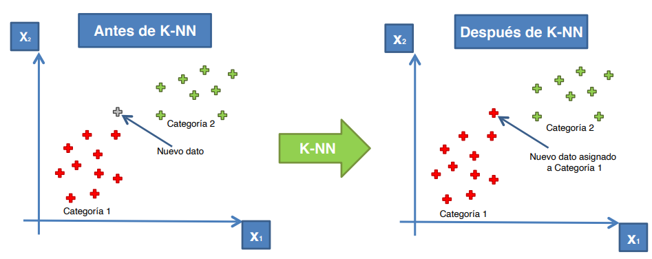
Construcción del modelo de KNN con sus métricas#
Los hiperparámetros para KNN para Clasificación son:
n_neighbors: Número de vecinos a considerar. Es un parámetro crítico que afecta la clasificación.weights: Función que asigna pesos a los vecinos. Puede ser:'uniform': Todos los vecinos tienen el mismo peso.'distance': Los vecinos más cercanos tienen más peso.
algorithm: Algoritmo utilizado para calcular los vecinos más cercanos. Puede ser:'auto': Elige el mejor algoritmo basado en los datos.'ball_tree': Utiliza el árbol de bolas.'kd_tree': Utiliza el árbol K-D.'brute': Búsqueda por fuerza bruta.
metric: Métrica utilizada para calcular la distancia entre puntos. Puede ser:'euclidean': Distancia euclidiana.'manhattan': Distancia de Manhattan.'chebyshev': Distancia de Chebyshev.'minkowski': Distancia de Minkowski (por defecto).Otras métricas personalizadas.
p: Potencia de la distancia utilizada para la métrica Minkowski. Cuandop=1, se utiliza la distancia de Manhattan, y cuandop=2, se utiliza la distancia euclidiana.leaf_size: Tamaño de la hoja para el árbol K-D o árbol de bolas. Afecta la velocidad de la consulta y la memoria utilizada.metric_params: Parámetros adicionales para la métrica, que pueden ser utilizados según la métrica seleccionada.n_jobs: Número de trabajos a ejecutar en paralelo.-1utiliza todos los núcleos disponibles.
# Diccionario de hiperparámetros para KNN
parametros = {
'n_neighbors': [3, 5, 7, 9, 11], # Número de vecinos a considerar
'weights': ['uniform', 'distance'], # Asignación de pesos a los vecinos
'algorithm': ['auto', 'ball_tree', 'kd_tree', 'brute'], # Algoritmo para calcular vecinos
'metric': ['euclidean', 'manhattan', 'chebyshev', 'minkowski'], # Métrica de distancia
'p': [1, 2], # Potencia de la distancia para Minkowski
'leaf_size': [30, 40, 50, 60], # Tamaño de la hoja para árboles
'metric_params': [None], # Parámetros adicionales para la métrica
'n_jobs': [-1, 1] # Número de trabajos a ejecutar en paralelo
}
# importar paquete
from sklearn.neighbors import KNeighborsClassifier
# Crear y entrenar el modelo de K-Nearest Neighbors
pipeline_knn = make_pipeline(MinMaxScaler(feature_range=(0, 1)), KNeighborsClassifier())
# Definir la malla de hiperparámetros para optimización
param_grid = {
'kneighborsclassifier__n_neighbors': range(1,25),
'kneighborsclassifier__weights': ['uniform', 'distance'],
'kneighborsclassifier__metric': ['euclidean', 'manhattan', 'minkowski'],
'kneighborsclassifier__leaf_size': [30, 40, 50, 60]
}
# Definir un KFold para validación cruzada
kf = KFold(n_splits=5, shuffle=True, random_state=42)
# Búsqueda de hiperparámetros con validación cruzada, maximizando F1 score
grid_search_knn = GridSearchCV(estimator=pipeline_knn, param_grid=param_grid, cv=kf, scoring='f1', n_jobs=-1, verbose=1)
# Ajustar el modelo
grid_search_knn.fit(X_train, y_train)
Fitting 5 folds for each of 576 candidates, totalling 2880 fits
GridSearchCV(cv=KFold(n_splits=5, random_state=42, shuffle=True),
estimator=Pipeline(steps=[('minmaxscaler', MinMaxScaler()),
('kneighborsclassifier',
KNeighborsClassifier())]),
n_jobs=-1,
param_grid={'kneighborsclassifier__leaf_size': [30, 40, 50, 60],
'kneighborsclassifier__metric': ['euclidean',
'manhattan',
'minkowski'],
'kneighborsclassifier__n_neighbors': range(1, 25),
'kneighborsclassifier__weights': ['uniform',
'distance']},
scoring='f1', verbose=1)In a Jupyter environment, please rerun this cell to show the HTML representation or trust the notebook. On GitHub, the HTML representation is unable to render, please try loading this page with nbviewer.org.
GridSearchCV(cv=KFold(n_splits=5, random_state=42, shuffle=True),
estimator=Pipeline(steps=[('minmaxscaler', MinMaxScaler()),
('kneighborsclassifier',
KNeighborsClassifier())]),
n_jobs=-1,
param_grid={'kneighborsclassifier__leaf_size': [30, 40, 50, 60],
'kneighborsclassifier__metric': ['euclidean',
'manhattan',
'minkowski'],
'kneighborsclassifier__n_neighbors': range(1, 25),
'kneighborsclassifier__weights': ['uniform',
'distance']},
scoring='f1', verbose=1)Pipeline(steps=[('minmaxscaler', MinMaxScaler()),
('kneighborsclassifier',
KNeighborsClassifier(metric='manhattan', n_neighbors=7,
weights='distance'))])MinMaxScaler()
KNeighborsClassifier(metric='manhattan', n_neighbors=7, weights='distance')
Los mejores parámetros son:
# Ver mejores parámetros
print("Mejores parámetros para KNN:", grid_search_knn.best_params_)
Mejores parámetros para KNN: {'kneighborsclassifier__leaf_size': 30, 'kneighborsclassifier__metric': 'manhattan', 'kneighborsclassifier__n_neighbors': 7, 'kneighborsclassifier__weights': 'distance'}
Construcción del modelo KNN con los mejores parámetros
# Definir parámetros para el modelo knn
modelo_knn = make_pipeline(MinMaxScaler(feature_range=(0, 1)),
KNeighborsClassifier(metric='manhattan',n_neighbors=7,
leaf_size=30,weights= 'distance'))
# Ajusta logreg al conjunto de entrenamiento
modelo_knn.fit(X_train,y_train)
Pipeline(steps=[('minmaxscaler', MinMaxScaler()),
('kneighborsclassifier',
KNeighborsClassifier(metric='manhattan', n_neighbors=7,
weights='distance'))])In a Jupyter environment, please rerun this cell to show the HTML representation or trust the notebook. On GitHub, the HTML representation is unable to render, please try loading this page with nbviewer.org.
Pipeline(steps=[('minmaxscaler', MinMaxScaler()),
('kneighborsclassifier',
KNeighborsClassifier(metric='manhattan', n_neighbors=7,
weights='distance'))])MinMaxScaler()
KNeighborsClassifier(metric='manhattan', n_neighbors=7, weights='distance')
Hallemos las metricas del modelo
# Predicciones del modelo con el conjunto train
y_pred_train = modelo_knn.predict(X_train)
y_prob_train = modelo_knn.predict_proba(X_train)[:, 1] # Probabilidad de la clase positiva
# Predicciones del modelo con el conjunto test
y_pred_test =modelo_knn.predict(X_test)
y_prob_test = modelo_knn.predict_proba(X_test)[:, 1] # Probabilidad de la clase positiva
# Calcular el reporte de clasificación para el test
class_report = classification_report(y_train, y_pred_train)
print("\nReporte de Clasificación del train:")
print(class_report)
print('-'*55)
# Calcular el reporte de clasificación para el test
class_report = classification_report(y_test, y_pred_test)
print("\nReporte de Clasificación del test:")
print(class_report)
Reporte de Clasificación del train:
precision recall f1-score support
0 1.00 1.00 1.00 315
1 1.00 1.00 1.00 237
accuracy 1.00 552
macro avg 1.00 1.00 1.00 552
weighted avg 1.00 1.00 1.00 552
-------------------------------------------------------
Reporte de Clasificación del test:
precision recall f1-score support
0 0.78 0.85 0.82 68
1 0.84 0.77 0.81 70
accuracy 0.81 138
macro avg 0.81 0.81 0.81 138
weighted avg 0.81 0.81 0.81 138
La curva de ROC para el conjunto de entrenamiento y prueba
# Graficar la curva ROC para el train
fpr, tpr, thresholds = roc_curve(y_train, y_prob_train)
roc_auc = auc(fpr, tpr)
plt.figure()
plt.plot(fpr, tpr, color='darkorange', lw=2, label='Curva ROC (área = %0.2f)' % roc_auc)
plt.plot([0, 1], [0, 1], color='navy', lw=2, linestyle='--')
plt.xlim([0.0, 1.0])
plt.ylim([0.0, 1.05])
plt.xlabel('Tasa de Falsos Positivos')
plt.ylabel('Tasa de Verdaderos Positivos')
plt.title('Curva ROC del conjunto train')
plt.legend(loc="lower right")
plt.show()
# Graficar la curva ROC para el test
fpr, tpr, thresholds = roc_curve(y_test, y_prob_test)
roc_auc = auc(fpr, tpr)
plt.figure()
plt.plot(fpr, tpr, color='darkorange', lw=2, label='Curva ROC (área = %0.2f)' % roc_auc)
plt.plot([0, 1], [0, 1], color='navy', lw=2, linestyle='--')
plt.xlim([0.0, 1.0])
plt.ylim([0.0, 1.05])
plt.xlabel('Tasa de Falsos Positivos')
plt.ylabel('Tasa de Verdaderos Positivos')
plt.title('Curva ROC del conjunto test')
plt.legend(loc="lower right")
plt.show()
Modelo de Máquina de Soporte Vectorial#
Las Máquinas de Soporte Vectorial (SVM, por sus siglas en inglés) son un conjunto de métodos de aprendizaje supervisado utilizados para clasificación y regresión. La idea principal detrás de SVM es encontrar el “hiperplano” que mejor separa las clases en un espacio multidimensional. Este hiperplano se elige de manera que maximice el margen entre las clases, es decir, la distancia entre el hiperplano y los puntos de datos más cercanos de cada clase, llamados vectores de soporte. En el caso de clasificación binaria, SVM trata de maximizar la distancia (o margen) entre el hiperplano de separación y los puntos de datos más cercanos de cada clase, conocidos como vectores de soporte. Esto hace que el modelo sea robusto y tenga un buen rendimiento en casos donde las clases están bien separadas.
Características de los Modelos SVM#
Hiperplano: La superficie que separa diferentes clases en el espacio de características.
Vectores de soporte: Son los puntos de datos que están más cerca del hiperplano y que, si se eliminaran, cambiarían la posición del hiperplano.
Margen: La distancia máxima entre los vectores de soporte de diferentes clases y el hiperplano.
Kernel: Funciones que permiten transformar los datos a un espacio de mayor dimensión para que sean linealmente separables. Existen diferentes tipos de kernels como:
Lineal: Utiliza un hiperplano lineal.
Polinómico: Utiliza un polinomio de un grado específico.
Radial Basis Function (RBF): Un kernel basado en la distancia que puede manejar relaciones no lineales.
Sigmoide: Basado en la función sigmoide.
Ventajas del KNN
Eficacia en Espacios Altamente Dimensionales: SVM es efectivo en problemas de alta dimensionalidad y cuando el número de dimensiones es mayor que el número de muestras.
Versatilidad: Se puede utilizar tanto para clasificación como para regresión.
Manejo de No Linealidad: Gracias al uso de kernels, SVM puede manejar problemas no lineales.
Desventajas del KNN
Requiere Ajuste de Hiperparámetros: El rendimiento de SVM puede depender significativamente de la elección de parámetros como el tipo de kernel y su configuración.
Costoso en Cómputo: Para conjuntos de datos grandes, SVM puede ser ineficiente en términos de memoria y tiempo de entrenamiento.
Difícil Interpretación: Los resultados de SVM no son tan fáciles de interpretar como los de modelos lineales.
Idea de maquina de soporte vectorial#
¿Comó separamos estos puntos?
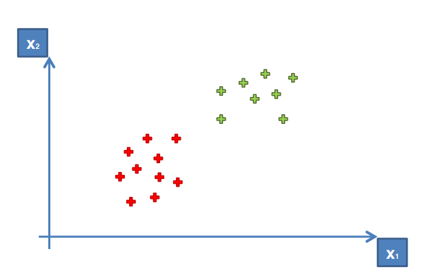
Podriamos crear una linea horizontal o vertical o diagonal
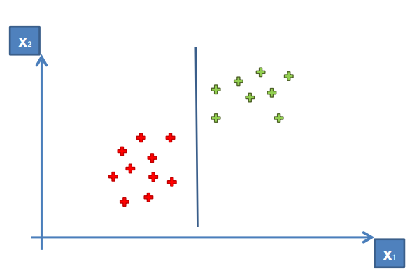
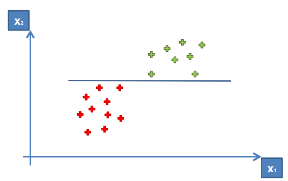

La linea que buscamos es:

Estos dos puntos son los vectores de soporte
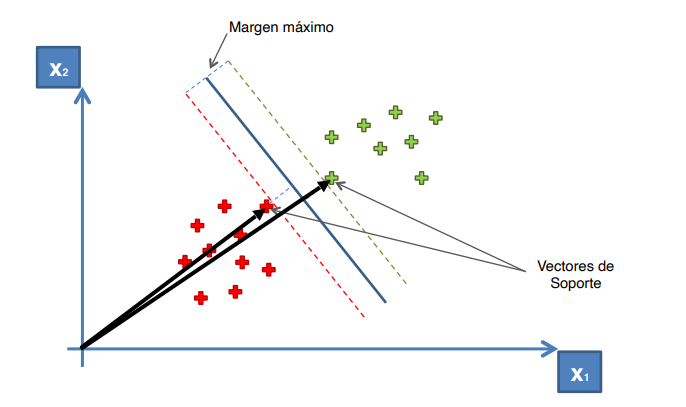
El hiperplano es:
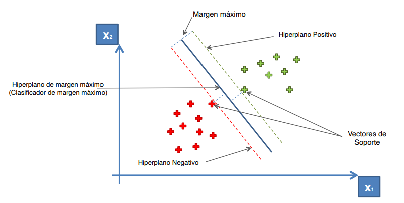
Idea del kernel de maquina de soporte vectorial#
No siempre debemos usar un kernel lineal, ya que no siempre funciona
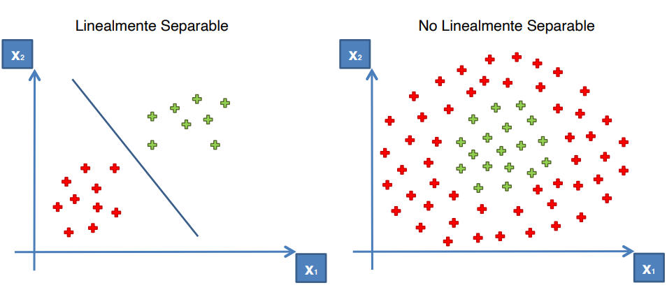
Ahora, hagamos transformación a una dimensión superior para separar. Usando una sola dimensión
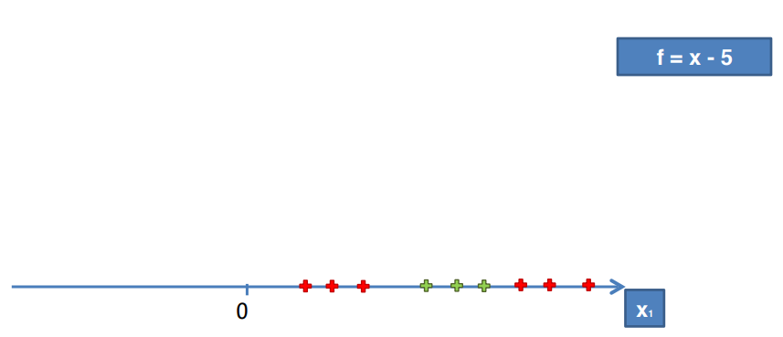
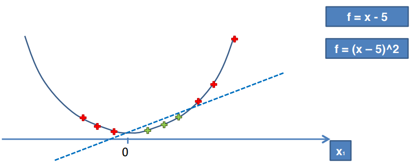
Ahora, usando dos dimensiones
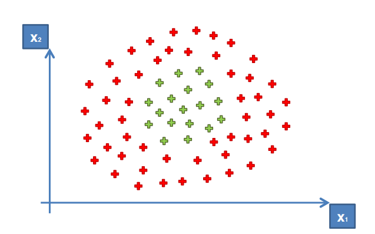
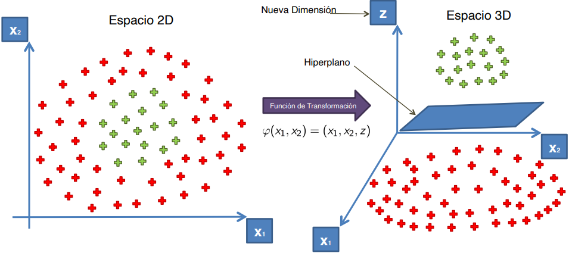
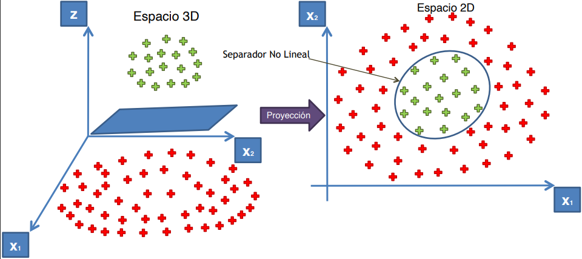
Construcción del modelo de SVM con sus métricas#
Aquí tenemos los principales hiperparámetros que puedes ajustar en un modelo SVM para la clasificación.
C: Parámetro de regularización. Controla el trade-off entre maximizar el margen y minimizar el error de clasificación. Un valor más pequeño implica un margen más amplio, pero puede aumentar el error de clasificación.kernel: Tipo de kernel a utilizar. Puede ser:'linear': Hiperplano lineal.'poly': Kernel polinómico.'rbf': Kernel de función de base radial.'sigmoid': Kernel sigmoide.
degree: (Solo para kernel polinómico) Grado del polinomio.gamma: Parámetro del kernel. Controla la influencia de un solo ejemplo de entrenamiento. Un valor pequeño implica una influencia amplia, mientras que un valor grande implica una influencia reducida.coef0: Término independiente para kernels polinómicos y sigmoides. Influye en la relación entre los términos de mayor y menor grado.shrinking: Si esTrue, utiliza la heurística de reducción para acelerar la optimización.probability: Si se establece enTrue, habilita el modo de probabilidad, lo que permite obtener probabilidades de predicción.class_weight: Puede serNone,'balanced'o un diccionario que asigna pesos a las clases para manejar el desbalance en el conjunto de datos.max_iter: Número máximo de iteraciones para el optimizador.
En python
parameters = {
'C': [0.1, 1, 10, 100], # Parámetro de regularización
'kernel': ['linear', 'poly', 'rbf', 'sigmoid'], # Tipo de kernel
'degree': [2, 3, 4], # Grado del polinomio, solo relevante para kernel 'poly'
'gamma': ['scale', 'auto'] + [0.01, 0.1, 1, 10], # Parámetro de gamma
'coef0': [0.0, 0.1, 0.5, 1.0], # Término independiente en el kernel polinómico y sigmoide
'shrinking': [True, False], # Habilitar la heurística de reducción
'probability': [True, False], # Activar la estimación de probabilidad
'tol': [1e-4, 1e-3, 1e-2], # Tolerancia para criterios de parada
'max_iter': [-1, 100, 1000], # Número máximo de iteraciones
}
Hallemos los mejores hiperparámetros con
kernel='linear':
# Importar librerias
from sklearn.svm import SVC
# Crear y entrenar el modelo de Support Vector Classifier con kernel lineal
pipeline_svc = make_pipeline(MinMaxScaler(feature_range=(0, 1)), SVC(kernel='linear'))
# Definir la malla de hiperparámetros para optimización
param_grid = {
'svc__C': [0.001, 0.01, 0.1, 1, 10, 100,1000],
'svc__class_weight': [None, 'balanced']
}
# Definir un KFold para validación cruzada
kf = KFold(n_splits=5, shuffle=True, random_state=42)
# Búsqueda de hiperparámetros con validación cruzada, maximizando F1 score
grid_search_svc_lineal = GridSearchCV(estimator=pipeline_svc, param_grid=param_grid, cv=kf, scoring='f1', n_jobs=-1, verbose=1)
# Ajustar el modelo
grid_search_svc_lineal.fit(X_train, y_train)
Fitting 5 folds for each of 14 candidates, totalling 70 fits
GridSearchCV(cv=KFold(n_splits=5, random_state=42, shuffle=True),
estimator=Pipeline(steps=[('minmaxscaler', MinMaxScaler()),
('svc', SVC(kernel='linear'))]),
n_jobs=-1,
param_grid={'svc__C': [0.001, 0.01, 0.1, 1, 10, 100, 1000],
'svc__class_weight': [None, 'balanced']},
scoring='f1', verbose=1)In a Jupyter environment, please rerun this cell to show the HTML representation or trust the notebook. On GitHub, the HTML representation is unable to render, please try loading this page with nbviewer.org.
GridSearchCV(cv=KFold(n_splits=5, random_state=42, shuffle=True),
estimator=Pipeline(steps=[('minmaxscaler', MinMaxScaler()),
('svc', SVC(kernel='linear'))]),
n_jobs=-1,
param_grid={'svc__C': [0.001, 0.01, 0.1, 1, 10, 100, 1000],
'svc__class_weight': [None, 'balanced']},
scoring='f1', verbose=1)Pipeline(steps=[('minmaxscaler', MinMaxScaler()),
('svc', SVC(C=0.01, kernel='linear'))])MinMaxScaler()
SVC(C=0.01, kernel='linear')
Los mejores son:
# Ver mejores parámetros
print("Mejores parámetros para SVC con kernel lineal:", grid_search_svc_lineal.best_params_)
Mejores parámetros para SVC con kernel lineal: {'svc__C': 0.01, 'svc__class_weight': None}
Construcción del modelo de
SVCcon los mejores parámetros y kernel lineal
# Definir parámetros para el modelo logistico
modelo_svc_lineal = make_pipeline(MinMaxScaler(feature_range=(0, 1)),
SVC(kernel='linear', C=0.01,class_weight=None,
probability=True))
# Ajusta logreg al conjunto de entrenamiento
modelo_svc_lineal.fit(X_train,y_train)
Pipeline(steps=[('minmaxscaler', MinMaxScaler()),
('svc', SVC(C=0.01, kernel='linear', probability=True))])In a Jupyter environment, please rerun this cell to show the HTML representation or trust the notebook. On GitHub, the HTML representation is unable to render, please try loading this page with nbviewer.org.
Pipeline(steps=[('minmaxscaler', MinMaxScaler()),
('svc', SVC(C=0.01, kernel='linear', probability=True))])MinMaxScaler()
SVC(C=0.01, kernel='linear', probability=True)
Ahora, calculemos las métricas del modelo de
SVC
# Predicciones del modelo con el conjunto train
y_pred_train = modelo_svc_lineal.predict(X_train)
y_prob_train = modelo_svc_lineal.predict_proba(X_train)[:, 1] # Probabilidad de la clase positiva
# Predicciones del modelo con el conjunto test
y_pred_test = modelo_svc_lineal.predict(X_test)
y_prob_test = modelo_svc_lineal.predict_proba(X_test)[:, 1] # Probabilidad de la clase positiva
# Calcular el reporte de clasificación para el test
class_report = classification_report(y_train, y_pred_train)
print("\nReporte de Clasificación del train:")
print(class_report)
print('-'*55)
# Calcular el reporte de clasificación para el test
class_report = classification_report(y_test, y_pred_test)
print("\nReporte de Clasificación del test:")
print(class_report)
Reporte de Clasificación del train:
precision recall f1-score support
0 0.94 0.81 0.87 315
1 0.79 0.94 0.86 237
accuracy 0.86 552
macro avg 0.87 0.87 0.86 552
weighted avg 0.88 0.86 0.86 552
-------------------------------------------------------
Reporte de Clasificación del test:
precision recall f1-score support
0 0.87 0.76 0.81 68
1 0.79 0.89 0.84 70
accuracy 0.83 138
macro avg 0.83 0.83 0.83 138
weighted avg 0.83 0.83 0.83 138
Hagamos la curva de ROC de
SVCcon el kernel lineal
# Graficar la curva ROC para el train
fpr, tpr, thresholds = roc_curve(y_train, y_prob_train)
roc_auc = auc(fpr, tpr)
plt.figure()
plt.plot(fpr, tpr, color='darkorange', lw=2, label='Curva ROC (área = %0.2f)' % roc_auc)
plt.plot([0, 1], [0, 1], color='navy', lw=2, linestyle='--')
plt.xlim([0.0, 1.0])
plt.ylim([0.0, 1.05])
plt.xlabel('Tasa de Falsos Positivos')
plt.ylabel('Tasa de Verdaderos Positivos')
plt.title('Curva ROC del conjunto train')
plt.legend(loc="lower right")
plt.show()
# Graficar la curva ROC para el test
fpr, tpr, thresholds = roc_curve(y_test, y_prob_test)
roc_auc = auc(fpr, tpr)
plt.figure()
plt.plot(fpr, tpr, color='darkorange', lw=2, label='Curva ROC (área = %0.2f)' % roc_auc)
plt.plot([0, 1], [0, 1], color='navy', lw=2, linestyle='--')
plt.xlim([0.0, 1.0])
plt.ylim([0.0, 1.05])
plt.xlabel('Tasa de Falsos Positivos')
plt.ylabel('Tasa de Verdaderos Positivos')
plt.title('Curva ROC del conjunto test')
plt.legend(loc="lower right")
plt.show()
Ejercicios
Ya realizaste el modelo de SVC con kernel lineal. Ahora encuentra el modelo con kernel polinomial, radial y sigmoide con los mejores parámetros. También, halla sus métricas y gráfica la curva de ROC.
Modelo de Naives-Bayes#
El Clasificador Naive Bayes es un modelo de aprendizaje supervisado basado en la Regla de Bayes, que se utiliza para problemas de clasificación. Este clasificador asume que las características son independientes entre sí dado el valor de la clase, lo que simplifica el cálculo de las probabilidades. Aunque esta suposición de independencia rara vez se cumple completamente en la práctica, el modelo es efectivo y eficiente para problemas de clasificación, especialmente en el análisis de texto y problemas multiclase.
Definición de la Regla de Bayes#
La Regla de Bayes es un principio fundamental en probabilidad y estadística que permite calcular la probabilidad de que un evento ocurra dado que otro evento ya ha ocurrido. Esta regla es clave para la inferencia estadística y es la base de varios modelos probabilísticos, como el clasificador Naive Bayes. La Regla de Bayes se puede expresar como:
donde:
\(P(A | B)\): Probabilidad de \(A\) dado \(B\).
\(P(B | A)\): Probabilidad de \(B\) dado \(A\).
\(P(A)\): Probabilidad a priori de \(A\).
\(P(B)\): Probabilidad a priori de \(B\).
Ejemplo de la regla de Bayes#
Supongamos que un banco quiere evaluar la probabilidad de que un cliente esté en alto riesgo de incumplimiento de pago de un préstamo (es decir, que no lo pague) dado que tiene un historial crediticio bajo. Usaremos la Regla de Bayes para calcular esta probabilidad.
Definimos los eventos:
\(A\): El cliente está en alto riesgo de incumplimiento.
\(B\): El cliente tiene un historial crediticio bajo.
Datos disponibles:
\(P(A)\): Probabilidad de que cualquier cliente esté en alto riesgo de incumplimiento (por ejemplo, un 10%, o \(P(A) = 0.1\)).
\(P(B | A)\): Probabilidad de que un cliente tenga un historial crediticio bajo si está en alto riesgo de incumplimiento (por ejemplo, un 80%, o \(P(B | A) = 0.8\)).
\(P(B)\): Probabilidad de que un cliente tenga un historial crediticio bajo (por ejemplo, un 20%, o \(P(B) = 0.2\)).
Aplicamos la Regla de Bayes:
Usamos la fórmula de Bayes para calcular \(P(A | B)\), la probabilidad de que un cliente esté en alto riesgo de incumplimiento dado que tiene un historial crediticio bajo:
\[ P(A | B) = \frac{P(B | A) \cdot P(A)}{P(B)} \]Sustituimos los valores:
\[ P(A | B) = \frac{0.8 \cdot 0.1}{0.2} = \frac{0.08}{0.2} = 0.4 \]Interpretación del resultado:
La probabilidad de que un cliente esté en alto riesgo de incumplimiento dado que tiene un historial crediticio bajo es del 40%. Este resultado puede ayudar al banco a tomar decisiones informadas sobre la aprobación de préstamos y a gestionar mejor el riesgo.
Este ejemplo muestra cómo la Regla de Bayes permite al banco actualizar las probabilidades de riesgo en función de la información disponible sobre el historial crediticio del cliente.
Clasificador Naive Bayes#
El Clasificador Naive Bayes es un modelo de aprendizaje supervisado basado en la Regla de Bayes. Se utiliza para problemas de clasificación, asumiendo que las características de cada instancia son independientes entre sí dado el valor de la clase. Aunque esta suposición rara vez es completamente cierta, el modelo es efectivo y eficiente para muchas aplicaciones prácticas, especialmente en el análisis de texto y problemas multiclase.
Fórmula Matemática del Clasificador Naive Bayes
Para un conjunto de datos con una instancia \(x = (x_1, x_2, \dots, x_n)\) y una clase \(C_k\), la probabilidad de que la instancia pertenezca a la clase \(C_k\) se expresa como:
donde:
\(P(C_k | x)\): Probabilidad posterior de la clase \(C_k\) dado el conjunto de características \(x\).
\(P(C_k)\): Probabilidad a priori de la clase \(C_k\).
\(P(x_i | C_k)\): Probabilidad condicional de la característica \(x_i\) dado que la clase es \(C_k\).
El clasificador calcula la probabilidad de cada clase y selecciona la clase con la mayor probabilidad como la predicción.
Características del Clasificador Naive Bayes
Suposición de independencia: Se asume que las características son independientes entre sí dado el valor de la clase, lo que simplifica el cálculo de probabilidades.
Modelo probabilístico: Calcula la probabilidad de que una instancia pertenezca a una clase en particular utilizando las probabilidades condicionales de cada característica.
Multiclase: Puede ser utilizado para problemas con múltiples clases de salida.
Ventajas del Clasificador Naive Bayes
Eficiencia: Es rápido y eficiente, ideal para grandes conjuntos de datos, ya que requiere menos datos para entrenarse y clasificar.
Rendimiento en problemas de texto: Funciona bien en la clasificación de texto y filtrado de spam, donde la suposición de independencia es razonable.
Manejo de datos faltantes: Puede manejar datos faltantes ignorando las características que no están presentes.
Escalable: Funciona bien con muchos tipos de datos y es escalable a problemas de clasificación multiclase.
Desventajas del Clasificador Naive Bayes
Suposición de independencia: La suposición de independencia rara vez se cumple en la práctica, lo que limita su precisión en algunos contextos.
Sensibilidad a datos de entrenamiento: Su rendimiento puede ser afectado por la cantidad y calidad de los datos de entrenamiento.
No apto para datos continuos sin discretización: Para manejar datos continuos, se suele requerir discretización o asumir una distribución, como la distribución normal, lo cual puede no siempre ser adecuado.
El clasificador Naive Bayes es una herramienta poderosa y sencilla para tareas de clasificación rápida y efectiva, siempre que las características sean aproximadamente independientes.
Modelos de Naive Bayes para clasificación#
Gaussian Naive Bayes (
GaussianNB)
Uso: Adecuado para problemas de clasificación donde las características son continuas y se asume que siguen una distribución normal (gaussiana).
Ejemplo de aplicación:
Clasificación de textos.
Detección de fraudes.
Problemas donde las características numéricas pueden considerarse distribuciones normales.
Multinomial Naive Bayes (
MultinomialNB)
Uso: Ideal para clasificar datos discretos, especialmente con características que representan recuentos o frecuencias, como el texto en procesamiento de lenguaje natural.
Ejemplo de aplicación:
Clasificación de documentos.
Análisis de sentimientos.
Detección de spam.
Tareas donde las características se pueden contar (frecuencia de palabras en un texto).
Bernoulli Naive Bayes (
BernoulliNB)
Uso: Similar a
MultinomialNB, pero se utiliza para características binarias (0 o 1). Asume que las características son variables binarias.Ejemplo de aplicación:
Clasificación de textos donde la presencia o ausencia de una palabra es más importante que la frecuencia (si una palabra está presente o no en un documento).
En resumen de cuándo usar cada modelo
GaussianNB: Usa cuando tus datos son continuos y se distribuyen normalmente.
MultinomialNB: Usa para datos discretos y en tareas de clasificación de texto donde las características representan recuentos o frecuencias.
BernoulliNB: Usa para datos binarios donde la presencia o ausencia de características es relevante.
Construcción del modelo#
Aquí, tenemos los principales hiperparámetros del modelo de Gaussian Naive Bayes GaussianNB.
priorsDescripción: Lista de probabilidades a priori de las clases. Si se establece, las probabilidades a priori son normalizadas de acuerdo a estas.
Tipo:
array-like, forma (n_classes,)
var_smoothingDescripción: Valor de suavizado para evitar que la varianza sea cero. Se agrega a la varianza de cada característica antes de realizar la predicción.
Tipo:
floatValor por defecto:
1e-9
# Hiperparámetros de Gaussian Naive Bayes
hyperparameters = {
'priors': [
None, # No se establecen probabilidades a priori
[0.5, 0.5], # Probabilidades a priori iguales
[0.6, 0.4], # Probabilidades a priori
[0.7, 0.3], # Probabilidades a priori
],
'var_smoothing': [
1e-9, # Valor de suavizado bajo
1e-8, # Valor de suavizado ligeramente mayor
1e-7, # Valor de suavizado medio
1e-6, # Valor de suavizado alto
1e-5 # Valor de suavizado aún más alto
]
}
Hallemos los mejores parámetros
# Importar librerías necesarias
from sklearn.naive_bayes import GaussianNB
# Crear y entrenar el modelo de Naive Bayes
pipeline_nb = make_pipeline(MinMaxScaler(feature_range=(0, 1)), GaussianNB())
# Definir la malla de hiperparámetros (aunque Naive Bayes no tiene tantos hiperparámetros como SVC)
param_grid_nb = {
# No hay muchos hiperparámetros para ajustar en GaussianNB, pero podrías agregar algunos si tuvieras opciones
'gaussiannb__var_smoothing': [1e-9, 1e-8, 1e-7, 1e-6] # Ajuste de varianza
}
# Definir un KFold para validación cruzada
kf = KFold(n_splits=5, shuffle=True, random_state=42)
# Búsqueda de hiperparámetros con validación cruzada, maximizando F1 score
grid_search_nb = GridSearchCV(estimator=pipeline_nb, param_grid=param_grid_nb, cv=kf, scoring='f1', n_jobs=-1, verbose=1)
# Ajustar el modelo
grid_search_nb.fit(X_train, y_train)
Fitting 5 folds for each of 4 candidates, totalling 20 fits
GridSearchCV(cv=KFold(n_splits=5, random_state=42, shuffle=True),
estimator=Pipeline(steps=[('minmaxscaler', MinMaxScaler()),
('gaussiannb', GaussianNB())]),
n_jobs=-1,
param_grid={'gaussiannb__var_smoothing': [1e-09, 1e-08, 1e-07,
1e-06]},
scoring='f1', verbose=1)In a Jupyter environment, please rerun this cell to show the HTML representation or trust the notebook. On GitHub, the HTML representation is unable to render, please try loading this page with nbviewer.org.
GridSearchCV(cv=KFold(n_splits=5, random_state=42, shuffle=True),
estimator=Pipeline(steps=[('minmaxscaler', MinMaxScaler()),
('gaussiannb', GaussianNB())]),
n_jobs=-1,
param_grid={'gaussiannb__var_smoothing': [1e-09, 1e-08, 1e-07,
1e-06]},
scoring='f1', verbose=1)Pipeline(steps=[('minmaxscaler', MinMaxScaler()),
('gaussiannb', GaussianNB(var_smoothing=1e-06))])MinMaxScaler()
GaussianNB(var_smoothing=1e-06)
Estos son los mejores parámetros
# Ver mejores parámetros
print("Mejores parámetros para naive-bayes:", grid_search_nb.best_params_)
Mejores parámetros para naive-bayes: {'gaussiannb__var_smoothing': 1e-06}
Construcción del modelo de naive bayes con los mejores parámetros
# Definir parámetros para el modelo logistico
modelo_nb = make_pipeline(MinMaxScaler(feature_range=(0, 1)), GaussianNB(var_smoothing = 1e-06))
# Ajusta logreg al conjunto de entrenamiento
modelo_nb.fit(X_train,y_train)
Pipeline(steps=[('minmaxscaler', MinMaxScaler()),
('gaussiannb', GaussianNB(var_smoothing=1e-06))])In a Jupyter environment, please rerun this cell to show the HTML representation or trust the notebook. On GitHub, the HTML representation is unable to render, please try loading this page with nbviewer.org.
Pipeline(steps=[('minmaxscaler', MinMaxScaler()),
('gaussiannb', GaussianNB(var_smoothing=1e-06))])MinMaxScaler()
GaussianNB(var_smoothing=1e-06)
Ahora calculemos las métricas del modelo
# Predicciones del modelo con el conjunto train
y_pred_train = modelo_nb.predict(X_train)
y_prob_train = modelo_nb.predict_proba(X_train)[:, 1] # Probabilidad de la clase positiva
# Predicciones del modelo con el conjunto test
y_pred_test = modelo_nb.predict(X_test)
y_prob_test = modelo_nb.predict_proba(X_test)[:, 1] # Probabilidad de la clase positiva
# Calcular el reporte de clasificación para el train
class_report = classification_report(y_train, y_pred_train)
print("\nReporte de Clasificación del train:")
print(class_report)
print('-'*55)
# Calcular el reporte de clasificación para el test
class_report = classification_report(y_test, y_pred_test)
print("\nReporte de Clasificación del test:")
print(class_report)
Reporte de Clasificación del train:
precision recall f1-score support
0 0.76 0.94 0.84 315
1 0.88 0.62 0.72 237
accuracy 0.80 552
macro avg 0.82 0.78 0.78 552
weighted avg 0.81 0.80 0.79 552
-------------------------------------------------------
Reporte de Clasificación del test:
precision recall f1-score support
0 0.67 0.85 0.75 68
1 0.81 0.60 0.69 70
accuracy 0.72 138
macro avg 0.74 0.73 0.72 138
weighted avg 0.74 0.72 0.72 138
# Graficar la curva ROC para el train
fpr, tpr, thresholds = roc_curve(y_train, y_prob_train)
roc_auc = auc(fpr, tpr)
plt.figure()
plt.plot(fpr, tpr, color='darkorange', lw=2, label='Curva ROC (área = %0.2f)' % roc_auc)
plt.plot([0, 1], [0, 1], color='navy', lw=2, linestyle='--')
plt.xlim([0.0, 1.0])
plt.ylim([0.0, 1.05])
plt.xlabel('Tasa de Falsos Positivos')
plt.ylabel('Tasa de Verdaderos Positivos')
plt.title('Curva ROC del conjunto train')
plt.legend(loc="lower right")
plt.show()
# Graficar la curva ROC para el test
fpr, tpr, thresholds = roc_curve(y_test, y_prob_test)
roc_auc = auc(fpr, tpr)
plt.figure()
plt.plot(fpr, tpr, color='darkorange', lw=2, label='Curva ROC (área = %0.2f)' % roc_auc)
plt.plot([0, 1], [0, 1], color='navy', lw=2, linestyle='--')
plt.xlim([0.0, 1.0])
plt.ylim([0.0, 1.05])
plt.xlabel('Tasa de Falsos Positivos')
plt.ylabel('Tasa de Verdaderos Positivos')
plt.title('Curva ROC del conjunto test')
plt.legend(loc="lower right")
plt.show()

Modelo de arbol de decisión#
Los árboles de decisión son modelos predictivos que utilizan reglas binarias (sí/no) para segmentar las observaciones en función de sus atributos, permitiendo predecir el valor de la variable objetivo. Este tipo de modelo es ideal para problemas con múltiples predictores que interactúan de manera compleja y no lineal, ya que divide el espacio de predictores en regiones simples donde resulta más fácil gestionar estas interacciones.
Muchos métodos predictivos construyen modelos globales, donde una única ecuación representa el comportamiento de todo el espacio de datos. Sin embargo, en casos con interacciones complejas entre predictores, resulta difícil encontrar un modelo global que capture adecuadamente las relaciones entre las variables. Los métodos estadísticos y de machine learning basados en árboles son técnicas supervisadas no paramétricas que segmentan el espacio de los predictores, dividiéndolo en subespacios más manejables. Esta característica de segmentación es una de las principales razones por las que estos modelos son tan efectivos.
Gracias a su capacidad para capturar relaciones complejas, los métodos basados en árboles se han consolidado como una herramienta fundamental en el ámbito predictivo, proporcionando buenos resultados en una variedad de problemas. Este documento explora en detalle cómo se construyen y aplican los árboles de decisión para tareas de clasificación y regresión, y presenta cómo estos modelos forman la base de técnicas más avanzadas como Random Forest y Gradient Boosting Machine.
Componentes de un árbol de decisión#
Nodo raíz:
Es el primer nodo del árbol y representa la característica inicial que divide el conjunto de datos en dos o más subconjuntos. La selección de esta característica se realiza en base a la que aporta la mejor pureza en la partición de datos.
Nodos internos:
Son los nodos intermedios donde se toman decisiones adicionales en base a características específicas. Cada nodo interno representa una división adicional del conjunto de datos, con el objetivo de aumentar la homogeneidad de los subconjuntos en función de la métrica seleccionada (como el índice de Gini o la entropía).
Hojas (o nodos terminales):
Son los nodos finales que representan el resultado del modelo. En árboles de clasificación, cada hoja asigna una clase, mientras que en árboles de regresión, asigna un valor específico. Las hojas no se dividen más, ya que cumplen con un criterio de parada o porque los datos dentro del nodo son suficientemente homogéneos.
Ramas:
Las conexiones entre los nodos representan las condiciones de decisión en cada nivel del árbol. Cada rama conecta un nodo con sus nodos hijos y representa un camino de decisiones basado en el valor de una característica.
Un árbol de decisión puede visualizarse como una estructura jerárquica de decisiones, donde cada nivel del árbol divide los datos en subconjuntos más homogéneos en función de las características seleccionadas en cada nodo.
Construcción del arbol#
Para construir un árbol de clasificación, se utiliza el mismo método de recursive binary splitting que se emplea en árboles de regresión. Sin embargo, cuando la variable de respuesta es cualitativa, no se puede utilizar el RSS (Residual Sum of Squares) como criterio de selección de divisiones óptimas. Existen varias alternativas, cuyo objetivo es encontrar nodos lo más puros y homogéneos posible. Las métricas más comunes son:
Tasa de error de clasificación (Classification Error Rate)
La tasa de error de clasificación se define como la proporción de observaciones que no pertenecen a la clase mayoritaria del nodo. Se calcula con la fórmula:
\[ E_m = 1 - \max_k(\hat{p}_{mk}) \]donde \(\hat{p}_{mk}\) representa la proporción de observaciones en el nodo \(m\) que pertenecen a la clase \(k\). Aunque esta métrica es sencilla de entender, no es lo suficientemente sensible para construir árboles de alta calidad; por esta razón, en la práctica no suele utilizarse como métrica principal.
El Índice de Gini es una métrica que mide la pureza de un nodo en un árbol de decisión. Cuantifica la varianza total de las \(K\) clases presentes en el nodo \(m\). Se calcula con la siguiente fórmula:
\[ G_m = \sum_{k=1}^{K} \hat{p}_{mk} \cdot (1 - \hat{p}_{mk}) \]donde \(\hat{p}_{mk}\) es la proporción de observaciones en el nodo \(m\) que pertenecen a la clase \(k\). Si \(\hat{p}_{mk}\) está cerca de 0 o 1 (es decir, el nodo contiene principalmente observaciones de una sola clase), el producto \(\hat{p}_{mk} \cdot (1 - \hat{p}_{mk})\) será pequeño. Por lo tanto, un nodo es más puro cuanto menor es su valor de Gini.
El algoritmo CART (Classification and Regression Trees) utiliza el índice de Gini como criterio de división para maximizar la homogeneidad de los nodos.
Ejemplo de índice de Gini
Supongamos que tenemos un nodo con 100 observaciones distribuidas en tres clases: A, B y C.
Clase
Cantidad de observaciones
Proporción (\(\hat{p}_{mk}\))
A
50
0.5
B
30
0.3
C
20
0.2
Para calcular el índice de Gini en este nodo, utilizamos la fórmula:
\[ G_m = \sum_{k=1}^{K} \hat{p}_{mk} \cdot (1 - \hat{p}_{mk}) \]Para la clase A:
\[ \hat{p}_{A} = 0.5, \quad 0.5 \cdot (1 - 0.5) = 0.5 \cdot 0.5 = 0.25 \]Para la clase B:
\[ \hat{p}_{B} = 0.3, \quad 0.3 \cdot (1 - 0.3) = 0.3 \cdot 0.7 = 0.21 \]Para la clase C:
\[ \hat{p}_{C} = 0.2, \quad 0.2 \cdot (1 - 0.2) = 0.2 \cdot 0.8 = 0.16 \]Sumamos los valores obtenidos para cada clase para obtener el índice de Gini total del nodo:
\[ G_m = 0.25 + 0.21 + 0.16 = 0.62 \]Por lo tanto, el índice de Gini para este nodo es 0.62. Esto indica que el nodo tiene un grado moderado de impureza; el valor de Gini será menor a medida que el nodo contenga una mayor proporción de observaciones en una sola clase.
Ganancia de Información: Entropía Cruzada
La entropía es otra métrica que mide el nivel de desorden o impureza en un nodo. En un nodo completamente puro (que contiene observaciones de una sola clase), la entropía es cero. Por el contrario, cuando las observaciones están repartidas equitativamente entre todas las clases, la entropía alcanza su valor máximo de 1. La fórmula para calcular la entropía es:
\[ D = - \sum_{k=1}^{K} \hat{p}_{mk} \cdot \log(\hat{p}_{mk}) \]donde \(\hat{p}_{mk}\) es la proporción de observaciones en el nodo \(m\) que pertenecen a la clase \(k\). La entropía se utiliza en los algoritmos C4.5 y C5.0 para calcular la ganancia de información (information gain), que determina la mejor división al maximizar la reducción del desorden en los nodos.
La ganancia de información permite segmentar el espacio de características de manera más eficiente, creando nodos que son lo más homogéneos posible en términos de su clase.
Ejemplo de entropía
Supongamos que tenemos un nodo con 100 observaciones distribuidas en tres clases: A, B y C.
Clase
Cantidad de observaciones
Proporción (( \hat{p}_{mk} ))
A
50
0.5
B
30
0.3
C
20
0.2
Para calcular la entropía en este nodo, utilizamos la fórmula:
\[ D = - \sum_{k=1}^{K} \hat{p}_{mk} \cdot \log_2(\hat{p}_{mk}) \]Para la clase A: $\( \hat{p}_{A} = 0.5, \quad -0.5 \cdot \log_2(0.5) = -0.5 \cdot (-1) = 0.5 \)$
Para la clase B: $\( \hat{p}_{B} = 0.3, \quad -0.3 \cdot \log_2(0.3) \approx -0.3 \cdot (-1.737) \approx 0.521 \)$
Para la clase C: $\( \hat{p}_{C} = 0.2, \quad -0.2 \cdot \log_2(0.2) \approx -0.2 \cdot (-2.322) \approx 0.464 \)$
Sumamos los valores obtenidos para cada clase para obtener la entropía total del nodo:
\[ D = 0.5 + 0.521 + 0.464 = 1.485 \]Por lo tanto, la entropía para este nodo es aproximadamente 1.485. Este valor indica un grado moderado de impureza en el nodo; cuanto mayor es la entropía, mayor es la mezcla de clases dentro del nodo.
Ventajas del arbol de decisión
Los árboles son fáciles de interpretar incluso cuando las relaciones entre los predictores son complejas.
Los modelos basados en un solo árbol (a diferencia de Random Forest o Boosting) pueden representarse gráficamente, incluso cuando el número de predictores es mayor de 3.
Pueden manejar tanto predictores numéricos como categóricos sin la necesidad de crear variables dummy o aplicar one-hot encoding. Sin embargo, esto depende de la implementación específica del algoritmo en cada biblioteca.
Al ser métodos no paramétricos, no requieren que los datos sigan ninguna distribución específica.
Requieren mucho menos preprocesamiento y limpieza de datos en comparación con otros métodos de aprendizaje estadístico (por ejemplo, no necesitan estandarización).
No se ven muy influenciados por outliers.
En el caso de valores faltantes en un predictor, se puede hacer una predicción utilizando todas las observaciones del último nodo alcanzado, aunque con menor precisión.
Son muy útiles en la exploración de datos, permitiendo identificar rápida y eficientemente las variables más importantes.
Seleccionan predictores de forma automática.
Son aplicables tanto a problemas de regresión como de clasificación.
Desventajas del arbol de decisión
La capacidad predictiva de los modelos basados en un solo árbol es inferior a la de otros modelos, debido a su tendencia al overfitting y su alta varianza. Técnicas como el bagging, Random Forest y Boosting, que combinan múltiples árboles, ayudan a mejorar estos problemas.
Son sensibles a datos de entrenamiento desbalanceados, donde una clase puede dominar sobre las demás.
Pierden parte de la información al tratar predictores continuos, ya que los categorizan durante la división de los nodos.
La creación de las ramificaciones de los árboles se basa en el algoritmo de recursive binary splitting, que evalúa las divisiones de cada predictor usando una métrica específica (RSS, Gini, entropía). Los predictores continuos tienen más probabilidades de contener un punto de corte óptimo, lo cual los favorece en la creación del árbol.
No pueden extrapolar fuera del rango de valores de los predictores observado en los datos de entrenamiento.
Idea del arbol de decisión#
Miremos dos variables independientes en el siguiente gráfico
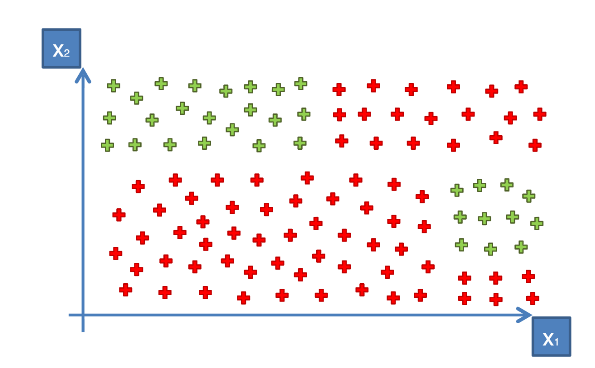
Primer split

Nuestra primera ramificación nos queda
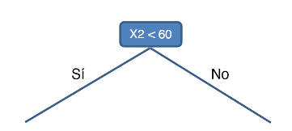
Segundo split
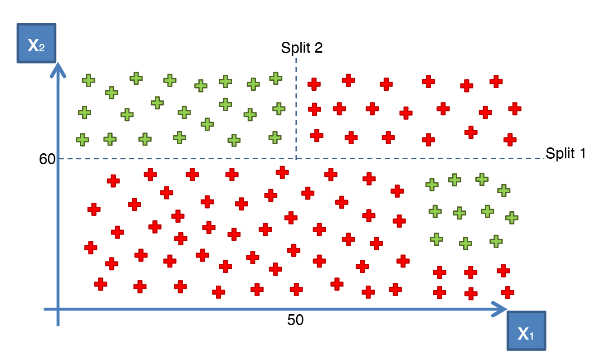
Segunda ramificación
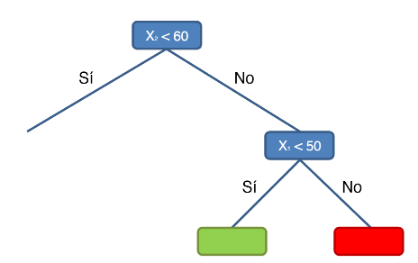
Tercer split
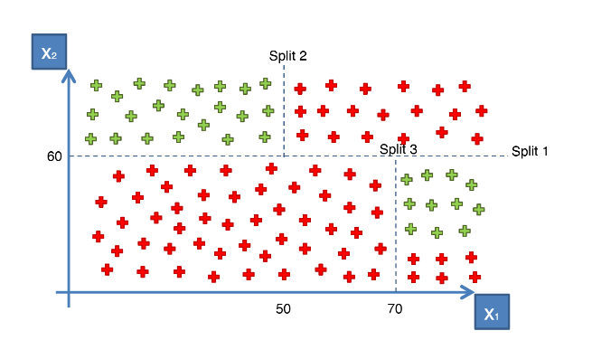
Tercera ramificación
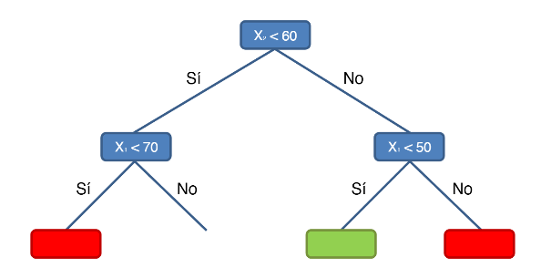
Cuarto split
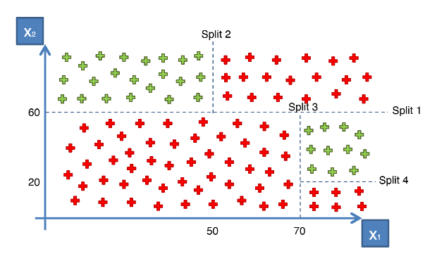
Ultima ramificación
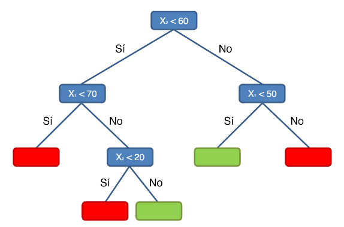
En un arbol de decisión, podemos tener un conjunto de entrenamiento con muchas características, esto hace que tengamos más splits y las ramificaciones sean más masivas.
Construcción del modelo de arbol de decisión con sus métricas#
Los hiperparámetros de Decision Tree Classifier (DecisionTreeClassifier)
criterionDescripción: Función que mide la calidad de una división.
Tipo:
strValores posibles:
'gini'(por defecto): usa el índice de Gini.'entropy': usa la entropía de la información.
splitterDescripción: Estrategia para dividir cada nodo.
Tipo:
strValores posibles:
'best'(por defecto): selecciona la mejor división.'random': selecciona una división al azar.
max_depthDescripción: Profundidad máxima del árbol. Controla el sobreajuste.
Tipo:
intoNoneValor por defecto:
None(el árbol crece hasta que todas las hojas son puras o contienen menos muestras quemin_samples_split).
min_samples_splitDescripción: Número mínimo de muestras necesarias para dividir un nodo.
Tipo:
intofloatValor por defecto:
2
min_samples_leafDescripción: Número mínimo de muestras requeridas para formar una hoja.
Tipo:
intofloatValor por defecto:
1
min_weight_fraction_leafDescripción: Fracción mínima de peso de muestras requerido en una hoja.
Tipo:
floatValor por defecto:
0.0
max_featuresDescripción: Número de características a considerar para encontrar la mejor división.
Tipo:
int,float,stroNoneValores posibles:
None(por defecto): usa todas las características.int: selecciona una cantidad específica de características.float: selecciona un porcentaje de características.'auto','sqrt','log2'.
max_leaf_nodesDescripción: Número máximo de nodos hoja.
Tipo:
intoNoneValor por defecto:
None
min_impurity_decreaseDescripción: Umbral mínimo de reducción de impureza.
Tipo:
floatValor por defecto:
0.0
ccp_alphaDescripción: Parámetro de complejidad de poda (post-poda).
Tipo:
floatValor por defecto:
0.0
# Diccionario de hiperparámetros para DecisionTreeClassifier
param_grid = {
'criterion': ['gini', 'entropy'], # Medida de calidad de la división
'splitter': ['best', 'random'], # Estrategia de división
'max_depth': [None, 10, 20, 30, 40, 50], # Profundidad máxima del árbol
'min_samples_split': [2, 5, 10, 20], # Muestras mínimas para dividir un nodo
'min_samples_leaf': [1, 2, 5, 10], # Muestras mínimas para formar una hoja
'min_weight_fraction_leaf': [0.0, 0.1, 0.2], # Fracción mínima de peso de muestras en una hoja
'max_features': [None, 'auto', 'sqrt', 'log2'], # Características a considerar para la mejor división
'max_leaf_nodes': [None, 10, 20, 30, 40], # Número máximo de nodos hoja
'min_impurity_decrease': [0.0, 0.01, 0.1], # Umbral de reducción mínima de impureza
'ccp_alpha': [0.0, 0.01, 0.1, 0.2] # Parámetro de complejidad de poda
}
Encontremos los mejores parámetros
# Importar paquete
from sklearn.tree import DecisionTreeClassifier
# Crear y entrenar el modelo de Decision Tree
pipeline_tree = make_pipeline(MinMaxScaler(feature_range=(0, 1)), DecisionTreeClassifier())
# Definir la malla de hiperparámetros para optimización
param_grid = {
'decisiontreeclassifier__criterion': ['gini', 'entropy'],
'decisiontreeclassifier__splitter': ['best', 'random'],
'decisiontreeclassifier__max_depth': [None, 10, 20, 30, 40, 50],
'decisiontreeclassifier__min_samples_split': [2, 5, 10, 20],
'decisiontreeclassifier__min_samples_leaf': [1, 2, 5, 10],
'decisiontreeclassifier__max_features': [None, 'auto', 'sqrt', 'log2'],
'decisiontreeclassifier__min_impurity_decrease': [0.0, 0.01, 0.1],
'decisiontreeclassifier__ccp_alpha': [0.0, 0.01, 0.1, 0.2]
}
# Definir un KFold para validación cruzada
kf = KFold(n_splits=5, shuffle=True, random_state=42)
# Búsqueda de hiperparámetros con validación cruzada, maximizando F1 score
grid_search_tree = GridSearchCV(estimator=pipeline_tree, param_grid=param_grid, cv=kf, scoring='f1', n_jobs=-1, verbose=1)
# Ajustar el modelo
grid_search_tree.fit(X_train, y_train)
Fitting 5 folds for each of 18432 candidates, totalling 92160 fits
GridSearchCV(cv=KFold(n_splits=5, random_state=42, shuffle=True),
estimator=Pipeline(steps=[('minmaxscaler', MinMaxScaler()),
('decisiontreeclassifier',
DecisionTreeClassifier())]),
n_jobs=-1,
param_grid={'decisiontreeclassifier__ccp_alpha': [0.0, 0.01, 0.1,
0.2],
'decisiontreeclassifier__criterion': ['gini',
'entropy'],
'decisiontreeclassifier__max_depth': [None, 10, 20, 30,
40, 50],
'decisiontreeclassifier__max_features': [None, 'auto',
'sqrt',
'log2'],
'decisiontreeclassifier__min_impurity_decrease': [0.0,
0.01,
0.1],
'decisiontreeclassifier__min_samples_leaf': [1, 2, 5,
10],
'decisiontreeclassifier__min_samples_split': [2, 5, 10,
20],
'decisiontreeclassifier__splitter': ['best',
'random']},
scoring='f1', verbose=1)In a Jupyter environment, please rerun this cell to show the HTML representation or trust the notebook. On GitHub, the HTML representation is unable to render, please try loading this page with nbviewer.org.
GridSearchCV(cv=KFold(n_splits=5, random_state=42, shuffle=True),
estimator=Pipeline(steps=[('minmaxscaler', MinMaxScaler()),
('decisiontreeclassifier',
DecisionTreeClassifier())]),
n_jobs=-1,
param_grid={'decisiontreeclassifier__ccp_alpha': [0.0, 0.01, 0.1,
0.2],
'decisiontreeclassifier__criterion': ['gini',
'entropy'],
'decisiontreeclassifier__max_depth': [None, 10, 20, 30,
40, 50],
'decisiontreeclassifier__max_features': [None, 'auto',
'sqrt',
'log2'],
'decisiontreeclassifier__min_impurity_decrease': [0.0,
0.01,
0.1],
'decisiontreeclassifier__min_samples_leaf': [1, 2, 5,
10],
'decisiontreeclassifier__min_samples_split': [2, 5, 10,
20],
'decisiontreeclassifier__splitter': ['best',
'random']},
scoring='f1', verbose=1)Pipeline(steps=[('minmaxscaler', MinMaxScaler()),
('decisiontreeclassifier',
DecisionTreeClassifier(ccp_alpha=0.01, max_depth=30,
max_features='log2',
min_samples_leaf=10,
min_samples_split=10,
splitter='random'))])MinMaxScaler()
DecisionTreeClassifier(ccp_alpha=0.01, max_depth=30, max_features='log2',
min_samples_leaf=10, min_samples_split=10,
splitter='random')Los mejores parámetros son:
# Ver mejores parámetros
print("Mejores parámetros para arbol:", grid_search_tree.best_params_)
Mejores parámetros para arbol: {'decisiontreeclassifier__ccp_alpha': 0.01, 'decisiontreeclassifier__criterion': 'gini', 'decisiontreeclassifier__max_depth': 30, 'decisiontreeclassifier__max_features': 'log2', 'decisiontreeclassifier__min_impurity_decrease': 0.0, 'decisiontreeclassifier__min_samples_leaf': 10, 'decisiontreeclassifier__min_samples_split': 10, 'decisiontreeclassifier__splitter': 'random'}
Construcción del modelo con los mejores parámetros
# Definir parámetros para el modelo el arbol de decision
modelo_tree = make_pipeline(MinMaxScaler(feature_range=(0, 1)),
DecisionTreeClassifier(ccp_alpha = 0.0,criterion ='entropy', max_depth = None,
max_features = None, min_impurity_decrease = 0.0,
min_samples_leaf = 5,min_samples_split = 5,splitter = 'random'))
# Ajusta logreg al conjunto de entrenamiento
modelo_tree.fit(X_train,y_train)
Pipeline(steps=[('minmaxscaler', MinMaxScaler()),
('decisiontreeclassifier',
DecisionTreeClassifier(criterion='entropy', min_samples_leaf=5,
min_samples_split=5,
splitter='random'))])In a Jupyter environment, please rerun this cell to show the HTML representation or trust the notebook. On GitHub, the HTML representation is unable to render, please try loading this page with nbviewer.org.
Pipeline(steps=[('minmaxscaler', MinMaxScaler()),
('decisiontreeclassifier',
DecisionTreeClassifier(criterion='entropy', min_samples_leaf=5,
min_samples_split=5,
splitter='random'))])MinMaxScaler()
DecisionTreeClassifier(criterion='entropy', min_samples_leaf=5,
min_samples_split=5, splitter='random')Calculemos las métricas del modelo
# Predicciones del modelo con el conjunto train
y_pred_train = modelo_tree.predict(X_train)
y_prob_train = modelo_tree.predict_proba(X_train)[:, 1] # Probabilidad de la clase positiva
# Predicciones del modelo con el conjunto test
y_pred_test = modelo_tree.predict(X_test)
y_prob_test = modelo_tree.predict_proba(X_test)[:, 1] # Probabilidad de la clase positiva
# Calcular el reporte de clasificación para el train
class_report = classification_report(y_train, y_pred_train)
print("\nReporte de Clasificación del train:")
print(class_report)
print('-'*55)
# Calcular el reporte de clasificación para el test
class_report = classification_report(y_test, y_pred_test)
print("\nReporte de Clasificación del test:")
print(class_report)
Reporte de Clasificación del train:
precision recall f1-score support
0 0.94 0.88 0.91 315
1 0.86 0.93 0.89 237
accuracy 0.90 552
macro avg 0.90 0.91 0.90 552
weighted avg 0.91 0.90 0.90 552
-------------------------------------------------------
Reporte de Clasificación del test:
precision recall f1-score support
0 0.81 0.82 0.82 68
1 0.83 0.81 0.82 70
accuracy 0.82 138
macro avg 0.82 0.82 0.82 138
weighted avg 0.82 0.82 0.82 138
# Graficar la curva ROC para el train
fpr, tpr, thresholds = roc_curve(y_train, y_prob_train)
roc_auc = auc(fpr, tpr)
plt.figure()
plt.plot(fpr, tpr, color='darkorange', lw=2, label='Curva ROC (área = %0.2f)' % roc_auc)
plt.plot([0, 1], [0, 1], color='navy', lw=2, linestyle='--')
plt.xlim([0.0, 1.0])
plt.ylim([0.0, 1.05])
plt.xlabel('Tasa de Falsos Positivos')
plt.ylabel('Tasa de Verdaderos Positivos')
plt.title('Curva ROC del conjunto train')
plt.legend(loc="lower right")
plt.show()
# Graficar la curva ROC para el test
fpr, tpr, thresholds = roc_curve(y_test, y_prob_test)
roc_auc = auc(fpr, tpr)
plt.figure()
plt.plot(fpr, tpr, color='darkorange', lw=2, label='Curva ROC (área = %0.2f)' % roc_auc)
plt.plot([0, 1], [0, 1], color='navy', lw=2, linestyle='--')
plt.xlim([0.0, 1.0])
plt.ylim([0.0, 1.05])
plt.xlabel('Tasa de Falsos Positivos')
plt.ylabel('Tasa de Verdaderos Positivos')
plt.title('Curva ROC del conjunto test')
plt.legend(loc="lower right")
plt.show()
Modelo Random Forest#
Random Forest es un algoritmo de aprendizaje supervisado, ampliamente utilizado tanto en problemas de clasificación como de regresión. Fue desarrollado como una extensión de los árboles de decisión para mejorar su precisión y evitar problemas de sobreajuste, mediante la creación de múltiples árboles de decisión y la combinación de sus resultados.
Random Forest es un conjunto (o bosque) de árboles de decisión que, al combinar sus resultados, proporciona una predicción más precisa y estable que un solo árbol. La técnica detrás de Random Forest utiliza el método de “bagging” (Bootstrap Aggregating), donde se entrenan múltiples árboles independientes usando diferentes subconjuntos aleatorios de datos, y sus predicciones se promedian (regresión) o se eligen por voto mayoritario (clasificación).
Características del modelo#
Modelo de Ensemble: Utiliza múltiples árboles de decisión que colaboran para la predicción.
Aleatorización: Realiza selección aleatoria tanto de muestras (bootstrap) como de características en cada nodo, lo que contribuye a la reducción del sobreajuste.
No requiere normalización de datos: Puede manejar datos de diferentes escalas sin necesidad de estandarización.
Resistencia al sobreajuste: El uso de múltiples árboles reduce el riesgo de sobreajuste, aunque un número muy alto de árboles puede incrementar el tiempo de cálculo.
Adaptable a datos de alta dimensionalidad: Funciona bien con datos que tienen muchas variables, pero el costo computacional aumenta con el tamaño del bosque.
Ventajas de random forest
Precisión elevada: La combinación de predicciones tiende a mejorar la precisión respecto a un único árbol de decisión.
Reducción del sobreajuste: La aleatorización ayuda a que el modelo sea menos sensible al ruido.
Adaptabilidad: Puede usarse tanto para clasificación como para regresión.
Robustez frente a valores atípicos y características irrelevantes: Dado que se considera un subconjunto de características en cada nodo, los efectos de las variables irrelevantes se reducen.
Buen rendimiento en datos grandes y complejos: Su estructura permite manejar eficientemente grandes volúmenes de datos y variables.
Desventajas de random forest
Tiempo de cálculo elevado: Entrenar múltiples árboles requiere más recursos computacionales y tiempo que un modelo individual.
Complejidad de interpretación: La interpretabilidad de Random Forest es menor que la de un árbol de decisión único, ya que se combinan múltiples modelos.
Propenso a sobreajuste en datasets pequeños: Aunque en general reduce el sobreajuste, en conjuntos de datos pequeños o muy ruidosos podría sobreajustarse si se configura con muchos árboles.
Altos requerimientos de almacenamiento: La necesidad de guardar múltiples árboles hace que el modelo ocupe más espacio en memoria.
Construcción del modelo de Random Forest#
Los hiperparámetros para Random Forest son:
n_estimatorsDescripción: Número de árboles en el bosque.
Tipo:
intValores posibles: Valores como
10,50,100,200,500(por defecto es100).
criterionDescripción: Función para medir la calidad de la división.
Tipo:
strValores posibles:
'gini'(por defecto): usa el índice de Gini.'entropy': usa la entropía de la información.'log_loss': usa la pérdida logarítmica para optimización.
max_depthDescripción: Profundidad máxima de cada árbol en el bosque.
Tipo:
intoNoneValor por defecto:
None(crece hasta que todas las hojas son puras o contienen menos muestras quemin_samples_split).
min_samples_splitDescripción: Número mínimo de muestras necesarias para dividir un nodo.
Tipo:
intofloatValores posibles:
2(por defecto) o un porcentaje de muestras si es unfloat.
min_samples_leafDescripción: Número mínimo de muestras requeridas para formar una hoja.
Tipo:
intofloatValor por defecto:
1
min_weight_fraction_leafDescripción: Fracción mínima de peso de muestras requerida en una hoja.
Tipo:
floatValor por defecto:
0.0
max_featuresDescripción: Número de características a considerar al buscar la mejor división.
Tipo:
int,float,stroNoneValores posibles:
None(por defecto): usa todas las características.'auto'o'sqrt': usa la raíz cuadrada del número de características.'log2': usa el logaritmo en base 2 del número de características.
max_leaf_nodesDescripción: Número máximo de nodos hoja por árbol.
Tipo:
intoNoneValor por defecto:
None
min_impurity_decreaseDescripción: Umbral mínimo de reducción de impureza para permitir una división.
Tipo:
floatValor por defecto:
0.0
bootstrapDescripción: Si usar muestreo con reemplazo.
Tipo:
boolValor por defecto:
True
class_weightDescripción: Ponderación de clases.
Tipo:
dict,list of dictostrValores posibles:
None(por defecto): sin ponderación.'balanced': ajusta automáticamente el peso de las clases.'balanced_subsample': ajusta el peso de cada clase según la frecuencia de clases en cada bootstrap.
ccp_alphaDescripción: Parámetro de complejidad para la poda de post-entrenamiento.
Tipo:
floatValor por defecto:
0.0
max_samplesDescripción: Número o fracción máxima de muestras usadas para entrenar cada árbol individual.
Tipo:
intofloatValores posibles: Si
float, representa un porcentaje del total; siint, un número absoluto.
# Diccionario de los parámetros de random forest
param_grid = {
'n_estimators': [50, 100, 200, 300, 500], # Número de árboles en el bosque
'criterion': ['gini', 'entropy', 'log_loss'], # Función para medir la calidad de la división
'max_depth': [None, 10, 20, 30, 40, 50], # Profundidad máxima de cada árbol
'min_samples_split': [2, 5, 10, 20], # Mínimo número de muestras para dividir un nodo
'min_samples_leaf': [1, 2, 4, 10], # Mínimo número de muestras en una hoja
'max_features': ['auto', 'sqrt', 'log2', None], # Características consideradas al buscar la mejor división
'max_leaf_nodes': [None, 10, 20, 30, 40], # Número máximo de nodos hoja
'min_impurity_decrease': [0.0, 0.01, 0.1], # Umbral para reducir la impureza en una división
'bootstrap': [True, False], # Si se usa muestreo con reemplazo
'class_weight': [None, 'balanced', 'balanced_subsample'], # Peso de las clases
'ccp_alpha': [0.0, 0.01, 0.1, 0.2] # Parámetro de complejidad para la poda
}
Encontremos los mejores parámetros
# Importar paquete
from sklearn.ensemble import RandomForestClassifier
# Crear y entrenar el modelo de Random Forest
pipeline_rf = make_pipeline(MinMaxScaler(feature_range=(0, 1)), RandomForestClassifier())
# Definir la malla de hiperparámetros para optimización
param_grid = {
'randomforestclassifier__n_estimators': [100, 200, 500],
'randomforestclassifier__max_depth': [3, 5, 7, 9],
'randomforestclassifier__min_samples_split': [2, 5, 8],
'randomforestclassifier__min_samples_leaf': [1, 4, 7],
'randomforestclassifier__max_features': ['sqrt', 'log2', None],
'randomforestclassifier__bootstrap': [True, False]
}
# Definir un KFold para validación cruzada
kf = KFold(n_splits=5, shuffle=True, random_state=42)
# Búsqueda de hiperparámetros con validación cruzada, maximizando F1 score
grid_search_rf = GridSearchCV(estimator=pipeline_rf, param_grid=param_grid, cv=kf, scoring='f1', n_jobs=-1, verbose=1)
# Ajustar el modelo
grid_search_rf.fit(X_train, y_train)
Fitting 5 folds for each of 648 candidates, totalling 3240 fits
GridSearchCV(cv=KFold(n_splits=5, random_state=42, shuffle=True),
estimator=Pipeline(steps=[('minmaxscaler', MinMaxScaler()),
('randomforestclassifier',
RandomForestClassifier())]),
n_jobs=-1,
param_grid={'randomforestclassifier__bootstrap': [True, False],
'randomforestclassifier__max_depth': [3, 5, 7, 9],
'randomforestclassifier__max_features': ['sqrt',
'log2',
None],
'randomforestclassifier__min_samples_leaf': [1, 4, 7],
'randomforestclassifier__min_samples_split': [2, 5, 8],
'randomforestclassifier__n_estimators': [100, 200,
500]},
scoring='f1', verbose=1)In a Jupyter environment, please rerun this cell to show the HTML representation or trust the notebook. On GitHub, the HTML representation is unable to render, please try loading this page with nbviewer.org.
GridSearchCV(cv=KFold(n_splits=5, random_state=42, shuffle=True),
estimator=Pipeline(steps=[('minmaxscaler', MinMaxScaler()),
('randomforestclassifier',
RandomForestClassifier())]),
n_jobs=-1,
param_grid={'randomforestclassifier__bootstrap': [True, False],
'randomforestclassifier__max_depth': [3, 5, 7, 9],
'randomforestclassifier__max_features': ['sqrt',
'log2',
None],
'randomforestclassifier__min_samples_leaf': [1, 4, 7],
'randomforestclassifier__min_samples_split': [2, 5, 8],
'randomforestclassifier__n_estimators': [100, 200,
500]},
scoring='f1', verbose=1)Pipeline(steps=[('minmaxscaler', MinMaxScaler()),
('randomforestclassifier',
RandomForestClassifier(max_depth=5, max_features=None,
min_samples_leaf=7,
min_samples_split=5))])MinMaxScaler()
RandomForestClassifier(max_depth=5, max_features=None, min_samples_leaf=7,
min_samples_split=5)Los mejores parámetros son:
# Ver mejores parámetros
print("Mejores parámetros para random forest:", grid_search_rf.best_params_)
Mejores parámetros para random forest: {'randomforestclassifier__bootstrap': True, 'randomforestclassifier__max_depth': 5, 'randomforestclassifier__max_features': None, 'randomforestclassifier__min_samples_leaf': 7, 'randomforestclassifier__min_samples_split': 5, 'randomforestclassifier__n_estimators': 100}
Construcción del modelo con los mejores parámetros
# Definir parámetros para el modelo el random forest
modelo_rf = make_pipeline(MinMaxScaler(feature_range=(0, 1)),
RandomForestClassifier(n_estimators = 200,max_depth = 5,
min_samples_split = 8,min_samples_leaf = 7,
max_features = None,bootstrap = True))
# Ajusta logreg al conjunto de entrenamiento
modelo_rf.fit(X_train,y_train)
Pipeline(steps=[('minmaxscaler', MinMaxScaler()),
('randomforestclassifier',
RandomForestClassifier(max_depth=5, max_features=None,
min_samples_leaf=7, min_samples_split=8,
n_estimators=200))])In a Jupyter environment, please rerun this cell to show the HTML representation or trust the notebook. On GitHub, the HTML representation is unable to render, please try loading this page with nbviewer.org.
Pipeline(steps=[('minmaxscaler', MinMaxScaler()),
('randomforestclassifier',
RandomForestClassifier(max_depth=5, max_features=None,
min_samples_leaf=7, min_samples_split=8,
n_estimators=200))])MinMaxScaler()
RandomForestClassifier(max_depth=5, max_features=None, min_samples_leaf=7,
min_samples_split=8, n_estimators=200)Calculemos las métricas del modelo
# Predicciones del modelo con el conjunto train
y_pred_train = modelo_rf.predict(X_train)
y_prob_train = modelo_rf.predict_proba(X_train)[:, 1] # Probabilidad de la clase positiva
# Predicciones del modelo con el conjunto test
y_pred_test = modelo_rf.predict(X_test)
y_prob_test = modelo_rf.predict_proba(X_test)[:, 1] # Probabilidad de la clase positiva
# Calcular el reporte de clasificación para el train
class_report = classification_report(y_train, y_pred_train)
print("\nReporte de Clasificación del train:")
print(class_report)
print('-'*55)
# Calcular el reporte de clasificación para el test
class_report = classification_report(y_test, y_pred_test)
print("\nReporte de Clasificación del test:")
print(class_report)
Reporte de Clasificación del train:
precision recall f1-score support
0 0.93 0.89 0.91 315
1 0.86 0.91 0.89 237
accuracy 0.90 552
macro avg 0.90 0.90 0.90 552
weighted avg 0.90 0.90 0.90 552
-------------------------------------------------------
Reporte de Clasificación del test:
precision recall f1-score support
0 0.82 0.82 0.82 68
1 0.83 0.83 0.83 70
accuracy 0.83 138
macro avg 0.83 0.83 0.83 138
weighted avg 0.83 0.83 0.83 138
# Graficar la curva ROC para el train
fpr, tpr, thresholds = roc_curve(y_train, y_prob_train)
roc_auc = auc(fpr, tpr)
plt.figure()
plt.plot(fpr, tpr, color='darkorange', lw=2, label='Curva ROC (área = %0.2f)' % roc_auc)
plt.plot([0, 1], [0, 1], color='navy', lw=2, linestyle='--')
plt.xlim([0.0, 1.0])
plt.ylim([0.0, 1.05])
plt.xlabel('Tasa de Falsos Positivos')
plt.ylabel('Tasa de Verdaderos Positivos')
plt.title('Curva ROC del conjunto train')
plt.legend(loc="lower right")
plt.show()
# Graficar la curva ROC para el test
fpr, tpr, thresholds = roc_curve(y_test, y_prob_test)
roc_auc = auc(fpr, tpr)
plt.figure()
plt.plot(fpr, tpr, color='darkorange', lw=2, label='Curva ROC (área = %0.2f)' % roc_auc)
plt.plot([0, 1], [0, 1], color='navy', lw=2, linestyle='--')
plt.xlim([0.0, 1.0])
plt.ylim([0.0, 1.05])
plt.xlabel('Tasa de Falsos Positivos')
plt.ylabel('Tasa de Verdaderos Positivos')
plt.title('Curva ROC del conjunto test')
plt.legend(loc="lower right")
plt.show()
Ahora, miremo la importancia de las variables predictoras
# Extraer el modelo RandomForest del pipeline
modelo_entrenado = modelo_rf.named_steps['randomforestclassifier']
# Obtener la importancia de los predictores
importancia_predictores = pd.DataFrame(
{'predictor': X_train.columns,
'importancia': modelo_entrenado.feature_importances_}
)
print("Importancia de los predictores en el modelo")
print("-------------------------------------------")
print(importancia_predictores.sort_values('importancia', ascending=False))
Importancia de los predictores en el modelo
-------------------------------------------
predictor importancia
35 PriorDefault_t 0.737999
4 Income 0.069270
1 Debt 0.049095
2 YearsEmployed 0.037078
3 CreditScore 0.028774
0 Age 0.023443
36 Employed_t 0.018548
29 Ethnicity_h 0.006981
8 Married_y 0.004969
37 Citizen_p 0.003954
5 Sex_b 0.003419
9 BankCustomer_g 0.002925
33 Ethnicity_v 0.002471
7 Married_u 0.002271
11 BankCustomer_p 0.002119
26 Ethnicity_bb 0.002074
22 EducationLevel_q 0.001707
12 EducationLevel_b 0.000799
24 EducationLevel_w 0.000515
13 EducationLevel_c 0.000502
25 EducationLevel_x 0.000448
15 EducationLevel_d 0.000346
38 Citizen_s 0.000168
28 Ethnicity_ff 0.000061
18 EducationLevel_i 0.000039
20 EducationLevel_k 0.000028
23 EducationLevel_r 0.000000
21 EducationLevel_m 0.000000
27 Ethnicity_dd 0.000000
17 EducationLevel_ff 0.000000
30 Ethnicity_j 0.000000
31 Ethnicity_n 0.000000
32 Ethnicity_o 0.000000
16 EducationLevel_e 0.000000
34 Ethnicity_z 0.000000
14 EducationLevel_cc 0.000000
10 BankCustomer_gg 0.000000
6 Married_l 0.000000
19 EducationLevel_j 0.000000
Miremos la influencia que tiene cada predictor sobre una determinada métrica de evaluación del modelo (estimada por out-of-bag error o validación cruzada) y su gráfica
from sklearn.inspection import permutation_importance
from joblib import cpu_count
# Importancia de los predictores basada en permutación
# ==============================================================================
importancia = permutation_importance(
estimator = modelo_entrenado,
X = X_train,
y = y_train,
n_repeats = 5,
scoring = 'f1',
n_jobs = cpu_count() - 1,
random_state = 42
)
# Se almacenan los resultados (media y desviación) en un dataframe
df_importancia = pd.DataFrame(
{k: importancia[k] for k in ['importances_mean', 'importances_std']}
)
df_importancia['feature'] = X_train.columns
df_importancia.sort_values('importances_mean', ascending=False)
| importances_mean | importances_std | feature | |
|---|---|---|---|
| 35 | 0.395687 | 0.034392 | PriorDefault_t |
| 11 | 0.002315 | 0.001590 | BankCustomer_p |
| 7 | 0.002315 | 0.001590 | Married_u |
| 1 | 0.001798 | 0.001386 | Debt |
| 33 | 0.001549 | 0.002035 | Ethnicity_v |
| 13 | 0.001000 | 0.000816 | EducationLevel_c |
| 8 | 0.000976 | 0.001877 | Married_y |
| 9 | 0.000976 | 0.001877 | BankCustomer_g |
| 4 | 0.000971 | 0.005409 | Income |
| 3 | 0.000860 | 0.003485 | CreditScore |
| 25 | 0.000333 | 0.000667 | EducationLevel_x |
| 22 | 0.000333 | 0.000667 | EducationLevel_q |
| 24 | 0.000219 | 0.001437 | EducationLevel_w |
| 36 | 0.000198 | 0.003435 | Employed_t |
| 23 | 0.000000 | 0.000000 | EducationLevel_r |
| 34 | 0.000000 | 0.000000 | Ethnicity_z |
| 32 | 0.000000 | 0.000000 | Ethnicity_o |
| 31 | 0.000000 | 0.000000 | Ethnicity_n |
| 30 | 0.000000 | 0.000000 | Ethnicity_j |
| 28 | 0.000000 | 0.000000 | Ethnicity_ff |
| 27 | 0.000000 | 0.000000 | Ethnicity_dd |
| 37 | 0.000000 | 0.000000 | Citizen_p |
| 0 | 0.000000 | 0.000000 | Age |
| 19 | 0.000000 | 0.000000 | EducationLevel_j |
| 21 | 0.000000 | 0.000000 | EducationLevel_m |
| 20 | 0.000000 | 0.000000 | EducationLevel_k |
| 18 | 0.000000 | 0.000000 | EducationLevel_i |
| 17 | 0.000000 | 0.000000 | EducationLevel_ff |
| 16 | 0.000000 | 0.000000 | EducationLevel_e |
| 15 | 0.000000 | 0.000000 | EducationLevel_d |
| 14 | 0.000000 | 0.000000 | EducationLevel_cc |
| 12 | 0.000000 | 0.000000 | EducationLevel_b |
| 10 | 0.000000 | 0.000000 | BankCustomer_gg |
| 6 | 0.000000 | 0.000000 | Married_l |
| 29 | -0.000344 | 0.001751 | Ethnicity_h |
| 26 | -0.001004 | 0.000820 | Ethnicity_bb |
| 2 | -0.001335 | 0.002550 | YearsEmployed |
| 38 | -0.001792 | 0.000896 | Citizen_s |
| 5 | -0.003912 | 0.004050 | Sex_b |
# Gráfico
# ==============================================================================
fig, ax = plt.subplots(figsize=(3.5, 4))
df_importancia = df_importancia.sort_values('importances_mean', ascending=True)
ax.barh(
df_importancia['feature'],
df_importancia['importances_mean'],
xerr=df_importancia['importances_std'],
align='center',
alpha=0
)
ax.plot(
df_importancia['importances_mean'],
df_importancia['feature'],
marker="D",
linestyle="",
alpha=0.8,
color="r"
)
ax.set_title('Importancia de los predictores (train)')
ax.set_xlabel('Incremento del error tras la permutación');
La gráfica muestra la importancia de los predictores en un modelo entrenado, medida a través del incremento en el error tras la permutación de cada predictor. Este método evalúa cuánto afecta el desempeño del modelo la aleatorización de cada variable, indicando que los predictores más importantes causan mayores aumentos en el error.
El predictor “PriorDefault” es el único que parece tener un efecto considerable en el error, ya que su barra es notablemente más larga en comparación con el resto.
Esto sugiere que el modelo depende principalmente de “PriorDefault” para hacer predicciones, mientras que las otras variables tienen una importancia mínima o nula en el rendimiento del modelo.
La concentración de importancia en un solo predictor podría indicar que “PriorDefault” es un factor altamente determinante en el contexto de este modelo.
Modelo de XGBoost#
XGBoost (Extreme Gradient Boosting) es un algoritmo de aprendizaje supervisado basado en árboles de decisión, diseñado para mejorar el rendimiento y la velocidad de los modelos de boosting. Su característica principal es el uso de gradiente boosting optimizado, lo cual permite crear modelos altamente eficientes y precisos, especialmente adecuado para grandes conjuntos de datos.
Definición de XGboost#
XGBoost es un algoritmo de boosting basado en el principio de Gradient Boosting, donde múltiples árboles se entrenan secuencialmente, y cada nuevo árbol corrige los errores de los árboles anteriores. XGBoost introduce optimizaciones para aumentar la velocidad, reducir el uso de memoria y mejorar la precisión en comparación con otros algoritmos de boosting.
Fórmula matemática#
XGBoost minimiza una función de pérdida usando un enfoque de optimización basado en el gradiente. Para cada paso \(t\) en el modelo, se ajusta un nuevo árbol \(f_t\) para reducir los errores residuales de la predicción anterior. La predicción se actualiza como:
donde:
\(\hat{y}_i^{(t)}\) es la predicción para el paso \(t\).
\(f_t(x_i)\) es la corrección que el árbol \(t\) realiza en la predicción del paso anterior.
La función de pérdida se minimiza mediante la optimización de gradiente, y cada árbol nuevo se entrena para corregir los errores de predicción acumulados de los árboles anteriores.
Características del modelo#
Boosting por gradiente: Se enfoca en corregir los errores de los árboles previos, agregando árboles secuencialmente.
Regularización: Incluye términos de regularización \(L_1\) y \(L_2\) para reducir el sobreajuste.
Control de crecimiento de árbol: Permite el ajuste de parámetros como la profundidad del árbol, número de árboles y tasa de aprendizaje para optimizar el modelo.
Computación en paralelo: Optimizado para ejecutar operaciones en paralelo, mejorando la velocidad de entrenamiento.
Manejo eficiente de valores faltantes: XGBoost puede manejar datos con valores nulos sin necesidad de imputación adicional.
Ventajas del XGboost
Alta precisión: La combinación de boosting y regularización produce modelos precisos y efectivos.
Reducción de sobreajuste: El término de regularización ayuda a evitar el sobreajuste, un problema común en otros modelos de boosting.
Escalabilidad: Optimizado para trabajar con grandes volúmenes de datos y con múltiples núcleos, acelerando significativamente el proceso de entrenamiento.
Flexibilidad: Soporta tanto clasificación como regresión, con varias funciones de pérdida ajustables.
Capacidad de manejo de datos faltantes: XGBoost puede hacer inferencias sobre datos faltantes sin pasos adicionales de preprocesamiento.
Desventajas del XGboost
Requiere ajuste de hiperparámetros: XGBoost tiene muchos hiperparámetros, y encontrar la configuración óptima puede ser complejo y requerir tiempo.
Costoso en términos computacionales: Aunque está optimizado para velocidad, aún es un modelo computacionalmente costoso, especialmente en comparación con algoritmos como Random Forest.
Complejidad de interpretación: Los modelos de boosting son menos interpretables que los árboles de decisión individuales.
Riesgo de sobreajuste en datasets pequeños: En conjuntos de datos pequeños, la alta capacidad de ajuste puede llevar a un sobreajuste si no se regulan adecuadamente los parámetros.
Construcción del modelo XGboost con sus métricas#
Los hiperparámetros para XGBoost son:
n_estimatorsDescripción: Número de árboles de refuerzo en el modelo. Cada árbol se ajusta secuencialmente.
Tipo:
intValores comunes:
[50, 100, 200, 500]
learning_rateDescripción: Tasa de aprendizaje, controla cuánto contribuye cada árbol al modelo final.
Tipo:
floatValores comunes:
[0.01, 0.05, 0.1, 0.2, 0.3]
max_depthDescripción: Profundidad máxima de cada árbol individual. Controla el sobreajuste.
Tipo:
intValores comunes:
[3, 5, 7, 10, 15]
min_child_weightDescripción: Peso mínimo de la suma de instancias en un nodo. Un valor mayor reduce el sobreajuste.
Tipo:
intValores comunes:
[1, 3, 5, 10]
subsampleDescripción: Fracción de muestras utilizadas para entrenar cada árbol. Valores más bajos reducen el sobreajuste.
Tipo:
floatValores comunes:
[0.5, 0.7, 0.8, 1.0]
colsample_bytreeDescripción: Fracción de características utilizadas para construir cada árbol.
Tipo:
floatValores comunes:
[0.5, 0.7, 0.8, 1.0]
gammaDescripción: Reducción mínima de pérdida necesaria para realizar una partición en un nodo del árbol.
Tipo:
floatValores comunes:
[0, 0.1, 0.2, 0.3]
reg_alphaDescripción: Término de regularización L1, que ayuda a hacer la selección de características.
Tipo:
floatValores comunes:
[0, 0.01, 0.1, 1]
reg_lambdaDescripción: Término de regularización L2, ayuda a evitar el sobreajuste.
Tipo:
floatValores comunes:
[0, 0.01, 0.1, 1]
scale_pos_weightDescripción: Balancea las clases en problemas de clasificación desequilibrados.
Tipo:
floatValores comunes:
[1, 10, 50, 100]
objectiveDescripción: Función objetivo a optimizar.
Tipo:
strValores posibles:
'binary:logistic'(por defecto para clasificación binaria)'multi:softmax'(para clasificación multiclase)'multi:softprob'(para probabilidades multiclase)
# Diccionario de los parámetros de xgboost
param_grid_xgb = {
'n_estimators': [50, 100, 200, 500],
'learning_rate': [0.01, 0.05, 0.1, 0.2, 0.3],
'max_depth': [3, 5, 7, 10, 15],
'min_child_weight': [1, 3, 5, 10],
'subsample': [0.5, 0.7, 0.8, 1.0],
'colsample_bytree': [0.5, 0.7, 0.8, 1.0],
'gamma': [0, 0.1, 0.2, 0.3],
'reg_alpha': [0, 0.01, 0.1, 1],
'reg_lambda': [0, 0.01, 0.1, 1],
'scale_pos_weight': [1, 10, 50, 100],
'objective': ['binary:logistic', 'multi:softmax', 'multi:softprob']
}
Hallemos los mejores parámetros
# Importar paquetes
from xgboost import XGBClassifier
# Crear y entrenar el modelo de XGBoost
pipeline_xgb = make_pipeline(MinMaxScaler(feature_range=(0, 1)), XGBClassifier())
# Definir la malla de hiperparámetros para optimización
param_grid = {
'xgbclassifier__n_estimators': [100, 300, 500],
'xgbclassifier__max_depth': [3, 6, 9],
'xgbclassifier__learning_rate': [0.01, 0.1, 0.2],
'xgbclassifier__subsample': [0.8, 1.0],
'xgbclassifier__colsample_bytree': [0.8, 1.0],
'xgbclassifier__min_child_weight': [1, 5],
}
# Definir un KFold para validación cruzada
kf = KFold(n_splits=5, shuffle=True, random_state=42)
# Búsqueda de hiperparámetros con validación cruzada, maximizando F1 score
grid_search_xgb = GridSearchCV(estimator=pipeline_xgb, param_grid=param_grid, cv=kf, scoring='f1', n_jobs=-1, verbose=1)
# Ajustar el modelo
grid_search_xgb.fit(X_train, y_train)
Fitting 5 folds for each of 216 candidates, totalling 1080 fits
GridSearchCV(cv=KFold(n_splits=5, random_state=42, shuffle=True),
estimator=Pipeline(steps=[('minmaxscaler', MinMaxScaler()),
('xgbclassifier',
XGBClassifier(base_score=None,
booster=None,
callbacks=None,
colsample_bylevel=None,
colsample_bynode=None,
colsample_bytree=None,
device=None,
early_stopping_rounds=None,
enable_categorical=False,
eval_metric=None,
featur...
n_jobs=None,
num_parallel_tree=None,
random_state=None, ...))]),
n_jobs=-1,
param_grid={'xgbclassifier__colsample_bytree': [0.8, 1.0],
'xgbclassifier__learning_rate': [0.01, 0.1, 0.2],
'xgbclassifier__max_depth': [3, 6, 9],
'xgbclassifier__min_child_weight': [1, 5],
'xgbclassifier__n_estimators': [100, 300, 500],
'xgbclassifier__subsample': [0.8, 1.0]},
scoring='f1', verbose=1)In a Jupyter environment, please rerun this cell to show the HTML representation or trust the notebook. On GitHub, the HTML representation is unable to render, please try loading this page with nbviewer.org.
GridSearchCV(cv=KFold(n_splits=5, random_state=42, shuffle=True),
estimator=Pipeline(steps=[('minmaxscaler', MinMaxScaler()),
('xgbclassifier',
XGBClassifier(base_score=None,
booster=None,
callbacks=None,
colsample_bylevel=None,
colsample_bynode=None,
colsample_bytree=None,
device=None,
early_stopping_rounds=None,
enable_categorical=False,
eval_metric=None,
featur...
n_jobs=None,
num_parallel_tree=None,
random_state=None, ...))]),
n_jobs=-1,
param_grid={'xgbclassifier__colsample_bytree': [0.8, 1.0],
'xgbclassifier__learning_rate': [0.01, 0.1, 0.2],
'xgbclassifier__max_depth': [3, 6, 9],
'xgbclassifier__min_child_weight': [1, 5],
'xgbclassifier__n_estimators': [100, 300, 500],
'xgbclassifier__subsample': [0.8, 1.0]},
scoring='f1', verbose=1)Pipeline(steps=[('minmaxscaler', MinMaxScaler()),
('xgbclassifier',
XGBClassifier(base_score=None, booster=None, callbacks=None,
colsample_bylevel=None, colsample_bynode=None,
colsample_bytree=0.8, device=None,
early_stopping_rounds=None,
enable_categorical=False, eval_metric=None,
feature_types=None, gamma=None, grow_policy=None,
importance_type=None,
interaction_constraints=None, learning_rate=0.1,
max_bin=None, max_cat_threshold=None,
max_cat_to_onehot=None, max_delta_step=None,
max_depth=3, max_leaves=None, min_child_weight=5,
missing=nan, monotone_constraints=None,
multi_strategy=None, n_estimators=100,
n_jobs=None, num_parallel_tree=None,
random_state=None, ...))])MinMaxScaler()
XGBClassifier(base_score=None, booster=None, callbacks=None,
colsample_bylevel=None, colsample_bynode=None,
colsample_bytree=0.8, device=None, early_stopping_rounds=None,
enable_categorical=False, eval_metric=None, feature_types=None,
gamma=None, grow_policy=None, importance_type=None,
interaction_constraints=None, learning_rate=0.1, max_bin=None,
max_cat_threshold=None, max_cat_to_onehot=None,
max_delta_step=None, max_depth=3, max_leaves=None,
min_child_weight=5, missing=nan, monotone_constraints=None,
multi_strategy=None, n_estimators=100, n_jobs=None,
num_parallel_tree=None, random_state=None, ...)Los mejores parámetros son:
# Ver mejores parámetros
print("Mejores parámetros para xgboost:", grid_search_xgb.best_params_)
Mejores parámetros para xgboost: {'xgbclassifier__colsample_bytree': 0.8, 'xgbclassifier__learning_rate': 0.1, 'xgbclassifier__max_depth': 3, 'xgbclassifier__min_child_weight': 5, 'xgbclassifier__n_estimators': 100, 'xgbclassifier__subsample': 0.8}
Realicemos el modelo con los mejores parámetros
# Definir parámetros para el modelo el random forest
modelo_xgb = make_pipeline(MinMaxScaler(feature_range=(0, 1)),
XGBClassifier(**grid_search_xgb.best_params_))
# Ajusta logreg al conjunto de entrenamiento
modelo_xgb.fit(X_train,y_train)
Pipeline(steps=[('minmaxscaler', MinMaxScaler()),
('xgbclassifier',
XGBClassifier(base_score=None, booster=None, callbacks=None,
colsample_bylevel=None, colsample_bynode=None,
colsample_bytree=None, device=None,
early_stopping_rounds=None,
enable_categorical=False, eval_metric=None,
feature_types=None, gamma=None, grow_policy=None,
importance_type=None,
interaction_constraints=None, learning_rate=None,
max_bin=None, max_cat_threshold=None,
max_cat_to_onehot=None, max_delta_step=None,
max_depth=None, max_leaves=None,
min_child_weight=None, missing=nan,
monotone_constraints=None, multi_strategy=None,
n_estimators=None, n_jobs=None,
num_parallel_tree=None, random_state=None, ...))])In a Jupyter environment, please rerun this cell to show the HTML representation or trust the notebook. On GitHub, the HTML representation is unable to render, please try loading this page with nbviewer.org.
Pipeline(steps=[('minmaxscaler', MinMaxScaler()),
('xgbclassifier',
XGBClassifier(base_score=None, booster=None, callbacks=None,
colsample_bylevel=None, colsample_bynode=None,
colsample_bytree=None, device=None,
early_stopping_rounds=None,
enable_categorical=False, eval_metric=None,
feature_types=None, gamma=None, grow_policy=None,
importance_type=None,
interaction_constraints=None, learning_rate=None,
max_bin=None, max_cat_threshold=None,
max_cat_to_onehot=None, max_delta_step=None,
max_depth=None, max_leaves=None,
min_child_weight=None, missing=nan,
monotone_constraints=None, multi_strategy=None,
n_estimators=None, n_jobs=None,
num_parallel_tree=None, random_state=None, ...))])MinMaxScaler()
XGBClassifier(base_score=None, booster=None, callbacks=None,
colsample_bylevel=None, colsample_bynode=None,
colsample_bytree=None, device=None, early_stopping_rounds=None,
enable_categorical=False, eval_metric=None, feature_types=None,
gamma=None, grow_policy=None, importance_type=None,
interaction_constraints=None, learning_rate=None, max_bin=None,
max_cat_threshold=None, max_cat_to_onehot=None,
max_delta_step=None, max_depth=None, max_leaves=None,
min_child_weight=None, missing=nan, monotone_constraints=None,
multi_strategy=None, n_estimators=None, n_jobs=None,
num_parallel_tree=None, random_state=None, ...)# Predicciones del modelo con el conjunto train
y_pred_train = modelo_xgb.predict(X_train)
y_prob_train = modelo_xgb.predict_proba(X_train)[:, 1] # Probabilidad de la clase positiva
# Predicciones del modelo con el conjunto test
y_pred_test = modelo_xgb.predict(X_test)
y_prob_test = modelo_xgb.predict_proba(X_test)[:, 1] # Probabilidad de la clase positiva
# Calcular el reporte de clasificación para el train
class_report = classification_report(y_train, y_pred_train)
print("\nReporte de Clasificación del train:")
print(class_report)
print('-'*55)
# Calcular el reporte de clasificación para el test
class_report = classification_report(y_test, y_pred_test)
print("\nReporte de Clasificación del test:")
print(class_report)
Reporte de Clasificación del train:
precision recall f1-score support
0 1.00 1.00 1.00 315
1 1.00 1.00 1.00 237
accuracy 1.00 552
macro avg 1.00 1.00 1.00 552
weighted avg 1.00 1.00 1.00 552
-------------------------------------------------------
Reporte de Clasificación del test:
precision recall f1-score support
0 0.81 0.82 0.82 68
1 0.83 0.81 0.82 70
accuracy 0.82 138
macro avg 0.82 0.82 0.82 138
weighted avg 0.82 0.82 0.82 138
# Graficar la curva ROC para el train
fpr, tpr, thresholds = roc_curve(y_train, y_prob_train)
roc_auc = auc(fpr, tpr)
plt.figure()
plt.plot(fpr, tpr, color='darkorange', lw=2, label='Curva ROC (área = %0.2f)' % roc_auc)
plt.plot([0, 1], [0, 1], color='navy', lw=2, linestyle='--')
plt.xlim([0.0, 1.0])
plt.ylim([0.0, 1.05])
plt.xlabel('Tasa de Falsos Positivos')
plt.ylabel('Tasa de Verdaderos Positivos')
plt.title('Curva ROC del conjunto train')
plt.legend(loc="lower right")
plt.show()
# Graficar la curva ROC para el test
fpr, tpr, thresholds = roc_curve(y_test, y_prob_test)
roc_auc = auc(fpr, tpr)
plt.figure()
plt.plot(fpr, tpr, color='darkorange', lw=2, label='Curva ROC (área = %0.2f)' % roc_auc)
plt.plot([0, 1], [0, 1], color='navy', lw=2, linestyle='--')
plt.xlim([0.0, 1.0])
plt.ylim([0.0, 1.05])
plt.xlabel('Tasa de Falsos Positivos')
plt.ylabel('Tasa de Verdaderos Positivos')
plt.title('Curva ROC del conjunto test')
plt.legend(loc="lower right")
plt.show()
Ahora, miremos las variables predictoras más relevantes
# Extraer el modelo xgboost del pipeline
modelo_entrenado = modelo_xgb.named_steps['xgbclassifier']
# Obtener la importancia de los predictores
importancia_predictores = pd.DataFrame(
{'predictor': X_train.columns,
'importancia': modelo_entrenado.feature_importances_}
)
print("Importancia de los predictores en el modelo")
print("-------------------------------------------")
print(importancia_predictores.sort_values('importancia', ascending=False))
Importancia de los predictores en el modelo
-------------------------------------------
predictor importancia
35 PriorDefault_t 0.444156
37 Citizen_p 0.062643
26 Ethnicity_bb 0.043933
25 EducationLevel_x 0.039725
3 CreditScore 0.038628
20 EducationLevel_k 0.037405
15 EducationLevel_d 0.033335
7 Married_u 0.030049
4 Income 0.028877
29 Ethnicity_h 0.024952
24 EducationLevel_w 0.023237
14 EducationLevel_cc 0.023005
28 Ethnicity_ff 0.022404
12 EducationLevel_b 0.020018
5 Sex_b 0.017481
1 Debt 0.016799
18 EducationLevel_i 0.015585
2 YearsEmployed 0.013144
22 EducationLevel_q 0.012771
0 Age 0.011147
13 EducationLevel_c 0.011113
8 Married_y 0.010875
38 Citizen_s 0.009381
33 Ethnicity_v 0.009339
23 EducationLevel_r 0.000000
21 EducationLevel_m 0.000000
17 EducationLevel_ff 0.000000
16 EducationLevel_e 0.000000
27 Ethnicity_dd 0.000000
11 BankCustomer_p 0.000000
10 BankCustomer_gg 0.000000
30 Ethnicity_j 0.000000
31 Ethnicity_n 0.000000
32 Ethnicity_o 0.000000
34 Ethnicity_z 0.000000
9 BankCustomer_g 0.000000
36 Employed_t 0.000000
6 Married_l 0.000000
19 EducationLevel_j 0.000000
from sklearn.inspection import permutation_importance
from joblib import cpu_count
# Importancia de los predictores basada en permutación
# ==============================================================================
importancia = permutation_importance(
estimator = modelo_entrenado,
X = X_train,
y = y_train,
n_repeats = 5,
scoring = 'f1',
n_jobs = cpu_count() - 1,
random_state = 123
)
# Se almacenan los resultados (media y desviación) en un dataframe
df_importancia = pd.DataFrame(
{k: importancia[k] for k in ['importances_mean', 'importances_std']}
)
df_importancia['feature'] = X_train.columns
df_importancia.sort_values('importances_mean', ascending=False)
| importances_mean | importances_std | feature | |
|---|---|---|---|
| 35 | 0.379737 | 0.011214 | PriorDefault_t |
| 1 | 0.006551 | 0.002672 | Debt |
| 8 | 0.004448 | 0.001289 | Married_y |
| 37 | 0.003751 | 0.002654 | Citizen_p |
| 4 | 0.002432 | 0.000529 | Income |
| 2 | 0.001682 | 0.002270 | YearsEmployed |
| 14 | 0.000956 | 0.000781 | EducationLevel_cc |
| 25 | 0.000956 | 0.000781 | EducationLevel_x |
| 3 | 0.000705 | 0.003639 | CreditScore |
| 7 | 0.000300 | 0.001057 | Married_u |
| 0 | 0.000000 | 0.000000 | Age |
| 24 | 0.000000 | 0.000000 | EducationLevel_w |
| 26 | 0.000000 | 0.000000 | Ethnicity_bb |
| 27 | 0.000000 | 0.000000 | Ethnicity_dd |
| 34 | 0.000000 | 0.000000 | Ethnicity_z |
| 30 | 0.000000 | 0.000000 | Ethnicity_j |
| 31 | 0.000000 | 0.000000 | Ethnicity_n |
| 32 | 0.000000 | 0.000000 | Ethnicity_o |
| 21 | 0.000000 | 0.000000 | EducationLevel_m |
| 36 | 0.000000 | 0.000000 | Employed_t |
| 23 | 0.000000 | 0.000000 | EducationLevel_r |
| 19 | 0.000000 | 0.000000 | EducationLevel_j |
| 13 | 0.000000 | 0.000000 | EducationLevel_c |
| 12 | 0.000000 | 0.000000 | EducationLevel_b |
| 6 | 0.000000 | 0.000000 | Married_l |
| 9 | 0.000000 | 0.000000 | BankCustomer_g |
| 10 | 0.000000 | 0.000000 | BankCustomer_gg |
| 11 | 0.000000 | 0.000000 | BankCustomer_p |
| 38 | 0.000000 | 0.000000 | Citizen_s |
| 15 | 0.000000 | 0.000000 | EducationLevel_d |
| 16 | 0.000000 | 0.000000 | EducationLevel_e |
| 17 | 0.000000 | 0.000000 | EducationLevel_ff |
| 18 | 0.000000 | 0.000000 | EducationLevel_i |
| 28 | -0.000320 | 0.000640 | Ethnicity_ff |
| 22 | -0.000320 | 0.000640 | EducationLevel_q |
| 29 | -0.000640 | 0.000784 | Ethnicity_h |
| 33 | -0.001280 | 0.000640 | Ethnicity_v |
| 20 | -0.001600 | 0.000000 | EducationLevel_k |
| 5 | -0.001823 | 0.000273 | Sex_b |
# Gráfico de la importancia de cada predictor
# ==============================================================================
fig, ax = plt.subplots(figsize=(3.5, 4))
df_importancia = df_importancia.sort_values('importances_mean', ascending=True)
ax.barh(
df_importancia['feature'],
df_importancia['importances_mean'],
xerr=df_importancia['importances_std'],
align='center',
alpha=0
)
ax.plot(
df_importancia['importances_mean'],
df_importancia['feature'],
marker="D",
linestyle="",
alpha=0.8,
color="r"
)
ax.set_title('Importancia de los predictores (train)')
ax.set_xlabel('Incremento del error tras la permutación');
Hiperparámetros con optimización bayesiana#
La búsqueda grid search y random search pueden generar buenos resultados, sobre todo cuando se reduce el rango de exploración. Sin embargo, ninguna de ellas tiene en cuenta los resultados obtenidos hasta el momento, lo que les impide centrar la búsqueda en las regiones de mayor interés y evitar las innecesarias.
Una alternativa es utilizar métodos de optimización bayesiana para buscar hiperparámetros. En términos generales, la optimización bayesiana de hiperparámetros consiste en crear un modelo probabilístico en el que la función objetivo es la métrica de validación del modelo (RMSE, AUC, precisión…). Con esta estrategia, la búsqueda se redirige en cada iteración a las regiones de mayor interés. El objetivo final es reducir el número de combinaciones de hiperparámetros con las que se evalúa el modelo, eligiendo sólo los mejores candidatos. Este enfoque es especialmente ventajoso cuando el espacio de búsqueda es muy grande o la evaluación del modelo es muy lenta.
# Importar paquetes necesarios
import optuna
from sklearn.model_selection import cross_val_score
# Función objetivo para la optimización
def objective(trial):
# Definir el modelo de XGBoost
model = XGBClassifier(
n_estimators=trial.suggest_int('n_estimators', 100, 500, step=50),
learning_rate=trial.suggest_float('learning_rate', 0.01, 0.2),
max_depth=trial.suggest_int('max_depth', 3, 10),
min_child_weight=trial.suggest_int('min_child_weight', 1, 5),
subsample=trial.suggest_float('subsample', 0.5, 1.0),
colsample_bytree=trial.suggest_float('colsample_bytree', 0.5, 1.0),
#gamma=trial.suggest_float('gamma', 0, 0.2),
#reg_alpha=trial.suggest_float('reg_alpha', 0, 0.1),
#reg_lambda=trial.suggest_float('reg_lambda', 0, 0.1),
random_state=42
)
# Validación cruzada y cálculo de la puntuación F1
score = cross_val_score(model, X_train, y_train, cv=5, scoring='f1').mean()
return score
# Crear un estudio de Optuna para la optimización
study = optuna.create_study(direction='maximize')
study_opm = study.optimize(objective, n_trials=50)
Los mejores parámetros son:
print('Mejores hyperparameters:', study.best_params)
print('Mejor score:', study.best_value)
Mejores hyperparameters: {'n_estimators': 350, 'learning_rate': 0.028173927312081293, 'max_depth': 5, 'min_child_weight': 2, 'subsample': 0.5063010352453581, 'colsample_bytree': 0.9260058948178456}
Mejor score: 0.8612406111083377
Construyamos el modelo con los mejores parámetros
# Definir parámetros para el modelo el xgboost con opt bayesiana
modelo_xgb_opt = make_pipeline(MinMaxScaler(feature_range=(0, 1)),
XGBClassifier(**study.best_params))
# Ajusta xgb al conjunto de entrenamiento
modelo_xgb_opt.fit(X_train,y_train)
Pipeline(steps=[('minmaxscaler', MinMaxScaler()),
('xgbclassifier',
XGBClassifier(base_score=None, booster=None, callbacks=None,
colsample_bylevel=None, colsample_bynode=None,
colsample_bytree=0.9260058948178456, device=None,
early_stopping_rounds=None,
enable_categorical=False, eval_metric=None,
feature_types=None, gamma=None, grow_policy=None,
importance_type=None,
interaction_constraints=None,
learning_rate=0.028173927312081293, max_bin=None,
max_cat_threshold=None, max_cat_to_onehot=None,
max_delta_step=None, max_depth=5,
max_leaves=None, min_child_weight=2, missing=nan,
monotone_constraints=None, multi_strategy=None,
n_estimators=350, n_jobs=None,
num_parallel_tree=None, random_state=None, ...))])In a Jupyter environment, please rerun this cell to show the HTML representation or trust the notebook. On GitHub, the HTML representation is unable to render, please try loading this page with nbviewer.org.
Pipeline(steps=[('minmaxscaler', MinMaxScaler()),
('xgbclassifier',
XGBClassifier(base_score=None, booster=None, callbacks=None,
colsample_bylevel=None, colsample_bynode=None,
colsample_bytree=0.9260058948178456, device=None,
early_stopping_rounds=None,
enable_categorical=False, eval_metric=None,
feature_types=None, gamma=None, grow_policy=None,
importance_type=None,
interaction_constraints=None,
learning_rate=0.028173927312081293, max_bin=None,
max_cat_threshold=None, max_cat_to_onehot=None,
max_delta_step=None, max_depth=5,
max_leaves=None, min_child_weight=2, missing=nan,
monotone_constraints=None, multi_strategy=None,
n_estimators=350, n_jobs=None,
num_parallel_tree=None, random_state=None, ...))])MinMaxScaler()
XGBClassifier(base_score=None, booster=None, callbacks=None,
colsample_bylevel=None, colsample_bynode=None,
colsample_bytree=0.9260058948178456, device=None,
early_stopping_rounds=None, enable_categorical=False,
eval_metric=None, feature_types=None, gamma=None,
grow_policy=None, importance_type=None,
interaction_constraints=None, learning_rate=0.028173927312081293,
max_bin=None, max_cat_threshold=None, max_cat_to_onehot=None,
max_delta_step=None, max_depth=5, max_leaves=None,
min_child_weight=2, missing=nan, monotone_constraints=None,
multi_strategy=None, n_estimators=350, n_jobs=None,
num_parallel_tree=None, random_state=None, ...)Hallemos las métricas
# Predicciones del modelo con el conjunto train
y_pred_train = modelo_xgb_opt.predict(X_train)
y_prob_train = modelo_xgb_opt.predict_proba(X_train)[:, 1] # Probabilidad de la clase positiva
# Predicciones del modelo con el conjunto test
y_pred_test = modelo_xgb_opt.predict(X_test)
y_prob_test = modelo_xgb_opt.predict_proba(X_test)[:, 1] # Probabilidad de la clase positiva
# Graficar la curva ROC para el train
fpr, tpr, thresholds = roc_curve(y_train, y_prob_train)
roc_auc = auc(fpr, tpr)
plt.figure()
plt.plot(fpr, tpr, color='darkorange', lw=2, label='Curva ROC (área = %0.2f)' % roc_auc)
plt.plot([0, 1], [0, 1], color='navy', lw=2, linestyle='--')
plt.xlim([0.0, 1.0])
plt.ylim([0.0, 1.05])
plt.xlabel('Tasa de Falsos Positivos')
plt.ylabel('Tasa de Verdaderos Positivos')
plt.title('Curva ROC del conjunto train')
plt.legend(loc="lower right")
plt.show()
# Graficar la curva ROC para el test
fpr, tpr, thresholds = roc_curve(y_test, y_prob_test)
roc_auc = auc(fpr, tpr)
plt.figure()
plt.plot(fpr, tpr, color='darkorange', lw=2, label='Curva ROC (área = %0.2f)' % roc_auc)
plt.plot([0, 1], [0, 1], color='navy', lw=2, linestyle='--')
plt.xlim([0.0, 1.0])
plt.ylim([0.0, 1.05])
plt.xlabel('Tasa de Falsos Positivos')
plt.ylabel('Tasa de Verdaderos Positivos')
plt.title('Curva ROC del conjunto test')
plt.legend(loc="lower right")
plt.show()
Aqui, vamos a ver las variables predictoras que más aportan en el modelo
# Extraer el modelo xgboost con opt bayesiana del pipeline
modelo_entrenado = modelo_xgb_opt.named_steps['xgbclassifier']
# Obtener la importancia de los predictores
importancia_predictores = pd.DataFrame(
{'predictor': X_train.columns,
'importancia': modelo_entrenado.feature_importances_}
)
print("Importancia de los predictores en el modelo")
print("-------------------------------------------")
print(importancia_predictores.sort_values('importancia', ascending=False))
Importancia de los predictores en el modelo
-------------------------------------------
predictor importancia
35 PriorDefault_t 0.317247
17 EducationLevel_ff 0.062302
26 Ethnicity_bb 0.045912
18 EducationLevel_i 0.038947
3 CreditScore 0.038788
11 BankCustomer_p 0.036474
14 EducationLevel_cc 0.035048
38 Citizen_s 0.034752
4 Income 0.034074
8 Married_y 0.033092
28 Ethnicity_ff 0.032910
7 Married_u 0.032899
29 Ethnicity_h 0.032461
36 Employed_t 0.029315
1 Debt 0.025746
20 EducationLevel_k 0.025104
22 EducationLevel_q 0.024069
5 Sex_b 0.023581
2 YearsEmployed 0.022922
0 Age 0.022349
13 EducationLevel_c 0.019168
33 Ethnicity_v 0.017817
24 EducationLevel_w 0.015023
16 EducationLevel_e 0.000000
31 Ethnicity_n 0.000000
37 Citizen_p 0.000000
6 Married_l 0.000000
9 BankCustomer_g 0.000000
34 Ethnicity_z 0.000000
32 Ethnicity_o 0.000000
10 BankCustomer_gg 0.000000
30 Ethnicity_j 0.000000
21 EducationLevel_m 0.000000
12 EducationLevel_b 0.000000
27 Ethnicity_dd 0.000000
25 EducationLevel_x 0.000000
23 EducationLevel_r 0.000000
15 EducationLevel_d 0.000000
19 EducationLevel_j 0.000000
# Importancia de los predictores basada en permutación
# ==============================================================================
importancia = permutation_importance(
estimator = modelo_entrenado,
X = X_train,
y = y_train,
n_repeats = 5,
scoring = 'f1',
n_jobs = cpu_count() - 1,
random_state = 42
)
# Se almacenan los resultados (media y desviación) en un dataframe
df_importancia = pd.DataFrame(
{k: importancia[k] for k in ['importances_mean', 'importances_std']}
)
df_importancia['feature'] = X_train.columns
df_importancia.sort_values('importances_mean', ascending=False)
| importances_mean | importances_std | feature | |
|---|---|---|---|
| 35 | 0.373932 | 0.033008 | PriorDefault_t |
| 1 | 0.012854 | 0.006563 | Debt |
| 8 | 0.007986 | 0.001644 | Married_y |
| 7 | 0.004295 | 0.002050 | Married_u |
| 4 | 0.004025 | 0.004963 | Income |
| 29 | 0.002329 | 0.002478 | Ethnicity_h |
| 24 | 0.001624 | 0.001026 | EducationLevel_w |
| 23 | 0.000000 | 0.000000 | EducationLevel_r |
| 25 | 0.000000 | 0.000000 | EducationLevel_x |
| 27 | 0.000000 | 0.000000 | Ethnicity_dd |
| 0 | 0.000000 | 0.000000 | Age |
| 30 | 0.000000 | 0.000000 | Ethnicity_j |
| 31 | 0.000000 | 0.000000 | Ethnicity_n |
| 32 | 0.000000 | 0.000000 | Ethnicity_o |
| 34 | 0.000000 | 0.000000 | Ethnicity_z |
| 37 | 0.000000 | 0.000000 | Citizen_p |
| 21 | 0.000000 | 0.000000 | EducationLevel_m |
| 19 | 0.000000 | 0.000000 | EducationLevel_j |
| 9 | 0.000000 | 0.000000 | BankCustomer_g |
| 16 | 0.000000 | 0.000000 | EducationLevel_e |
| 15 | 0.000000 | 0.000000 | EducationLevel_d |
| 14 | 0.000000 | 0.000000 | EducationLevel_cc |
| 6 | 0.000000 | 0.000000 | Married_l |
| 12 | 0.000000 | 0.000000 | EducationLevel_b |
| 10 | 0.000000 | 0.000000 | BankCustomer_gg |
| 11 | -0.000001 | 0.001030 | BankCustomer_p |
| 3 | -0.000288 | 0.005060 | CreditScore |
| 28 | -0.000326 | 0.000653 | Ethnicity_ff |
| 17 | -0.000326 | 0.000653 | EducationLevel_ff |
| 33 | -0.000557 | 0.001471 | Ethnicity_v |
| 22 | -0.000653 | 0.000799 | EducationLevel_q |
| 38 | -0.000979 | 0.000799 | Citizen_s |
| 20 | -0.000979 | 0.000799 | EducationLevel_k |
| 13 | -0.000980 | 0.001307 | EducationLevel_c |
| 26 | -0.001305 | 0.000653 | Ethnicity_bb |
| 18 | -0.001306 | 0.001223 | EducationLevel_i |
| 36 | -0.001328 | 0.002410 | Employed_t |
| 5 | -0.004055 | 0.002038 | Sex_b |
| 2 | -0.005255 | 0.005230 | YearsEmployed |
# Gráfico de la importancia de cada predictor
# ==============================================================================
fig, ax = plt.subplots(figsize=(3.5, 4))
df_importancia = df_importancia.sort_values('importances_mean', ascending=True)
ax.barh(
df_importancia['feature'],
df_importancia['importances_mean'],
xerr=df_importancia['importances_std'],
align='center',
alpha=0
)
ax.plot(
df_importancia['importances_mean'],
df_importancia['feature'],
marker="D",
linestyle="",
alpha=0.8,
color="r"
)
ax.set_title('Importancia de los predictores (train)')
ax.set_xlabel('Incremento del error tras la permutación');
Análisis completo de los modelos#
En esta sección se realizará un análisis completo para escoger el mejor modelo.
Carguemos las librerias
# Importar
import pandas as pd
import numpy as np
import matplotlib.pyplot as plt
import seaborn as sns
import warnings
from sklearn.model_selection import train_test_split, GridSearchCV, KFold
from sklearn.metrics import confusion_matrix, classification_report, roc_curve, auc, accuracy_score
from sklearn.pipeline import make_pipeline
from sklearn.preprocessing import MinMaxScaler
from sklearn.linear_model import LogisticRegression
ETL
# Cargar el conjunto de datos
cc_apps = pd.read_csv("C:/Users/cdeor/OneDrive/Documentos/MachineLearningDipSerfinanzas/jbook_ml202430/docs/_data/dataml/cc_approvals.data",header = None)
# Inspeccionar los datos
pd.concat([cc_apps.head(5), cc_apps.tail(5)])
| 0 | 1 | 2 | 3 | 4 | 5 | 6 | 7 | 8 | 9 | 10 | 11 | 12 | 13 | 14 | 15 | |
|---|---|---|---|---|---|---|---|---|---|---|---|---|---|---|---|---|
| 0 | b | 30.83 | 0.000 | u | g | w | v | 1.25 | t | t | 1 | f | g | 00202 | 0 | + |
| 1 | a | 58.67 | 4.460 | u | g | q | h | 3.04 | t | t | 6 | f | g | 00043 | 560 | + |
| 2 | a | 24.50 | 0.500 | u | g | q | h | 1.50 | t | f | 0 | f | g | 00280 | 824 | + |
| 3 | b | 27.83 | 1.540 | u | g | w | v | 3.75 | t | t | 5 | t | g | 00100 | 3 | + |
| 4 | b | 20.17 | 5.625 | u | g | w | v | 1.71 | t | f | 0 | f | s | 00120 | 0 | + |
| 685 | b | 21.08 | 10.085 | y | p | e | h | 1.25 | f | f | 0 | f | g | 00260 | 0 | - |
| 686 | a | 22.67 | 0.750 | u | g | c | v | 2.00 | f | t | 2 | t | g | 00200 | 394 | - |
| 687 | a | 25.25 | 13.500 | y | p | ff | ff | 2.00 | f | t | 1 | t | g | 00200 | 1 | - |
| 688 | b | 17.92 | 0.205 | u | g | aa | v | 0.04 | f | f | 0 | f | g | 00280 | 750 | - |
| 689 | b | 35.00 | 3.375 | u | g | c | h | 8.29 | f | f | 0 | t | g | 00000 | 0 | - |
# nombres de las columnas
cc_apps.columns = ['Sex', 'Age', 'Debt','Married','BankCustomer','EducationLevel',
'Ethnicity','YearsEmployed','PriorDefault','Employed','CreditScore',
'DriversLicense','Citizen','ZipCode','Income','Approved']
# Replazar los '?'s con NaN en los conjuntos de datos
cc_apps_2 = cc_apps.replace('?',np.NaN)
# Cambiar la variable Age que esta en objeto por float
cc_apps_2['Age'] = cc_apps_2['Age'].astype(float)
# Eliminar las variables 11 y 13
cc_apps_3 = cc_apps_2.drop(['DriversLicense', 'ZipCode'], axis=1)
# Imputar los valores perdidos con imputación de medias para variables numéricas
cc_apps_3.fillna(cc_apps_3.select_dtypes(include=np.number).mean(), inplace=True)
# Imputación de datos para variables categóricas
# Iterar sobre cada columna de cc_apps_3
for col in cc_apps_3.columns:
# Comprobar si la columna es de tipo objeto
if cc_apps_3[col].dtypes == 'object':
cc_apps_3 = cc_apps_3.fillna(cc_apps_3[col].value_counts().index[0])
# Supongamos que tu variable está en una columna llamada 'variable'
# + indica aprobado es 1
# - indica no aprobado es 0
cc_apps_3['Approved'] = cc_apps_3['Approved'].map({'+': 1, '-': 0})
Separemos el dataset en el conjunto de entrenamiento y prueba
# Convertir las variables categóricas en variables dummy
df_dummies = pd.get_dummies(cc_apps_3,
columns=['Sex','Married','BankCustomer','EducationLevel','Ethnicity',
'PriorDefault','Employed','Citizen'],
drop_first=True)
# Separar características y objetivo
X = df_dummies.drop(columns=['Approved'])
y = df_dummies['Approved']
# Dividir en conjuntos de entrenamiento (80%) y prueba (20%)
X_train, X_test, y_train, y_test = train_test_split(X, y, test_size=0.2, random_state=42,shuffle = True)
Hagamos los modelos con los mejores parámetros:
# Pipeline reg logistica
modelo_reglog_plot = make_pipeline(MinMaxScaler(feature_range=(0, 1)),
LogisticRegression(C = 0.1, class_weight = None,
penalty = 'l1',solver = 'liblinear'))
# Pipeline knn
modelo_knn_plot = make_pipeline(MinMaxScaler(feature_range=(0, 1)),
KNeighborsClassifier(leaf_size = 30, metric = 'manhattan',
n_neighbors = 7, weights= 'distance'))
# Pipeline naive-bayes
modelo_nb_plot = make_pipeline(MinMaxScaler(feature_range=(0, 1)),
GaussianNB(var_smoothing = 1e-06))
# Pipeline de SVC con kernel lineal
modelo_svclineal_plot = make_pipeline(MinMaxScaler(feature_range=(0, 1)),
SVC(kernel='linear', C=0.01,class_weight=None,probability=True))
# Pipeline arbol de decision
modelo_tree_plot = make_pipeline(MinMaxScaler(feature_range=(0, 1)),
DecisionTreeClassifier(ccp_alpha = 0.01, criterion = 'gini',max_depth= 30,
max_features = 'log2',min_impurity_decrease = 0.0,
min_samples_leaf = 10,min_samples_split = 10,
splitter= 'random'))
# Pipeline random forest
modelo_rf_plot = make_pipeline(MinMaxScaler(feature_range=(0, 1)),
RandomForestClassifier(bootstrap = True, max_depth = 5,
max_features = None, min_samples_leaf = 7,
min_samples_split = 5,n_estimators = 100))
# Pipeline XGBoost
modelo_xgb_plot = make_pipeline(MinMaxScaler(feature_range=(0, 1)),
XGBClassifier(colsample_bytree = 0.8, learning_rate = 0.1,
max_depth = 3, d_weight = 5, n_estimators = 100,
subsample = 0.8))
# Chequeo de algoritmos
models = []
models.append(('Reg. Log.', modelo_reglog_plot))
models.append(('KNN', modelo_knn_plot))
models.append(('Naive-Bayes', modelo_nb_plot))
models.append(('SVC-Linear', modelo_svclineal_plot))
models.append(('Arb. de Decisión', modelo_tree_plot))
models.append(('Random Forest', modelo_rf_plot))
models.append(('XGBoost', modelo_xgb_plot))
results = []
names = []
for name, model in models:
kfold = KFold(n_splits=10, random_state=42, shuffle=True) #ok
cv_results = cross_val_score(model, X_train, y_train, cv=kfold, scoring='f1', n_jobs=-1) #n_jobs = -1 es para que el codigo se ejecute mas rapido
results.append(cv_results)
names.append(name)
print(f"{name}: {cv_results.mean():,.3f} ({cv_results.std():,.3f})")
Reg. Log.: 0.852 (0.042)
KNN: 0.850 (0.082)
Naive-Bayes: 0.716 (0.074)
SVC-Linear: 0.855 (0.047)
Arb. de Decisión: 0.795 (0.062)
Random Forest: 0.824 (0.053)
XGBoost: 0.827 (0.067)
# Compare Algorithms
fig = plt.figure()
fig.suptitle('Algorithm Comparison')
ax = fig.add_subplot(111)
plt.boxplot(results)
ax.set_xticklabels(names)
plt.show()